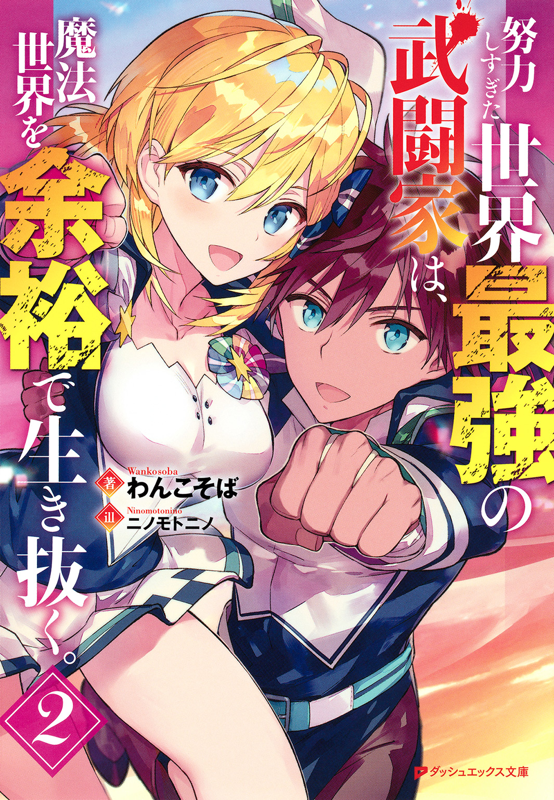

| 努力しすぎた世界最強の武闘家は、魔法世界を余裕で生き抜く。 2 | |
| わんこそば | |

この本は縦書きでレイアウトされています。
また、ご覧になる機種により、表示の差が認められることがあります。
 ダッシュエックス文庫DIGITAL
ダッシュエックス文庫DIGITAL
努力しすぎた世界最強の武闘家は、魔法世界を余裕で生き抜く。２
わんこそば
序 幕 伝説の幕開けです
その日の昼下がり。
「ちくしょうっ！ 武闘家のなにが悪いってんだ！」
場末の酒場にて、モーリスは苛立っていた。
世界中で猛威を振るう魔王軍を討伐するため騎士団に志願したのだが、魔力測定で不合格になってしまったのである。
モーリスは自分に魔法使いとしての才能がないことを――魔力があまりにも弱いことを自覚している。
だからこそ、モーリスは魔法学院には通わなかった。
魔法で戦うことができないならば、拳で魔物を倒せばいい。そう判断したモーリスは身体を鍛えて鍛えて鍛え抜き、ついには拳ひとつで魔物を倒せるまでに成長を遂げた。
その後も慢心せずに努力を積み重ね、二二歳になったいまでは手刀でカマイタチを飛ばせるようになった。
無論、ただ風を飛ばすだけではない。
その威力は魔物を容易く切り裂くほどだ。
魔力がなかろうと、モーリスの戦闘力は騎士団員に引けを取らない――騎士団に所属した暁には多くの魔物を討伐し、魔王こと《闇の帝王》を葬り、世界を平和にしてみせる！
......はずだったのだが。
「なんで俺が門前払いされるんだ！ なんで実技すら受けさせてくれねえんだ！ 魔力測定で落ちたんじゃ、俺の努力が水の泡じゃねえか！」
モーリスには強くなったという自信があった。
魔法騎士団の力になれるという確信があった。
自信と確信を得るために、一〇年以上も修行を続けてきたのだ。
しかし、試験官の『魔力が足りない』との一言で、モーリスの努力は否定されてしまった。魔法騎士団に所属するどころか、実技試験を受けることすらできず、力を証明することができなかったのである。
「そんなに魔力が重要か!? 大切なのは魔力の強さじゃねえだろッ！ 魔物を倒せるかどうかだろうが！」
実力不足なら納得できる。
だが魔力測定で不合格だったモーリスは、実力を見せることすらできなかった。
強さを証明することができなかったのだ。
そんなやり場のない怒りを発散するため、モーリスは昼間から酒場で飲んだくれているのであった。
「さ、さすがに飲みすぎよ......」
これで何杯目だろうか。モーリスが呂律の回らぬ口調で酒を注文したところ、女店主がおどおどしながらたしなめてきた。
「あなたは武闘家なんだから、ほかの誰よりも身体を大事にしなきゃだめ......だと思うわ」
自信なさげな口ぶりながらも、モーリスのことを心から心配してくれていることは伝わった。弱々しい眼差しを向けられ、愚痴っていたモーリスは急にバツが悪くなる。
「俺を気遣ってくれるのは嬉しいが......今日くらい飲ませてくれよ。......まあ、商売の邪魔になるってんなら帰るが」
女店主は首を横に振り、にこやかに笑う。
「どうせほかに客はいないし......馴染みの客の愚痴くらい聞くわ」
「ありがとな。そう言ってくれると、ここに来たかいがあるぜ」
モーリスが世界最強の武闘家を目指したのは一〇歳の頃である。しばらくは生まれ故郷にて修行を重ね、一二歳になった日に武者修行の旅に出た。
モーリスがここラムニャールにやってきたのは一七歳の頃だ。無職ゆえに金がなく、食うに困っていたところを救ってくれたのが、三つ年上の女店主だった。
食事の美味しさもさることながら、なにより店主の優しい人柄に惹かれた――魔法ではなく拳で魔物と戦い、最終的には魔王を倒せるくらい強くなるというモーリスの目標を、女店主は真剣に聞いてくれたのだ。
そのことがモーリスはたまらなく嬉しかった。
それゆえ五年の月日が流れたいまでもモーリスは月に一度はこの酒場を訪れている。そしていつ酒場を訪れても、店内はがらがらだった。
彼女はモーリスの身体を気遣ってくれるが、モーリスは酒場の経営を心配しているのだった。
とはいえモーリス以外に客が来ないというわけではなく――
「やっぱりここにいたんだね」
閑散としていた店内に、筋骨隆々の男がやってきた。
彼はモーリスの顔見知りである。
山籠もり中に魔物に襲われたとき偶然近くに居合わせ、共闘したことで互いの力を認め合い、頻繁に交流するようになった青年。
モーリスの親友にしてライバル――フィリップ・ヴァルミリオンである。
「誰かと思えばフィリップか。自慢話でも聞かせに来たのか？」
モーリスに悪気はないが、聞く者が聞けば『無礼千万』としてモーリスを非難するだろう。
なぜならフィリップはエルシュタット王国の王子なのだから。
しかもただの王子ではない。
万能の魔力を持つフィリップは魔法使いの才能にあふれ、彼なら魔王を倒してくれるはずと世間から期待され、数多くの魔法騎士団に勧誘されるほどの人物なのだ。
実技試験すら受けることができないモーリスとは、天と地ほどの差があるのである。
そんなフィリップに対して、モーリスは妬みの感情を抱くどころか、好意を寄せていた。
なにせフィリップは、魔法杖が破壊されても戦うことができるように山籠もりをしてまで身体を鍛えているのだから。
モーリスは、努力する者を好いている。
それゆえ魔法の才能を持っていながら命懸けで努力を重ねる彼に、モーリスは好感を抱いているのであった。
「また試験に落ちたんだって？ これで何度目だい？」
モーリスのとなりに腰かけるなり、フィリップは真顔でたずねてくる。
「うるせえ！ 俺は大器晩成型なんだ！ 見てろよ、次こそ受かってみせるからな！」
「魔力が足りない以上、何度受けても結果は同じだと思うけどね」
「魔力は気合いでなんとかするッ！ 俺は拳ひとつで魔物を倒せるようになったんだ！ 魔力だって、頑張れば手に入るに決まってるぜ！」
やれやれ、とフィリップは肩をすくめる。
「魔力なんかどうでもいいじゃないか。きみはすでに強いんだからさ」
「俺だっていまさら魔法で戦うつもりはねえよッ！ けど、魔力がないと騎士団に入れないんだからしょうがないだろうが！」
やけくそ気味に叫び、モーリスは酒をぐいっと飲む。
「......俺の話はいい。それより、お前はどうなんだ？ もう入団先は決めたのか？」
魔法騎士団は数多い。そしてフィリップは、国内の騎士団はもちろん、国外の騎士団からもスカウトされているのだ。
モーリスは騎士団に所属できるならどこでもいいと考えているが――できればフィリップのいる騎士団に所属したいと思っている。
騎士団に所属すれば、命懸けの日々になるだろう。大勢の魔物に囲まれることもあるだろう。そのときそばにフィリップがいれば、モーリスは安心して背中を任せることができる。
モーリスはフィリップのことを、それほどまでに信頼しているのだ。......まあ、そんなこと気恥ずかしくて酒の力を借りても言えないが。
「で、どうなんだ？ 決めたのか？ 決めてないのか？」
「それなんだけどね。私は、騎士団には所属しないことにしたよ」
モーリスはぽかんとする。
「な、なんでだ？ 騎士団に所属しないってこたぁ、まさか王位を継ぐことにしたのか？」
「王位を継ぐ予定は、いまのところないよ。ただ......騎士団に所属すれば魔王軍と戦うことになるだろう？ 私は、信用できない奴に背中を任せるつもりはないのさ」
「そっか。もったいねえな。お前ほどの魔法使いなら、魔王を倒せるかもしれないってのに」
「さすがに私ひとりでは無理だよ。――だけど、きみと私が手を組めば、魔王にも勝てるかもしれない」
ほろよい気分だったモーリスは、その一言で酔いが醒めた。
「俺たちで魔王軍とやりあおうってのか？」
「そうさ。私たちの手で魔王を倒し、きみを無能呼ばわりした連中を見返してやるんだ」
モーリスは、ごくりと喉を鳴らした。
フィリップの提案に、血が騒ぐのを感じる。
過酷な戦いになるだろうが、フィリップと手を組めば、本当に魔王を倒せるような気がしてきたのだ。
「けど、俺でいいのか？ 騎士団に所属したほうが遙かに安全だぜ？」
「さっき言っただろう？ 私は信用できない奴に背中を任せるつもりはないのさ。そして私は、きみを心から信頼している」
モーリスが酒の力を借りても言えないことを、フィリップは恥ずかしげもなく口にする。
「......酔ってるわけじゃねえよな？」
「まだ一口も飲んでないよ。――で、どうする？」
真剣な眼差しを向けてくるフィリップに、モーリスは力強くうなずいた。
「その誘い、乗ったぜ！」
「きみならそう言うと思ったよ！」
「だが、ひとつ大きな問題があるぜ」
「問題って？」
「お前とふたりきりで旅をするとか、ぜったいに嫌だ」
フィリップは、にやりと笑う。
「それについては同意するよ。きみとふたり旅なんて、むさ苦しいにもほどがある」
「だろ？ そこでだ。俺はある女を仲間に誘いたいと思ってるんだが......」
「私も、ひとり勧誘しようと思っていたところさ」
モーリスとフィリップはそう言うと、女店主を見つめた。
「ご両親の遺した大事なお店だということは知っているけど......。きみほどの才能を、ここで終わらせるのはもったいないよ」
「俺たちと一旗揚げようぜ！ なあ――コロン！」
女店主コロンは、その誘いを待っていたかのように微笑する。
「お得意様がふたりもいなくなったら、どうせ店は潰れるから。......だから、一緒に行くわ」
「決まりだね！」
「ああ、決まりだ！ 俺とフィリップとコロン――俺たち三人で世界を救うんだ！」
そうして場末の酒場で結成されたパーティが、のちに勇者一行として人々の希望の星となり、伝説として語り継がれることを――
いまはまだ、誰も知らない。
第一幕 転がってきた救世主です
ラムニャールにはのどかな雰囲気が漂っていた。
そこかしこに緑が茂る牧歌的な町だ。土道がうねうねと続き、ぽつぽつと家が佇んでいる。ここに立っているだけで癒されるけど、これからのことを思うと落ち着いてなどいられない。
「この町のどこかに、コロンさんがいるんだよな......」
勇者一行の創設メンバーのひとりであるコロンさんは、誰もが認める大魔法使いだ。そんな歴史に名を残すひととこれから顔を合わせるのだと思うとそわそわする。
なにより、コロンさんは魔力を宿す方法に心当たりがあるらしいからな！ もうじきずっと憧れていた魔法使いになれると思うとどきどきするぜ！
こうしちゃいられない！
「さっそくコロンさんに会いに行くとするか！」
荒ぶる心臓を抑えつつ、道なりに歩いていく。
コロンさんの住まいがどこにあるのかはわからないけど、俺の歩みに迷いはなかった。
コロンさんはかなりの有名人だからな。俺はコロンさんの顔を知らないけど、町のひとなら顔はもちろん住所だって知ってるはずだ。
日が昇って間もないため人っ子ひとり見当たらないけど、家はそれなりにあるからな。
このまま歩いていればいずれ誰かとすれ違うはずだ。
「......あれは」
あたりを見まわしながら歩いていたところ、さっそく人影を見つけた。酒場らしき家の前に、女のひとが佇んでいたのだ。
俺に負けないくらいそわそわしてるし......誰かと待ち合わせしてるのかな？
だとしたら、さっさと用件を済まさないとな。
「すみませーん。ちょっとおたずねしたいことがあるんですけどー」
歩み寄りながら声をかけると、彼女はびくっと震えた。
「な、なにか用かしら？」
おどおどしながらたずねてくる。
できる限りにこやかに話しかけたつもりだけど、不審者だと思われたのかな？ おとなしくコロンさんの住所を教えてくれると助かるんだけど......通報とかされないよね？
「コロンさんがどこに住んでるか知りませんか？」
まわりくどくたずねるとよけいに怪しまれそうなので、単刀直入に訊いてみた。
「し、知ってるわ......」
「よかった！ 実は俺、フィリップ学院長の紹介でコロンさんに会いに来たんです！ だけど住所がわからなくて......もしよければ住所を教えていただけると助かります！」
「そ、そう。あなたがアッシュくんなのね？」
「俺を知ってるんですか？」
もしかして彼女はコロンさんの家族なのかな？
勇者一行の最古参ってことは八〇歳くらいだろうし、コロンさんにこれくらいの孫がいてもおかしくないしな。
きっと俺を出迎えるようコロンさんに頼まれたんだろう。
「はじめまして。コロンです」
ご本人かよ！
「若すぎません!?」
化粧で若作りしてるってレベルじゃないぞ、これ。髪のツヤとか肌のハリとか、どう見ても二〇代じゃないか。
「よ、よく言われるわ。コロンはちっとも変わらないな、って」
昔のコロンさんを知ってるわけじゃないけど、ほんとになにも変わってないんだろうな。
さておき、予想外の見た目だったけど、このひとがコロンさんで間違いないだろう。無事に出会えて一安心だ。
「でも、どうしてそんなに若いんですか？ 想像より二世代くらい若かったのでお孫さんかと思いましたよ」
「わ、わたしに孫はいないわ。独身だから。若く見えるのは、薬のせいよ......。わ、わたし、自作の薬を試飲するのが趣味だから」
「さすが一流の薬師だけあって、研究熱心なんですね」
「い、一流とか言われると照れるわ......」
コロンさんは真っ白な肌を真っ赤にする。
「わたしはただ、いろいろな薬草と、いろいろな闇魔法を組みあわせて、適当に薬を作ってるだけだから......。そ、それで、適当に作った薬を飲んでみたら、老けないようになっちゃったのよ」
ある意味、どじっ娘だ。
つまるところセンスを頼りに薬を調合したから、若さを保つ薬の調合方法は覚えてないってことか。
「ところで、アッシュくんは魔力がない......のよね？」
「はい。フィリップ学院長に『コロンさんならなんとかできるかもしれない』って言われて、会いに来たんです！」
コロンさんは自信なげに目をそらす。
「あ、あまり期待しないでほしいけど......魔力なら、薬でなんとかできるかもしれないわ」
「本当ですか!?」
「ひぃっ」
コロンさんはびくっと震えた。
小動物みたいなひとだな。きっと大きな物音とか初対面の相手と話すのが苦手なタイプなのだろう。
フィリップ学院長が言ってた『コロンは気難しい』ってこういうことだったのか。
「く、詳しいことは家のなかで話すわ。ここがわたしの家だから......」
コロンさんって、酒場を経営してるのか。
接客が苦手そうだし、意外といえば意外だけど......。薬として扱われる酒もあるし、薬師のコロンさんにぴったりの仕事かもしれないな。
「お邪魔します」
コロンさんのあとに続き、俺は酒の香りが染みついた店内に踏みこんだ。
「好きなところに座ってちょうだい」
お言葉に甘え、カウンター席に腰かける。さっそく話が始まるかと思いきや、コロンさんはぼんやりしている。どうしたんだろ？
「こ、こうしていると、楽しかったあの頃を思い出すわ......」
コロンさんがカウンター越しに俺を見つめ、昔を懐かしむようにつぶやいた。そしてハッと我に返るように目を見開き、気を取りなおすように咳をする。
「アッシュくんは、魔力がほしいのよね？」
「はい！ ほしいです！」
「じゃ、じゃあ......魔力を手に入れるためなら、なんでもできるかしら？」
「もちろんです！ 魔法使いになれるならなんでもします！」
力強く応じると、コロンさんは棚から酒瓶を取り出した。
どくろのラベルが貼られた酒瓶には、禍々しい色の液体が入っている。コロンさんが酒瓶のふたを開けると、異臭が部屋に充満した。
「こ、これを飲んでもらうわ」
「わかりました！」
「ためらわないのね......！」
コロンさんが鼻をつまんで戸惑っている。鼻をつままざるを得ないほどの悪臭なのである。
けど、俺は悪臭に負けたりしない。
魔法使いになるためならマグマだろうとなんだろうと飲んでみせる！
「これを飲めば魔力が宿るんですよね？」
念のため確認を取ると、コロンさんは申し訳なさそうな顔をする。
「確実に宿る保証はないわ。その可能性があるというだけよ。そ、それでも、あなたはこれを飲むのかしら？」
「飲みます！ もう飲んでいいですか？」
「待って......！ せめて説明させてちょうだい」
一切ためらわない俺に戸惑いつつ、コロンさんが説明を始める。
「まず、あなたに魔力斑が浮かばなかったことには、ちゃんとした理由があるわ」
えっ。
「理由があるんですか？」
てっきり運が悪いだけだと思ってた。
「理由というか、これはただの持論なんだけど......あ、あまり期待はしないでちょうだいね。プレッシャーで死んでしまいそうだわ......」
「コロンさんの持論なら、俺は迷わず信じますよ！」
「責任重大だわ......！ 頑張って話すわね」
ふくよかな胸元に手を当てて深呼吸したあと、コロンさんは話を再開した。
「わ、わたしは魔力斑を持たないひとと二回会ったことがあるわ。あなたで三回目よ」
魔力斑が浮かばない人間は一〇〇年にひとりだと師匠は言ったけど、探せば意外と見つかるものだ。
俺だって、ノワールさんと出会ったしな。
「そのふたりは、年齢も性別も趣味も嗜好もバラバラだったわ。だけど、ひとつだけ共通点があったのよ」
そのふたりに共通してるってことは、俺とノワールさんにも共通してるってことだよな。
そんなものあったっけ？
「そのふたりには――前世の記憶があったのよ」
前世の記憶か......。
「それって、たとえば『幼い頃から武術の鍛錬を積んでいた男の唯一の楽しみはアニメだった。しかし男はアニメを視聴中に死んでしまう。目が覚めたとき、男は見知らぬ世界で赤子に転生していた』みたいな記憶ですか？」
俺がぺらぺらしゃべると、コロンさんはぽかんと口を開けた。
「アニメというのがなにかは知らないけど......。そこまで完璧に記憶してるひとは見たことがないわ。いまのは、アッシュくんの前世なのかしら？」
「はい。俺の前世です」
俺は素直に認めた。
前世のことを話すと変人扱いされそうなので師匠にしか教えてないけど、コロンさんはいろいろと事情を知ってるらしいしな。コロンさんなら俺を変人扱いしたりしないだろう。
そう思ったんだけど......コロンさん、明らかに戸惑ってるよな。
「あの......俺の前世、どこか変でした？」
「変なのは前世ではなく、あなたよ」
「俺が？」
「べ、べつに悪い意味じゃないわ。ええっと......普通、前世の記憶は成長するにつれて薄れていくものなの。わたしが出会ったふたりも、昔のことはほとんど覚えてなかったもの」
たとえるなら、俺は前世の記憶を録画保存してるけど、そのふたりは印象的なシーンの写真しか持ってないってことか。
しかもその写真は、日が経つにつれて色あせていく。前世の記憶なんて残ってないに等しいだろう。
どうしてふたりと差がついたのかはわからないけど......もしかしたら、叶えたい夢があるかどうかの違いかもしれないな。
前世から『魔法使いになってど派手な魔法を使いたい！』という夢を引き継いだからこそ、記憶が薄れなかったのだろう。
まあ俺の持論はさておき、コロンさんの持論が正しければ、ノワールさんも転生経験者ってことになるけど、当時の記憶は残ってるのかな？
学院に戻ったら、タイミングを見計らって訊いてみるか。
「ところで、転生したひとはどうして魔法を使えないんですか？」
「魔力斑は早ければ〇歳、遅くても四歳を迎える頃にはおしりに浮かぶわ。この〇歳から四歳という年齢は――肉体年齢ではなく、精神年齢のことなのよ」
つまり、たとえ生まれたばかりでも精神年齢が四歳になれば魔力斑が浮かぶってことか。
......ん？
それってつまり......
「俺の精神年齢、四歳以下ってことですか？」
だとしたら普通にショックだ。
「そ、そうではないわ。生まれながらに精神年齢が四歳を越えていると、魔力斑は浮かばないのよ」
なるほど。
精神年齢が四歳を越えたら魔力斑が浮かぶんじゃなく――精神年齢が〇歳から四歳の時期に浮かぶってことか。
そして俺の精神年齢は、転生した時点ですでに四歳を越えていた。
そのため魔力斑が浮かばなかったってわけだ。
そこまでは理解できたけど......
「いまの話と、この薬と、どういう関係があるんですか？」
なんとなく薬の効能を察しつつも、訊いてみる。
「その薬を飲めば――いろいろと若返るのよ」
やっぱり精神年齢を若返らせる薬か！
「じゃ、さっそく飲みますねっ！」
「ちょっ、ま、待って......！」
俺が酒瓶に手を伸ばすと、コロンさんが慌てて止めてきた。
「普通、そんな怪しい薬を迷わず飲むかしら？ あ、あなたはもうちょっと他人を疑うことを知ったほうがいいわ。悪いひとに騙されないか、心配よ......」
俺のことを心配してくれるなんて、コロンさんは優しいな。
「違いますよ。俺はコロンさんが作った薬だから迷わず飲むんです」
知らないひとに悪臭のする液体を飲めと言われても、ぜったいに飲まない自信がある。
でもコロンさんは一流の薬師として有名だし、なにより師匠の旧友だからな。そんなひとが用意した薬を疑うなんて、できっこない。
だから迷わず飲むのだ。
「信用されるのは嬉しいけど、説明はさせて......」
コロンさんは疲れを吐き出すようにため息をつく。
「そ、その薬、退化薬には副作用があるのよ」
「『飲んだら死ぬ』以外ならなんでも受け入れますよ」
「懐が広すぎるわ......！ さすがにそこまでひどい副作用ではないわ」
そりゃそうか。
コロンさんは自作の薬を試飲するのが趣味だしな。退化薬も試したことがあるはずだ。
コロンさんが元気にしてるってことは、命に関わる副作用はないってことだ。
「まず、退化薬を飲むことで、あなたの精神年齢は三歳くらいになるわ」
「なるほど」
「そして、肉体年齢も三歳くらいになるわ」
「なるほど」
「......い、いまのが副作用よ」
「そんなにひどい副作用ってわけじゃないんですね。安心しました」
「あなたすごいわね」
コロンさんに褒められる日が来るとは思わなかったぜ！
「まあ、薬の効果は三ヶ月で切れるから、ずっと三歳児のままってわけではないのだけれど」
つまり三ヶ月以内に魔力が宿らなければ、ほかの方法を探すしかないってことか。
「その間、俺にできることってありますか？」
魔力が宿るかどうかは、この三ヶ月にかかっている。
ただ待つだけってのは俺の性に合わないし、できることがあればなんでもするつもりだ。
「精神力を鍛えれば、魔力斑が浮かぶ可能性は高まる......と思うわ」
精神的に成長できそうなイベントをクリアすればいいってことか。
ぱっと思いつくのが『俺より強い相手に立ち向かう』だけど......いままで戦ってきたなかで一番強い奴って《闇の帝王》なんだよな。
魔王以上の強者が都合良く現れるとは思えないし、ほかの方法を探したほうがいいだろうな。
ま、その方法は追い追い考えるとして。
「いただきます！」
コロンさんの説明が終わったので、俺はさっそく退化薬を口に含む。
って、なんだこれ!? 想像を絶する不味さだぞ！ 一年以上放置した生ゴミの汁を飲んでる気分になってきた。
でも、これで俺にも魔力が宿るかもしれないんだ！
そう考えれば、どんなに不味くても我慢できる。
「飲みました！」
退化薬を一気に飲み干すと、胃が熱くなってきた。熱はあっという間に全身に広がっていき、ついに身体から蒸気が噴き出してくる。
「これって、身体が小さくなる前触れですか？」
「あ、あぅぁぅ......」
コロンさんが、あわあわしている。
その手には、おちょこが握られていた。
まさか......
「......俺、飲みすぎました？」
「て、適量の一〇〇倍は飲んでるわ......」
適量の一〇〇倍って......俺、何歳児になっちゃうんだ？
「だ、だけど変だわ。身体が縮むときは激痛に襲われて気を失うはずなのに......なぜあなたは平静を保っていられるの？」
「俺、修行のしすぎで痛覚が麻痺してるんです」
「なんだか怖くなってきたわ」
俺の体質に、コロンさんがぶるりと震える。
「ところで、あとどれくらい待てば幼くなるんですか？」
「お、おかしいわね。本来なら、あっという間に小さくなるのに。......もしかすると、修行のしすぎで免疫力が強くなったのかもしれないわね」
やめてくれ、俺の免疫力！ 薬の成分を瞬く間に駆逐するのはやめてくれ！ 異物じゃないから仲良くしてくれ！
「俺、無事に三歳児になれますかね？」
生きていてこんな質問をする日が来るとは思わなかった。
「心配することないわ。身体から蒸気が出てるってことは、薬が効いてる証拠よ。あなたには、適量の一〇〇倍がちょうどよかったのかもしれないわね」
よかった......。
「薬の効果って、いつごろ現れますかね？」
「そうね......。このペースだと、半日はかかりそうね。逆に、戻るときは一瞬だと思うわ」
半日か。
それなら明日の授業に間に合いそうだな。欠席するとみんなが心配するだろうし、三歳児になったら寄り道せずに戻らないとな！
......まあ、どのみち三歳児になった俺を見たら心配するだろうけどさ。てか、教室に入れてもらえるかな？
いや、心配するのはやめよう。ちゃんと説明すれば『アッシュは三歳になったんだな』って理解してもらえるはずだ。
「小さくなるまで時間がかかるし、ここまで走ってきたということは、寝てないんでしょう？ ベッドを貸してあげるから、少し寝るといいわ」
「気持ちは嬉しいんですけど......俺、身体から蒸気が出てますよ？」
このまま寝転がるとベッドが大変なことになるかもしれない。
「ベッドより、あなたの健康のほうが大事よ」
出会ったばかりの俺にここまで親切にしてくれるなんて......。憧れの大魔法使いにここまでされて嬉しくないわけがない！
「ありがとうございます！ 俺、寝ます！」
そうして寝室に案内された俺は、全身から凄まじい勢いで蒸気を噴き出しつつ、夢の世界へ旅立つのであった。
そして目が覚めたとき。
「おおっ！ すげえ！」
俺の身体が縮んでいた！
「ほんとに子どもになってる！ わっ！ 声も幼くなってる！」
鏡の前ではしゃいでいると、コロンさんがやってきた。出会ったときは見下ろす格好だったのに、いまでは思いきり見上げないと顔が見えないほどの身長差がある。
俺、ほんとに三歳児になったんだなぁ......。
「身体の調子はどうかしら？」
しみじみしていると、コロンさんがたずねてきた。
「特に異状はなさそうです。本当にありがとうございます」
ぺこりとお辞儀すると、コロンさんはぽかんとした。
「精神年齢三歳にしては、しっかりしてるわね......」
道場の跡取り息子だった俺は、幼い頃から厳しく躾けられてきたのだ。精神年齢が退行したところで急激に幼くなったりしないのである。
しいて変化を挙げるとすれば、お菓子を食べたくなったことくらいかな？ あと、いまは水よりジュースを飲みたい気分である。
「その服だとぶかぶかでしょう？ ちょっと待ってて......」
コロンさんはタンスから子ども服を取り出した。俺の身体に当て、「ぴったりだわ......」と満足げにほほ笑んでいる。
ていうか、どうして子ども服があるんだ？
コロンさんって独り身だったはずじゃ......
「それ、コロンさんの子ども時代の服ですか？」
気になったことがあればすぐにたずねるのも、幼くなった証拠だろうか。
「いいえ。これはわたしの弟子の服よ。もう独り立ちしちゃったけど、なかなか捨てられないのよ」
へえ、コロンさんに弟子がいたのか。
だったら、いまごろは一流の薬師として活躍してるのかもしれないな。
ま、それはそれとして。
「いろいろとお世話になりました。この御恩は一生忘れません」
子ども服に着替えた俺は、コロンさんに頭を下げた。
かつての俺ならもうちょっとのんびりしていただろうけど、いまは三歳児だからな。体力が落ちてるかもしれないし、そろそろ出発しないと明日の授業に遅刻してしまう。
「いいのよ。あなたは魔王を倒してくれたから......わたしに手伝えることなら、なんでもしてあげるわ」
「ありがとうございます！ 心強いです！」
大魔法使いのコロンさんにここまでしてもらったんだ、なんとしてでも魔法使いにならないとな！
そして使うんだ。ど派手な魔法を！
「じゃあ、気をつけて帰るのよ。またいつでも遊びに来ていいからね」
「はいっ！」
コロンさんに見送られ、俺は酒場をあとにした。
外に出ると、日は完全に沈んでいた。
だけど俺は夜目が利くし、なにより今日は満月なので、あまり暗さは感じなかった。
◆
エルシュタット魔法騎士団・北方討伐部隊の団長であるメルニアは、一〇人の従士とともに山の麓を訪れていた。
「予言が正しければ、そろそろでありますね......」
メルニアは緊張に顔をこわばらせていた。
ナザレフの町長いわく、じきに土系統の魔法を極めた魔王――《土の帝王》がこの地に降臨するらしいのだ。
「団長殿。魔王は本当に現れるのでしょうか？」
副団長のハーミッシュが不安げにたずねてくる。
「きっと現れないであります」
副団長をはじめ不安そうな団員たちに聞こえるように、メルニアは安心を促すような口調で告げた。
（そう。予言は町長の妄言に決まっているでありますよ）
部下たちをなだめながらも、メルニア本人は不安を拭いきれずにいた。
なにせ魔王が降臨すれば、間違いなくメルニアは殺される――それどころか、世界が滅んでしまうのだから。
かつて世界を混沌の渦に叩きこんだ魔王《闇の帝王》は、五〇年以上も昔に勇者一行の手で葬られている。
そしてメルニアは、勇者一行のメンバーだったトロロ・トントンの講演会に参加した際、《闇の帝王》がいかに残忍で、いかに凶悪で、いかに強かったのかを聞かされた。
講演会に参加して一〇年の月日が流れ、団長にまで出世したいまでも、勇者トロロの語った魔王の怖ろしさは脳裏にこびりついて離れない。
そんな《闇の帝王》と同等か、それ以上の力を持つ《土の帝王》が、これよりこの地に降臨する怖れがあるのだ。
そんなバケモノと戦うことになるかもしれないと思うと気が気ではない。
（私が不安がるわけにはいかないであります！）
団長が怯えていては、部下を不安にさせてしまう。
団長として、メルニアは常に平静を保ち、部下を安心させてあげなければならないのだ。
（あと数時間の辛抱であります！ それまでは平静を保つでありますよ！）
町長いわく、《土の帝王》こと新たな魔王は満月の晩に現れるとのことだった。
つまり、無事に夜明けを迎えることができれば、町長の予言は間違いだと証明されるのだ。
「ほら、見るであります。綺麗な満月でありますよ」
メルニアは煌々と輝く満月を見上げ、部下たちの気を紛らわせようとする。
美しい夜空を眺めていると、自然と心が落ち着いて――
キィィィィン！
突如として甲高い音が響き、五〇メートルほど前方の空間に亀裂が走った。
時空の歪みである。
「総員！ ただちに戦闘態勢に入るであります！」
メルニアたちは時空の歪みを取り囲み、魔法杖を構えた。
滅多にないことだが、時空の歪みを目にしたのははじめてではない。
あのときはフレイムリザードが現れたが、負傷者を出すことなく討伐できた。
冷静に対処すれば、時空の歪みなど怖れることはないのだ。このタイミングで時空の歪みが発生したのは偶然なのだ。
魔王が現れるわけがないのだ！
パキィィィィン！
そうであってほしいと祈っている間に空間が割れ――
赤茶けたマントを羽織ったガイコツが現れた。
全身にみなぎる禍々しいオーラ。
身体から放出される殺意の波動。
圧倒的なまでの圧迫感と圧倒感。
......間違いない。
信じたくはないが、認めざるを得ない。
「き、貴様は――貴様が《土の帝王》でありますね!?」
メルニアは勇気を振り絞って問いかけた。
闇の広がる眼窩が、メルニアを捉える。
『ほぅ。我が名を知っておるか。であれば、この場に居合わせたのも偶然ではあるまい』
しわがれた声が、メルニアの頭に響く。
この場にいる全員になんらかの魔法で声を送っているのだろう、部下たちは顔を恐怖に引きつらせ、なかには耳を押さえている者もいた。
「私は貴様を迎え撃つためにここで待っていたのであります！ そう、私こそが貴様の求める強者なのでありますよ！」
堂々と振る舞えば、魔王はメルニアを怖れて逃げだすかもしれない。そんな淡い期待を胸に秘め、メルニアは強気な態度で叫んだ。
『否！ 断じて否！ 汝は強者にあらず！ 汝は――汝らは弱者にほかならぬ！』
しかし魔王に虚勢は通じなかった。メルニアたちの実力を瞬時に看破した魔王は、だが、と言葉を続ける。
『だが、弱者とて容赦はせぬ。強者が現れるまでの退屈しのぎだ。この時代の戦士の力、我に見せてみよ！』
「言われなくてもそのつもりであります！」
メルニアは素速く魔法杖を振り、毒霧のルーンを完成させる。
その瞬間、魔王が紫の霧に包まれた。
メルニアの生み出した毒霧に触れたものは立ち所に溶けてしまうのだ。だが、このままでは毒霧はすぐに雲散してしまう。
「ハーミッシュ殿！」
「心得ております！」
副団長がルーンを完成させた途端、魔王の足もとから土が盛り上がり、霧ごと土に覆われる。そしてすかさず団員が氷魔法で土をコーティングする。これにて霧が漏れる隙間はなくなった。さらにあの狭さでは、ルーンを描くどころか身じろぎすらできないはず。
つまり、魔王は己の身体が溶けるのを待つことしかできないのだ。
「魔王といえど、魔法さえ使えなければ怖くないでありま――」
「――っ！ 団長殿！ うしろです！」
副団長の呼びかけに、メルニアは咄嗟にうしろを振り向いた。
......目の前に、ガイコツが佇んでいた。
「な、なぜ、そこに......」
メルニアは魔王の気迫に圧され、しりもちをつく。
「なぜそこにいるのでありますか!?」
土と氷でできた檻は破壊されずに残っている。
だというのに、なぜ閉じこめたはずの魔王がここにいるのだ！
『瞬間移動に決まっておろう』
「瞬間移動!? し、しかし、あの狭い空間でルーンを描くことなどできるわけが......」
メルニアはハッとする。
「まさか脳内ルーンでありますか!?」
『なにを驚くことがある。脳内ルーンなど初歩中の初歩であろう。この時代の戦士は、そんなこともできぬのか？』
「初歩中の、初歩......」
メルニアは絶望した。
世界最強の魔法使いとして名高いフィリップにも不可能とされていた脳内ルーンを、魔王は初歩中の初歩と言い切ったのだ。
メルニアと魔王の力の差は歴然だ。
覆しようがないほどの力の差を突きつけられ、メルニアは戦意を喪失してしまう。
そのとき。
仲間たちの悲鳴が響き、いつの間にかうつむいていたメルニアは顔を上げた。
「なっ!?」
メルニアは目を疑う。
まるで、さらし首だった。
仲間たちの首から下が、地中に埋まっていたのだ。
「どうしたのでありますか!?」
「わ、わかりません！」
「気づいたときにはこの状態でした！」
「な、なにかが足を引っ張っているんです！」
仲間たちが、ずぶずぶと地中に埋まっていく。
「貴様！ な、なにをしたのでありますか！」
メルニアが睨みつけると、魔王は愉快そうにガチャガチャと歯を鳴らして嗤った。
『急ぎ我を倒さねば、汝の仲間は生き埋めとなる。仲間を失いたくなければ――死ぬ気で我を愉しませるがよい』
「こ、この外道が！ 後悔させてやるであります！」
メルニアは魔法杖を構える。
「い、いけません！ 逃げてください！」
「部下を見捨てて逃げるわけにはいかないであります！」
「ですが、このままでは全滅ですッ！ 団長殿だけでも生き延びてください！ そ、そして、フィリップ様に魔王の降臨を知らせるのです！ これはあなたにしかできない任務です！」
「くっ......！」
メルニアは己の無力さを恥じるように唇を嚙みしめた。
このまま魔王と戦っても、殺されるのは目に見えている。
メルニアたちが全滅すれば、人類は魔王の奇襲を受けることになるのだ。
だが、魔王の降臨をフィリップに報告できれば、なにかしらの対策を取ることができる――たとえば《闇姫・コロン》や《拳闘士・モーリス》をはじめとする元勇者を集結させ、伝説の勇者一行を再結成することができるのだ。
それ以外に、人類が生き残る道はない。
そしてその道を歩むには、仲間を見捨てなければならないのだ。
『我を前にして、逃げきれると思うでないぞ』
冷ややかな声が脳裏に響く。
『我の魔力は、あらゆる物質を崩壊させる力を持つ。我の魔力を大地に注げば、家も、町も、人類も――大地に接するすべてのものが一瞬にして土に還るのだ！』
「そ、そんなの......そんなの勝てっこないでありますよぉ......」
メルニアは、あまりの恐怖に涙を流した。
魔王の意思ひとつでメルニアたちは――人類は土にされてしまうのだ。
逃げる、逃げないの二択に頭を悩ませていたメルニアだったが――選択肢など最初から存在しなかった。
魔王からは、逃げられないのだ。
『あらゆる生命は土から生まれ、土に還る運命にあるッ！ 我が降臨した以上、全人類は土に還る運命にあるのだッ！』
魔王は、絶大な力を誇示するかのように両腕を天にかざした。すると月が雲に隠れ、世界の行く末を暗示するかのように、あたりは闇に覆われる。
メルニアは、今度こそ死を覚悟した。
『さあ、土の時代の幕開け――』
そのときだ。
ごろごろごろごろごろごろごろごろごろごろごろごろごろごろごろごろごろごろ――......
メルニアと魔王のあいだを、なにかが高速で転がり去っていった。
「......」
『......』
メルニアと魔王は、なにかを目で追いかける。
ころころ......ぽてん。
と、五〇メートルほど向こうで止まったなにかは何事もなかったように立ち上がる。それと同時に雲が流れ、あたりに月明かりが降り注ぐ。
（こ、これは......まさかこれは、予言にあった勇者の降臨でありますか!?）
メルニアの胸に希望の光が灯る。
勇者であってほしいという想いを込め、すがるような眼差しで、転がってきた人影を見る。
満月の明かりに照らされたそれは――
「あーあ。服が汚れちゃったよ......」
ぱっと見、三歳児であった。
◆
ラムニャールを去ったあと。
エルシュタニアを目指して山の斜面を走っていたら、足がもつれて転んでしまった。
いつもなら転んだりしないけど、いまの俺は三歳児だからな。短い手足に慣れてないため、バランスを崩してしまったのだ。
ごろごろごろごろごろごろごろごろごろごろごろごろごろごろごろごろごろごろ――......
俺は山の斜面を猛スピードで転がっていく。
いつもならすぐに立ち上がるけど、いまの俺は三歳児だからな。こうして転がっているのがアトラクションみたいで楽しいのだ。
「これ、いい！ いい！ 楽しい！ すごい楽しい！」
このままエルシュタットに帰れないかな？
あ、でもそれだと危ないよな。ひとにぶつかったらまずいしさ。でもこんなところにひとがいるとは思えないし、回転を楽しめるのはいまだけだ。いまだけは回転を楽しむとしよう。
そうしてしばらく転がっていると、少しずつスピードが落ちてきた。斜面が終わり、平坦な場所に出たようだ。残念だけど、もうじき止まっちゃいそうだな。
ころころ......ぽてん。
名残惜しさを感じていると、ついに回転が止まってしまう。ありえないくらい転がったけど、三半規管は強いほうなので酔いはなかった。
問題があるとすれば......
「あーあ。服が汚れちゃったよ......」
月明かりに照らされ、服が泥だらけになっていることに気づいた。
せっかくコロンさんが譲ってくれたのに、なに子どもみたいなことやってんだろ、俺......。いい歳なんだし、泥遊びは卒業しないとな！
「......これって、精神的に成長したってことかな？」
きっとそうだ！ もしかしたら、いまので魔力斑が浮かんだかもしれない！
いますぐ確認したいけど、魔力斑はおしりに浮かぶしな。自力での確認は難しいし、学院に戻って鏡を見るとするか。
「き、きみ！ ここは危険であります！ いますぐ逃げるであります！」
走り出そうとしたところ、うしろから呼び止められた。
振り向くと、女のひとが駆け寄ってくる。
（こんなところでなにしてるんだろ？）
不思議に思っていたところ、彼女は俺を庇うように立った。魔法杖を構え、正面を見据えている。その視線を追いかけると――
赤茶けたマントを羽織ったガイコツが佇んでいた。
『汝が......強者か？』
頭のなかにしわがれた声が響く。
「もしかして......魔王か？」
マントの色は違うけど、《闇の帝王》にそっくりだ。ほかに違いがあるとすれば、こいつのほうが少しだけ背が高いことくらいだ。
『いかにも。我が名は《土の帝王》――この世の土を統べる者なり！』
「そっか。魔王ってほかにもいたんだな」
これは好都合だ！
このガイコツが《闇の帝王》より強ければ、俺は精神的に成長できるかもしれない！ 少しだけ背が高いし、きっとこいつのほうが強いはずだ！
『面白い！ 我が名を聞いて眉一つ動かさぬとは！ 我と対峙してたじろぎ一つせぬとは！ 確信したぞ！ 汝こそ、我が長年待ち望んだ強者だ！』
「こ、こんな幼子が強者なわけないであります！ きみ、いますぐ逃げ――」
『黙れ。弱者は土に還るがよい！』
瞬間、女性の首から下が地中に埋まった。
見ると、そこらじゅうに同じような状況に陥っているひとがいる。
みんな魔王にやられたのかな？
「くっ。動けないであります......！」
『当然であろう。汝はただ埋まっているのではない――我の魔法で埋まっているのだからな！ ゆえに、そこから脱することはでき――』
「だいじょうぶですか？」
ずぼっ。
俺は土中に手を突っこみ、女性を引っこ抜いた。ついでにほかのひとたちも引っ張り出す。
これ、なんか芋掘り遠足を思い出すなぁ......。って、童心に返ってる場合じゃないよな！ 精神的に成長しなきゃいけないんだからさ！
『我の魔法を容易く破るとはッ！ やはり我の目に狂いはなかった！ ――だが、我の敵ではない！』
魔王が姿を消した。
『――強者よ、土に還るがよい！』
瞬間移動でまわりこんだのだろう、魔王が背後から俺の肩を摑んできた。瞬間、俺の上着が土になる。
『バカな!? 服だけだと!? なぜ土に還らぬのだ!?』
魔王が衝撃を受けたようにあとずさる。
『ま、まさか土になったその瞬間に治癒したのかッ!? ありえぬッ！ この我の魔法を上回る治癒魔法などありえぬッ！』
実際、魔法じゃなくて自然治癒力だしな。
『だが、いまのはほんの小手調べに過ぎぬ！ これより見せるのは我の真髄にして真骨頂ッ！ 土魔法を極めし《土の帝王》の本気をとくと見よ！』
魔王が天に手をかざす。
『大地よ、我に集え！』
その瞬間、ぶわっと土が盛り上がり、魔王に纏わりついた。ぐねぐねと土が蠢き、瞬く間に西洋風の甲冑のような形になっていく。さらに魔王の手元に土が集まり――巨大なハンマーが生み出された。
「な、なんという......なんというおぞましい姿でありますか......」
「終わりだ......世界の、終わりだ......」
「じ、次元が違いすぎる......」
「うっ、はあっ......うぐっ、ぉげえええええ......っ」
土武装した魔王を見て、みんなはガタガタと震えている。
『フハハハ！ こうなった以上、手加減はできぬぞ！ 汝を土に還したあとは、全人類を土に還してやる！』
大量の土をガチガチに固めたのだろう。かなりの重量があるようで、ズシンズシンと足音を響かせながら魔王が歩み寄ってくる。
『光栄に思うがよい、久しく見ぬ強者よ！ 汝は我の全力で土に還ることができるのだ！』
そしてハンマーを振り上げ――
『我が鎧はいかなる攻撃をも防ぐ！ 我が槌はいかなる防御をも砕く！ ――その威力、その身をもって味わうがよい！』
俺の頭に思いきり叩きつけてきた。
べちゃっ。
ハンマーは砕け散り、俺の全身が泥まみれになる。
「泥遊びは卒業したんだよ！」
パァァァァァァァァン！！！！！！！！
魔王の顔面に拳を叩きこむと、頭蓋骨がヘルメットごと弾け飛んだ。
「帰ったら洗濯しないとな」
粉々になった頭蓋骨が夜風に運ばれていくのを横目に、俺は身体についた泥を払い落とす。
それから、ぽかんと口を開けている女性に告げた。
「魔王は土に還りました。では、俺は用事があるのでこれで――」
「ちょ、ちょっと待つでありますっ！」
「なんですか？」
「私はエルシュタット魔法騎士団・北方討伐部隊団長のメルニア・マスキャットであります！ どうか貴殿の名とお歳をお聞かせいただきたい！」
「アッシュです。いまは三歳です」
「アッシュ殿。貴殿は全人類を救った英雄であります！ どうか我らとともにエルシュタニア城へ来ていただきたい！」
「俺、ちょうどエルシュタニアに戻るところなんです」
「なんと！ 同郷の方でありましたか！ ならば我らとともにエルシュタニアへ向かうであります！ もちろん交通費は我々が支払う――」
「すみません。俺、走って帰ります」
メルニアさんたちがほうけたように目を丸くする。
「は、走って帰るのでありますか？ ......なぜ？」
「列車に乗ると明日の授業に間に合いませんからね。走ったほうが早く帰りつくんです」
「走ったほうが!? 列車に乗るより!?」
「はい。俺はエルシュタット魔法学院にいるので、なにかあったら連絡してください」
メルニアさんたちにぺこりと頭を下げ、俺は学院へと走るのだった。
◆
エルシュタニア城の一室にて。
「本当に魔王が降臨したんですの!?」
魔法騎士団総長のアイナ・ヴァルミリオンは、メルニアの電話報告に度肝を抜かれていた。
魔王降臨の予言については、昨晩メルニアに聞かされていた。そのときは予言を信じきれず、『夜明けまで町のそばに滞在して町長を安心させてやりなさい』と指示したのだが......まさか本当に魔王が現れるとは。
「電話してきたということは、あなた方は無事なのですね!?」
『はい。奇跡的に負傷者はいないのであります！』
「それはなによりですわ......」
アイナはほっと胸を撫で下ろし、ごくりと生唾を飲みこんだ。
「それで......魔王はどうなったんですの？」
魔王の怖ろしさはフィリップに聞かされている。
勇者一行が三日三晩の激闘の果てにようやく倒せるほどの魔王が、精鋭揃いとはいえ地方の討伐部隊に過ぎないメルニアたちに倒せるとは思えない。
つまり、この世界のどこかに魔王がいるということだ。
そう考えると、アイナは生きた心地がしなかった。
『魔王は三歳児のパンチで粉々になったであります』
「は？」
『粉々になったのであります。三歳児のパンチで』
「言いなおさなくても聞こえてますわっ！ あなた、わたくしをからかってるんですの!?」
三歳児が粉々にできるものなんて、クッキーくらいのものである。たとえ《闇の帝王》より防御力が弱かったとしても、三歳児に粉々にされるとは思えない。
『本当でありますよぉ！ 魔王が粉々になるところを、この目で見たのでありますよぉ！』
メルニアは『まじめ』を絵に描いたような女だ。
アイナ相手に虚偽の報告をするとは思えない。ましてや三歳児が魔王を倒したなんて冗談を口にするわけがない。
つまり、本当に《土の帝王》は三歳児のパンチで砕け散ったということだ。
だとすると、異常なのはその『三歳児』ということになる。
「とにかく、脅威は去ったということですわね？」
『はいっ！ それは間違いないのであります！』
アイナは、ほっと安堵の息をつく。
「そうですか......。では、この件についてはわたくしのほうからお父様にお伝えします。民を不安にさせぬよう、このことはけっして口外してはなりません」
『はっ！ 部下にも言い聞かせておくであります！』
「それで、その三歳児の素性はわかりますの？」
魔王を倒したということは、人類の味方なのだろう。
しかし、相手は三歳児だ。機嫌を損ねれば暴れるかもしれない。
お礼をしたい気持ちもあるが――挨拶をする前に、まずはどんなことでご機嫌斜めになるか把握しておいたほうがいいだろう。
『三歳児――アッシュ殿は、エルシュタニア魔法学院の生徒であります』
「エルシュタニア魔法学院の......？」
アイナはエルシュタニア魔法学院の卒業生で、同時に運営側の人間でもある。
学院に三歳児が入学するのは前例のないことだし、それが事実ならアイナの耳に届いているはず。
だが、アイナはアッシュという名に聞き覚えがなかった。
（とにかく学院へ行ってみればわかることですわね）
思考を切り上げ、アイナは労いの言葉を口にする。
そして通話を終えると、父の寝室へと向かう。
「お父様。アイナです。大事なお話がありますの。......入りますわよ？」
ノックをしたあと、ドアを開ける。
ベキベキッ！
室内では、筋骨隆々の老人――フィリップが、魔法杖をへし折っているところだった。彼のまわりには『く』の字に折れ曲がった魔法杖が散乱している。
「どうしたんだい、アイナ？」
「お父様こそどうしたんですの!?」
真夜中に大量の魔法杖をへし折っている父の姿に、アイナは戸惑いを隠しきれない。
「ぜったいに壊れない魔法杖を作っているのさ。もっとも、完成にはほど遠いけどね」
「は、はあ......」
なぜそんなものを作ろうとしているのかはわからないが、いまは報告を優先しなければ。
アイナは気を取りなおすように空咳をすると、《土の帝王》について事の顚末を伝えた。
「そうか......。アッシュくんは無事に三歳児になったんだね。アッシュくんにはますます頭が上がらないな。だが、これは終わりの始まりに過ぎない......。《土の帝王》が降臨したということは、いよいよ《終末の日》が近づいているというわけか......これは一度、三人で話しあう必要がありそうだ......」
アイナの報告に、フィリップはいろいろなことを知ってそうな発言をする。
「アッシュさんのこと、ご存じですの？」
父がなにを言っているのかはほとんど理解できなかったが、彼がアッシュの知り合いということは伝わった。
「もちろん知っているさ。アッシュくんは、モーリスの弟子だからね」
「まあっ！ モーリスおじさまの!?」
アイナは顔を明るくさせた。父の旧友にして勇者一行の最古参――世界を救った功労者たるモーリスの弟子なら信頼できる。かんしゃくを起こして暴れたりしないだろう。
「わたくし、アッシュさんに直接会ってお礼がしたいですわっ！」
「ちょうどよかった。私はしばらく旅に出るからね。私が戻るまでのあいだ、学院長の代理を任せてもいいかな？」
「もちろんですわっ。あぁ、早くアッシュさんにお会いしたいですわっ！」
アイナは王女だが、アッシュは世界を救った英雄だ。
三歳児とはいえ、失礼のないようにしなければ。
こちらから挨拶に出向くのだから、手土産くらいは持っていったほうがいいだろう。
（三歳児ということは、お菓子とか大好きですわよね？ それとも、オモチャや絵本のほうがいいでしょうか？ あるいは子ども服を――）
アイナはアッシュになにを贈るか考えつつ、明日を楽しみにするのであった。
第二幕 王女様は興味津々です
魔王とのいざこざはあったけど夜通し走ったこともあり、日が昇る頃にはエルシュタニアに到着した。
「授業まで時間あるし、どこかで腹ごなしをしてから寮に戻ろうかな」
ついでに子ども服を買っておきたいけど......そういえば、制服のことを考えてなかったな。
いつもの制服だとダボダボになるし、そんな格好で授業を受けるわけにはいかない。
備品室を漁ってもこの身体にフィットする制服は見つからないだろうし、先生にお願いして私服で過ごす許可をもらうしかないか。
ま、私服で通うにしても服屋は閉まってるんだけどな。かといって半裸かつ泥だらけのまま授業を受けるわけにはいかないし......
ぎりぎりの登校になってしまうけど、服屋の開店を待つとするか。
なんにせよ、財布を取りに学生寮に戻らなくちゃならないんだけどな。
予定を立てつつ歩いていると、学院の校門前に見知った人影を捉える。
あれは......
「おはよ、ノワールさん。こんな朝早くからなにしてるんだ？」
挨拶すると、ノワールさんが青みがかった髪を風になびかせながら見下ろしてくる。
「......迷子なの？」
そうだよな。いまの俺は三歳児だからな。初見で正体を見抜けってのが無理な話か。
「俺はアッシュだよ」
「アッシュは、もっと背が高いわ。だけど、貴方は小さいわ」
ノワールさんは制服のマントを脱ぎ、俺の身体にそっと羽織らせてきた。俺の上着は魔王に土にされたため、上半身は裸だったのだ。
「ありがとう、ノワールさん！」
「......感謝されると照れるわ」
ノワールさんはどことなく嬉しげに頰を紅潮させる。それから大切そうに手にしていた『外カリッ、中もふっ♪ もっちりもちもちほっぺがとろける夢のめろめろメロンパン』をちぎり、俺の手にそっと握らせてくる。
「全部はだめよ。残りは友達にあげるもの」
後ろ手にメロンパンを隠すノワールさん。
その友達って、もしかして俺のことかな？
大好きなメロンパンを分けてくれるなんて......。甘い物を食べたい気分になっていたからか、よけいに嬉しく感じるぜ。
「......そういえば、なぜ私の名前を知ってるのかしら？」
「俺がアッシュだからだよ」
「アッシュは、もっと背が高いわ。だけど、貴方は小さいわ」
だめだ。堂々巡りだ！ ノワールさんに俺がアッシュだと気づいてもらうには、証拠を提示しなきゃならないようだ。
でも、そんなもの持ってないし......。武闘家としての力を見せれば信じてもらえるかもしれないけど、町を壊すわけにはいかないしな。
うーん、どうしよ。いつも一緒にいるノワールさんが信じてくれないんじゃ、ほかの生徒に信じてもらうのも難しいだろうしな。
俺をアッシュだと信じてもらうのは思った以上に骨が折れそうだ。
「なにやってるんすか？」
エファが駆け寄ってきた。
ジャージ姿のエファはぐっしょり汗をかいていた。俺の訓練メニューに従い、ランニングをしていたらしい。
まじめに修行をこなす弟子のエファなら、俺の正体に気づいてくれるはずだ！
「子どもに絡まれたわ」
ノワールさんが、ざっくり事の顚末を話す。
するとエファは首をかしげ、ぽんと手を打った。
「ああ、迷子っすね」
迷子じゃないよ！
でもまあ、俺だって三歳児がひとりで歩いていたら迷子だと思うけどさ。
「どうすればいいかしら？」
「わたしに任せるといいっす！」
エファはしゃがんで俺に目線をあわせると、にこにこしながら頭を撫でてきた。
「ぼく～、お名前はなんていうっすかぁ？」
「アッシュだよ！」
「かっこいい名前っすねぇ。お姉さんはエファっていうっすよぉ」
知ってるよ！
「違うんだ。俺はアッシュ・アークヴァルドなんだ」
「あはっ。ねえ、聞いたっすかノワールさん！ こんなに小さな子どもが師匠に憧れるあまり『アッシュ・アークヴァルド』を名乗ってるっすよ！」
違えよ！
「俺は正真正銘のアッシュだよ！ ほら、いつも広場で武術の稽古をつけてやってるだろ？」
「稽古に参加したくて、こっそり覗き見してたんすねっ」
「いたよ！ その場に！」
「大きくなったら師匠に弟子入りするといいっす！」
だめだ。
エファは完全に俺を子どもだと信じている。
「やあやあ、みんな揃ってアッシュくんのお出迎えかなっ？ かくいうあたしもそうなんだけどねっ！」
フェルミナさんが赤いポニーテールを揺らしながら歩み寄ってくる。
またこの流れか......。
フェルミナさんも、俺に気づいてくれないんだろうな。
「って！ アッシュくんが小さくなってる!?」
信じてたぜ、フェルミナさん！
「どうして俺だとわかったんだ？」
「どうしてもこうしても、アッシュくんの面影が残りまくりだよっ！ だけどどうして小さくなってるの？」
「三歳児になる薬を飲んだんだ。三ヶ月で元通りになるけどね」
「そうなんだ！」
手短に事情を告げると、フェルミナさんはすんなり納得してくれた。
「私は、はじめから気づいていたわ。ちょっとからかってみただけよ」
ノワールさんが取り繕うように言う。
俺の目には気づいてなかったように見えたけど......無表情で淡々としゃべるノワールさんが言うと、本当かどうかわからないな。
一方で、エファは泣きそうな顔をしている。
「師匠の正体に気づけなかったわたしは破門っすか......？」
「俺の言いつけ通り訓練してる弟子を破門になんてしないって。ちゃんと卒業まで面倒見るよ。今日も一緒に稽古しようなっ」
「おっす！ わたし、もっと頑張るっす！」
エファはぐしぐしと涙を拭い、めらめらとやる気の炎を滾らせる。それでこそ俺の弟子だ！
「とにかくおかえりだね、アッシュくんっ！」
「うん。ただいま」
そうして友達に出迎えられた俺は、今回の出来事を報告するため学院長室へと向かうことにした。
「あら、あなたたち早いのね。......って、その子は誰なの？」
エファたちと廊下を歩いていると、担任のエリーナ先生に呼び止められた。
「この子はアッシュくんですよっ！」
「アッシュくん？」
「はいっ！ ほらっ、目元とかそっくりじゃないですかっ！ こんなの、どこからどう見てもアッシュくんですよっ！」
「どこからどう見てもアッシュくんには見えないわよ？」
フェルミナさんの力説むなしく、エリーナ先生は戸惑っている。
「俺はアッシュです。拡声魔法といえばわかりますよね？」
俺は編入試験を大声で突破したが、エリーナ先生は拡声魔法だと信じているのだ。
そして編入試験のことは、極一部の人間しか知らない。
「な、なぜあなたがそれを知って......まさか、本当にアッシュくんなの？」
俺はうなずく。
「いろいろあって三歳児になったので、フィリップ学院長に報告することにしたんです！」
エリーナ先生は啞然としつつため息をついた。
「まったく、あなたには驚かされてばかりね......。フィリップ学院長なら急用ができたとかで、しばらく学院を留守にするそうよ」
急用って、《土の帝王》のことかな？
それなら俺にも関係のあることだし、そのうち向こうから呼び出されるかもしれないな。
フィリップ学院長と話すのは、そのときでいいか。
「わかりました。それと、この身体にあう制服がなければ私服で授業に出たいんですけど......問題ありませんか？」
「構わないわよ」
「ありがとうございます！」
懐の広い先生が担任でよかった！ ぺこりと頭を下げると、エリーナ先生は手を振って歩き去っていく。
「用事ってなんだろうねっ？」
「フィリップ学院長は国王様でもあるっすからね。きっと大事な会議っす！」
「『外カリッ、中もふっ♪ もっちりもちもちほっぺがとろける夢のめろめろメロンパン』を大量に仕入れる会議だと嬉しいわ」
などと楽しそうにおしゃべりするフェルミナさんたち。
魔王が降臨したことが広まれば騒ぎになるだろうし、言いふらさないほうがよさそうだな。
さておき、フィリップ学院長がいないなら、もうひとつのやるべきことをやらないとな！
「じゃ、俺は学生寮に戻るよ！」
「うんっ！ また教室でねっ！」
そうしてフェルミナさんたちと別れた俺は、学生寮へ向かった。
そして部屋に入るなりズボンを脱いだ。
鏡に背中を向け、ぷりっとしたおしりを見つめる。
「......浮かんでない」
手触りのよさそうなおしりに魔力斑は見当たらず、俺はがっくりする。
泥遊びを卒業したとき、精神的に成長したと思ったんだけどなぁ。
「でも、まだまだこれからだ！」
タイムリミットまで三ヶ月。
精神的に成長できそうなイベントには積極的に参加して、魔力斑を手に入れないとな！
それはそれとして。
「そろそろ服屋が開店する頃か」
たしか近所にこれくらいの時間に開店する服屋があったはず。そんなに長居をするつもりはないし、いまから行けば授業に間に合うだろう。
「ええと、財布財布......あった」
俺は小さな手で財布を握りしめる。そしてぶかぶかのシャツに袖を通すと、学生寮をあとにしたのであった。
俺は服屋にやってきた。
「いらっしゃいませ～。今日はひとりでお買い物に来たのかな～？」
落ち着いた雰囲気の店内に入ると、女性店員がにこやかに話しかけてくる。
「はい。ひとりで来ました」
「偉いねぇ～」
「ありがとうございます。ところで、子ども服売り場ってどこにありますか？」
「あっちだよ～。ひとりで行けるかな～？」
「行けます」
「偉いねぇ～」
店員さんに褒められ、俺はちょっぴり気分を良くしながら子ども服売り場へ足を運ぶ。開店直後なので誰もいないと思ってたけど、そこにはひとりの先客がいた。
「うぅ～ん......。種類がありすぎて、どれにするか迷いますわね......」
女のひとが、うんうん唸っている。
二〇代前半くらいの見た目だし、子どものために服を選んでるのかな？
だけど、どうして目元を仮面で隠してるんだろ。これから仮面舞踏会にでも行くのかな？ それにまるでお姫様みたいなゴージャスなドレスに身を包んでるし......
って、じろじろ見るのは失礼だよな。俺も服を選ぶとするか。
仮面をつけた女性を気にしないようにしつつ、俺は服を見てまわる。
うーん。どれにしようかな。授業を受けるわけだし、できれば派手じゃないものがいいんだけど......この店の子ども服、カラフルなものが多いな。
じぃ～。
仮面の女性が、じっと俺を見つめてくる。
「......あの、なにか？」
視線が気になったので話しかけると、こちらへ歩み寄ってきた。こほんと咳払いして、
「わたくしは怪しい者ではありませんわ」
俺は蝶のような仮面を見つめる。
「か、仮面が気になる気持ちはわかりますわ。ただ、街中で素顔を晒すわけにはいきませんの。騒ぎになるかもしれませんもの。ご理解いただけると助かりますわ」
もしかして有名人なのかな？
きっとそうだ。正体がばれるとファンが押し寄せ、店に迷惑がかかるかもしれないからな。そんな理由で顔を隠してるんだろう。
「とはいえ名乗らないのも失礼でしょう。本名をお教えすることはできませんが......そうですわね。わたくしのことは『アイちゃん』とでも呼んでくださいな」
アイちゃんはしゃがみこみ、俺の目をじっと見つめてくる。
「ところで、あなたはおいくつですの？」
「三歳です」
俺は外見年齢を告げた。
この見た目で一六歳ですとか言っても信じてもらえないだろうしな。
「まあっ、ちょうどよかったですわっ！ 実を言うとわたくし、三歳児に贈る服を探してるんですのっ。よかったらいろいろとアドバイスしてくださいな」
「俺でいいんですか？」
俺は三歳児デビューを果たしたばかりだ。
ためになるアドバイスができるかどうかはわからないが......
「あなたしか頼れるひとがいないのですわっ」
店のひとに聞いたほうがいいんじゃないかとも思ったけど......きっとアイちゃんは三歳児のリアルな意見が聞きたいのだろう。
「わかりました。俺でよければ力になります！」
アイちゃんは嬉しそうに顔を輝かせる。
「頼もしいですわっ！ では、ちょっと失礼しますわね」
断りを入れ、俺の服をまじまじと見つめるアイちゃん。
「ぶかぶかの服......丈が長い......スカート......ワンピース......ワンピース！」
アイちゃんはなにかを閃いたようにハッとすると、子ども服を手に取った。
「い、いまはこういうのが流行ってるんですの？」
アイちゃんが自信なさげに見せてきたのは、まっしろなワンピースだった。
服を贈る相手って、女の子だったのか。
「ワンピースは定番アイテムですからね。必ず喜んでもらえますよっ！」
女の子の服ならエファの家でたくさん見たからな。五つ子ちゃんたちがワンピースを着てるところも目にしたし、きっとその娘も大喜びだろう。
「本当ですのっ？ 正直これはどうかと思いましたけど、あなたがそうおっしゃるのでしたら買いますわっ！ 即買いですわっ！」
買い物かごにワンピースを入れると、再び服を見てまわり、
「じゃあじゃあ、これなんてどうですのっ？」
ふりふりのついたドレスを見せてきた。
まるでお姫様が着るような衣装だ。
「それならめちゃくちゃ喜ばれますよっ」
三歳くらいの女の子は、お姫様に憧れるものだしな！
「本当ですのっ？ だったらこれも買いますわ！」
「予算があるなら、このリボンも一緒に買うといいかもしれませんね」
「まあっ、いまはリボンも流行っているのですね！ ではリボンも買うとして......そうですわねぇ。たとえば、あなたはなにか欲しいものとかありますの？」
俺が欲しいものか......。
「服も欲しいですけど、靴も欲しいですし、あと下着も欲しいですね」
痛みを感じないから気づかなかったけど、いまの俺は裸足だ。どこかで靴も買わないとな。
「なるほど！ 靴と下着は盲点でしたわっ！ ああでも、靴のサイズはよくわかりませんわね......」
「サイズが違うと、靴擦れするかもしれませんからね」
「でしたら、下着だけにしておきますわ。ええと......こういうのはどうですの？」
アイちゃんは俺にブリーフを見せてくる。
どう見ても男の子用だ。
女の子にそれを贈るのはどうかと思う。
「それより、こっちのほうがいいですよ」
俺はアニマルプリントが施されたパンツを手に取った。
もちろん女の子用だ。
「それですの!?」
「はい！ これは自信を持っておすすめします！」
「な、なるほど......。いまはこういうのが流行ってるんですのね。ではこれも買いますわっ」
「ぜったいに喜ばれますよっ！」
そんな調子で俺は女の子の服を選んでいき、アイちゃんはすべてを買い物かごに突っこんだ。
そのほとんどがお姫様みたいな服である。今日、この町のどこかで小さなお姫様が誕生することになるのだ。そう考えると、他人事ながらほほ笑ましくなる。
「助かりましたわっ！ あなたがいなければ、見当違いな服ばかり買っていたところですわっ。これで喜んでもらえると嬉しいのですが......」
「だいじょうぶですよ！ そのプレゼントには、アイちゃんの想いがこもってますからねっ。ぜったいに喜んでもらえますよっ！」
「渡すのが楽しみですわっ！」
アイちゃんは安心したように笑みを浮かべるのであった。
◆
朝のホームルームにて。
「皆様はじめまして。わたくし、アイナ・ヴァルミリオンと申します。本日付で学院長代理を任されましたので、どうぞよろしくお願いいたします」
エリーナ先生が連れてきた女性の挨拶に、教室は騒然としていた。
アイナ・ヴァルミリオンといえばエルシュタット魔法騎士団の総長であり、エルシュタット王国の王女様でもある。
さらに仮面は外してるけど、服装と声からして、アイちゃんでもある。
そしてアイちゃんの手には、見覚えのある服屋の紙袋が握られていた。
俺の予想が正しければ、あのなかにはお姫様セットが入っているはずだ。あれを持ってこの学院を訪れたということは、贈り物の相手はこの学院にいるのだろう。
この学院にいる三歳児に、俺はひとりしか心当たりがなかった。
......もしかすると俺は、とんでもないアドバイスをしてしまったのかもしれない。
「うわあっ、アイナ様だ！ アイナ様だよっ!!」
途方に暮れる俺のとなりで、フェルミナさんがはしゃいでいる。
将来的に魔法騎士団に所属したいと思っているフェルミナさんにとって、魔法騎士団総長のアイちゃんは女神様みたいな存在なのだろう。
「あわわっ、こっちに近づいてきたよっ!? ねえ、どうしよう!?」
フェルミナさんはパニック状態だ。俺の肩を揺さぶりながらどうしたものかと聞いてくるが、それはこちらの台詞である。
もしかすると、この場で紙袋を贈られるかもしれないのだ。みんなは紙袋の中身が気になるだろうし、アイちゃんは視線で『さあ、開けてみてください』と告げてくるだろう。
お姫様セットが登場すれば、教室の空気は一変するはずだ。もちろん俺は喜んでみせるけど、みんなの顔を見て、アイちゃんは『贈り物を間違えたかもしれない』と感じるかもしれない。
アイちゃんはあんなに楽しそうにプレゼントを買っていたのだ。プレゼント選びに失敗したなんて思わせるわけにはいかない！ 噓でも喜ぶ演技をしないとな！
「うわあっ、アイナ様が目の前に来たよ!?」
アイちゃんが目の前で立ち止まると、フェルミナさんは立ち上がって頭を下げる。
「は、はじめまして！ フェルミナ・ハーミッシュですッ！ あのっ！ 父がお世話になってます！」
「ハーミッシュ......って、北方討伐部隊の副団長さんですわね？」
「はい！ そのハーミッシュです！」
北方討伐部隊って、メルニアさんが率いる部隊のことだよな？
てことは、土から引っこ抜いたひとのなかに、フェルミナさんのお父さんがいたってことか。
「あなたのお父様のことは、メルニアから聞かされてますわ。とても頼りになるのだと褒めてましたわよ」
フェルミナさんは嬉しそうに瞳を潤ませる。
「メルニア様に評価していただけて光栄です！ あたしもメルニア様みたいに強くて勇ましい魔法使いになれるように頑張ります！」
メルニアさんは、魔王と対峙しているというのに俺を守ろうとしてくれた。
ああいう『誰かを守るために圧倒的な強敵に立ち向かう魔法使い』こそ、フェルミナさんの理想とする騎士の姿なのだろう。
「あなたがアッシュさんだったのですね」
と、アイちゃんが俺にほほ笑みかけてくる。
「わたくしが誰だかわかります？」
「アイちゃんですよね」
俺が言い当てると、教室がざわついた。
「アイナ様のことをアイちゃんって......ふたりはどういう関係なの!?」
「それは秘密ですわ」
アイちゃんは唇に人差し指を当て、ウインクした。
火に油である。
アイちゃんの意味深な発言によって教室はますます騒然とした。
「アッシュさん。わたくし、あなたとふたりきりでお話ししたいことがありますの。学院長室へ来てくださると嬉しいですわ」
アイちゃんは真剣そのものの顔で言う。
話というのは、《土の帝王》に関することだろう。魔法騎士団の総長ってことは、メルニアさんから情報を聞いてるはずだしな。
「わかりました」
俺が席を立つと、フェルミナさんが手を握ってきた。
「どうしたの？」
フェルミナさんはしゃがみこみ、俺に耳打ちしてくる。
「あ、あのね......。お礼はするから、アイナ様のサインをもらってきてほしいの。......だめ、かな？」
「いいよ。頼んでみるよ」
「うわあっ、ありがと！ よろしくね！」
満面の笑みのフェルミナさんを教室に残し、俺とアイちゃんは廊下に出た。
そして学院長室にたどりつくなり、アイちゃんが紙袋を渡してくる。
「まずはお近づきの印にこれを」
ひとまず受け取ると、アイちゃんはにこりと笑った。
「つまらないものですが......といえば失礼になりますわねっ。なにせあなたと一緒に選んだんですものっ。まさかあんなところで出会うなんて......なんだか運命的ですわねっ」
そう。そうなのだ。アイちゃんは俺のために一生懸命に服を選んでくれたのだ。中身は女児パンツとかだけど、お姫様にここまでのことをされて嬉しくないわけがない。喜ぶ演技なんてする必要はなかったのだ！
それにまあ、女装するのは恥ずかしいけど、考えようによっては精神的に成長するチャンスでもあるのだ。
羞恥心を克服できれば精神的に成長したことになるしな。
そう考えると、これは最高の贈り物ってことになる！
「ありがとうございます！ 俺、毎日着ます！」
「そうしてくださると嬉しいですわっ」
アイちゃんは笑顔でそう言うと――
真剣な顔をした。
「さて、アッシュさん。まずは世界を代表してお礼を言わせていただきます。《土の帝王》を倒してくださり、ありがとうございます」
深々と頭を下げるアイちゃん。
「あ、頭を上げてくださいっ。俺、本当にたいしたことはしていませんから。ちょっと殴っただけですから」
「ですが、魔王を一撃で倒せるようになるまでに、途方もない努力を積み重ねたはずですわ。一国の姫として、アッシュさんの努力に敬意を払い、それ相応の報酬を与えないわけにはいきませんわ」
「報酬ならもう受け取りましたよ」
俺は紙袋を掲げてみせる。
「そ、それはただの手土産ですわっ。あなたが望むなら、なんだって用意しますわっ。なにか欲しいものはありませんの？」
俺が一番欲しいものは『魔力』だ。
だけどそれは、一国の姫でも用意できるものではない。
だから俺は、二番目に欲しいものをおねだりすることにした。
「俺、アイちゃんのサインが欲しいです」
「そ、そんなものでいいんですの？」
「はい。これはアイちゃんにしか用意できないものですからね」
「あなたは、本当に欲がないのですね。わかりましたわ」
「ありがとうございます！ 『フェルミナさんへ』と書いてもらえると助かります」
「わかりました。では、心をこめて書かせていただきますわ」
アイちゃんは自前のハンカチにサインを書き、どうぞ、と渡してきた。アイちゃんの私物にサインをもらったんだ、フェルミナさん喜ぶだろうなぁ。
「さて、もうじき授業が始まる頃ですわね。わたくしは学院長室にいますから、なにかあればいつでもいらしてくださいね」
「はいっ！」
ぺこりと頭を下げ、俺は教室に戻る。そして机についてそわそわしていたフェルミナさんのもとへ向かい、サイン入りのハンカチを渡した。
「うわあっ！ ハンカチにっ!? ハンカチにサイン書いてくれたのっ!? ありがとうアッシュくんっ！ あたしこれ宝物にするよっ！」
感極まったフェルミナさんは、俺に抱きついてくるのであった。
◆
「――久しいね、モーリス」
モーリスが『魔の森』の自宅で夕飯を食べていると、突然目の前に筋骨隆々の老人が現れた。
モーリスは口に含んだスープを噴き出す。
「び、びっくりするじゃろ！ 瞬間移動を使うなら事前に連絡せい！」
「ははは。すまないね」
平謝りしつつ、フィリップは食卓についた。
モーリスは愚痴をこぼしながらも、フィリップの食事を用意する。
ひとり暮らしを始めてしばらく経つが、モーリスはアッシュがいつ戻ってきてもいいように、いつもふたり分の食事を用意しているのだ。
「で、なにしに来たのじゃ？ 世間話をしに来た......という雰囲気ではなさそうじゃが」
「察しがいいね。さっきコロンにも連絡を入れておいたから、具体的なことは彼女が来てから話すよ」
コロンは一流の薬師にして、闇系統に秀でた魔法使いだが、瞬間移動は使えない。
極一部の例外を除き、交通機関で移動すれば、ラムニャールから『魔の森』までは早くても一週間はかかる。
「コロンが来るまで、ここに泊まるつもりか？」
「そのつもりさ」
「むさ苦しくなるのぅ」
「それはお互い様さ」
挨拶代わりに軽口を叩きあったあと、モーリスは本題に入ることにした。
具体的な話はコロンが来たあとにするらしいが――フィリップの用件は察しがつく。そしてモーリスの予想通りの用件なら、いますぐに確認しておかなければならないことがあるのだ。
「わしに、お前に、コロン――。勇者一行の創立メンバーを招集するということは......ついに《終末の日》が迫ってきたのじゃな？」
真剣な口調で問いかけると――
フィリップは、重くうなずいた。
「残念なことに、きみの言う通りだよ」
「そ、そうか、ついに......。まだ余裕があると思っておったが、時の流れは早いのぅ......」
「そうだね。まだまだ若いつもりでいたのに、気づけば八〇歳を越えていたからね。もっとも、コロンだけは昔と変わらないけどね」
「もう長いこと会ってないが、まだ若いままなのじゃな」
「たまには会いに行けばいいのに、なぜ行かないんだい？」
「わしはこの森の管理人じゃからな。それにアッシュがいたからのぅ」
「しかし、アッシュくんは旅立っただろう？」
「うむ。アッシュは巣立ったのじゃ。じゃが、いつ帰ってくるかわからぬじゃろ？ その日に備えて、わしはここで待ち続けるのじゃ」
「きみは弟子離れできないんだね」
「そうじゃな。わしは時間の許す限り、アッシュのそばにいた――わしのすべてをアッシュに叩きこんだのじゃ！ そしてアッシュはわしの想いに応えてくれた――想像以上に強くなってくれたのじゃ！ わしの人生で最も誇れることは、アッシュを育てたことじゃ！」
「アッシュくんの強さは重々承知しているよ。だけど、私の弟子も強いよ。もちろんコロンの弟子もね」
「ここで弟子の話題を持ち出すということは、やはり用件はそれじゃったか」
「最初に弟子の話題を持ち出したのはきみだけどね。だけど用件はそれであっているよ。私と、きみと、コロン――。来たる《終末の日》に備えて我々が手塩にかけて育てた三人の弟子を、集結させるときが来たのさ」
第三幕 記憶力〈物理的な意味で〉です
三歳児になって一二日目の放課後。
学院の広場にて、俺はエファに稽古をつけていた。
「よしっ！ 最後に今日のおさらいだ！ 今日教えたことをやってみてくれ！」
稽古を始めて一時間しか経ってないけど、最近は日が暮れるのが早くなってきた。
暖かい季節が終わり、そろそろ寒い季節がやってくるのだろう。
まあ、俺は暑さ寒さに疎い体質なんだけどな。修行のしすぎで体感がぶっ壊れたしさ。
とにかく、暗いなかで稽古をするとエファが怪我するかもしれないため、最近は早めに切り上げることにしているのだった。
「こうして、こうして、こうっすね！」
エファは右パンチ、左パンチ、ハイキックをして、すてんと転ぶ。
最後はしりもちをついてしまったけど、パンチは成功だ。最初に比べると遙かに動きが良くなっている。
あの頃のエファ、屈伸しながら正拳突きしてたもんなぁ。
「ちゃんと成長してるな。偉いぞ！」
「ほんとっすか!? やったぁ！ 師匠に褒めてもらえたっす！」
エファは嬉しそうに跳びはねた。俺も跳びはねたい気分である。弟子の成長を見るのって、こんなに嬉しいことなんだな。
俺もエファみたいに成長したいところだけど......進展はないんだよな。
いまだって、こうしてお姫様みたいな格好をしてるってのに、魔力斑は浮かばないのだ。
最近は女装に慣れてきたし、いまのままだと精神的に成長できそうにない。
こうなったからには最終兵器アニマルプリントパンツを使うしかないけど、女装にはあまり期待しないほうがいいかもな。
「それでは師匠、また明日もよろしくお願いするっす！」
「ああ、悪い。明日はちょっと用事があるんだ」
「どこかへお出かけするんすか？」
「まあな。ほら、明日は休みだろ？ 午前中は買い物して、午後は師匠の家に寄ろうと思ってるんだ」
明日は師匠の誕生日なのだ。
ここから『魔の森』までは遠く離れてるけど、師匠の誕生日を祝うためなら、たとえ世界の裏側だろうと駆けつけてみせる。
「お邪魔でなければ、わたしも買い物にお付き合いしたいっす！ そろそろ妹たちのお土産を買っておきたいっすからねっ」
「いいぞ。じゃ、明日はふたりで買い物だな。集合場所は校門前として、集合時間は......朝のホームルームが始まるのと同じくらいの時間でいいか？」
「もちろんっす！ 師匠とお出かけ楽しみっす！ 寝坊しないように今日はシャワーを浴びてすぐに寝ることにするっす！」
「風邪引かないようにな」
そうしてエファと別れた俺は、その足取りで図書館へと向かうのだった。
学院の敷地内にある図書館に到着すると、ノワールさんが机に教科書を広げていた。
ぽけーとしていたノワールさんは、俺に気づくとわずかに頰を緩ませる。
「遅いわ」
「ごめんごめん。ちょっとエファと話しててね」
言いながら、俺はノワールさんのとなりに腰かけた。するとノワールさんはノートを開き、筆記用具を手にした。
「私は賢くなりたいわ。アッシュだけが頼りなのよ」
ノワールさんは切実そうに語る。
ここ最近、エファの稽古をつけたあと、俺はノワールさんに勉強を教えているのだ。
というのも、昇級試験まで三ヶ月を切ったのである。
次の昇級試験の結果によって、三年生のクラスが決まる。
ノワールさんは上級クラスを維持したいらしく、筆記試験で高得点を叩き出すために、俺に勉強を教えてほしいと頼んできたのであった。
ノワールさんいわく、目標は三〇点だとか。
「今日の勉強を始める前に、まずは昨日の復習をしよう」
「するわ」
「ノワールさん、昨日教えたルーンを描いてみて」
「描くわ」
ノワールさんはきりっと表情を引き締め、ノートに昨日学んだルーンを描いていく。全部で一〇個のルーンを描き終え、自信ありげに俺を見る。
「できたわ」
「早いね。どれどれ......」
「どうかしら？」
褒めてほしそうにそわそわするノワールさんに、俺は残酷な現実を突きつける。
「全部間違ってるんだけど......」
「残念だわ。正解が気になるわ」
「正解はこうだよ」
俺はノートに正しいルーンを描いていく。
「......違いがわからないわ」
「そう？ ほら、このルーンとか全然違うけど......」
ノワールさんは正しいルーンと間違ったルーンを見比べたあと、こくりとうなずく。
「全然違うわ。なぜ私はこんなルーンを描いたのかしら？」
「それはノワールさんにしかわからないことだけど......」
「自信をなくすわ」
ノワールさんはすっかり落ちこんでいる。
「だいじょうぶ。まだ三ヶ月あるしなんとかなるって」
「やっぱりアッシュは頼りになるわ。......だけど、ちょっと疲れたわ」
「まだ勉強を始めて一〇分も経ってないんだけど......」
とはいえ、ノワールさんが疲れたというなら休んだほうがいいだろう。頭が働かない状態で勉強しても身につかないしな。
「そういえば、ノワールさんって前世の記憶とか持ってたりする？」
休憩がてら、俺はたずねた。
コロンさんが言うには、魔力斑が浮かばなかったひとには前世の記憶があるらしいのだ。
その持論が正しければ、ノワールさんにも前世の記憶があるはずだ。
「そんな記憶はないわ」
「そっか」
前世の記憶は成長するにつれて薄れていく。
きっとノワールさんは前世の記憶を忘れてしまったのだろう。
「変な質問してごめんね」
「構わないわ。だって、その質問をされたのは二度目だもの」
......二度目？
「もしかして、一度目はコロンさんだったりする？」
コロンさんは前世の記憶を持ってるひとに二度会ったと言っていた。
そのうちのひとりがノワールさんだったのかもしれない。
「コロンの顔は知らないけど、そのひとじゃないわ。だって私に前世のことを訊いてきたのはリングラントだもの」
「リングラントって、あのリングラントさん？」
ゴーレムを生み出して、粉々になるところを間近で見て、ショックのあまり幼児退行して、いまは監獄にいる、あの。
「そのリングラントよ。ずっと前に『前世の記憶は残っているか？』と聞かれたわ」
「残っているか......？」
それって、俺の質問と似てるようで、まったく違うよな。
残っているかって......まるで記憶を消したみたいな言い方じゃないか。
「疲れが取れたわ」
ノワールさんはペンを握り、きりっとした顔で俺を見る。
リングラントさんの質問の意図も気になるけど......いろいろと考えるのはまた今度にするか。
いまはノワールさんの教師役に集中しないとな！
「じゃ、さっそく復習をしよう。さっき間違えたルーンを全部描いてみて」
「わかったわ。......できたわ」
全部間違っていた。
ノワールさんに三〇点を取らせるのは、思っていた以上に難しそうである。
ま、まあ、どれだけ苦手でもやることをちゃんとやれば成長するしな！
エファだって日々の積み重ねで動きが良くなってきてるんだ。ノワールさんだってちゃんと毎日勉強すれば賢くなるに違いない！
俺は自分にそう言い聞かせ、引き続きノワールさんに勉強を教えるのであった。
◆
夕日に染まる『魔の森』にて。
「あ、あなたたち、なにをしているの......？」
拓けた場所にぽつんと佇む家を訪れた女性――コロンが、床という床に散らばるへし折れた魔法杖を見て、戸惑うようにたずねてきた。
「やあ、コロン。思ったより早かったね」
「これで全員集合じゃな......ふんっ！」
ベキベキッ！
モーリスは魔法杖をへし折り、がっくりと肩を落とす。
「だいぶマシになってきたが、半分以下の力で折れてしまったぞい」
「硬化魔法をかけたんだけど、それだけじゃ足りないみたいだね」
「こうなってくると素材の問題ではないか？ 硬い素材で作らねば時間の無駄になるのじゃ」
「しかし、アッシュくんは一二歳の頃にレッドドラゴンを倒したんだろう？」
「この目で見たわけじゃないが、そう言っておったのじゃ」
「レッドドラゴンの鱗は、世界一硬いと言われているからね。あの鱗より硬い素材は見つからないよ」
「打つ手なしというわけじゃな。これは困ったことになったのぅ」
「わ、わたしも話に参加したいわ......！」
蚊帳の外が寂しかったのか、コロンがモーリスたちのあいだに割って入る。
「アッシュくんは《闇の帝王》に続いてゴーレムを倒し、さらに《土の帝王》を倒してくれたのさ。そのお礼として、『ぜったいに壊れない魔法杖』をプレゼントすることにしてね」
「じゃが、結果はご覧の有様というわけじゃ」
手短に事情を告げると、コロンがぎょっとした。
「ちょ、ちょっと待って！ 《土の帝王》が現れたの!?」
「なんじゃ、フィリップから招集の連絡をもらったときに聞いておらんかったのか？」
「聞いてないわよ。大事な話があるから『魔の森』に来てと言われただけよ。《土の帝王》の話、詳しく聞かせてちょうだい」
「うむ。わしも先日聞かされたのじゃが、二週間ほど前――アッシュがお前さんの薬で三歳になった日の晩、ナザレフ近隣の山の麓に降臨したらしいのじゃ」
「アッシュくんがいなければ、いまごろ人類は土になっていたところだよ。もっとも、これは終わりの始まりに過ぎないけどね」
コロンは顔を曇らせた。
「新たな魔王が降臨したということは......《終末の日》は、すぐそこまで迫っているのね？」
「そういうことさ。ふたりとも覚えているだろう？ 五〇年以上前、《闇の帝王》が死に際に遺した一言を」
「も、もちろん覚えているわ。忘れられるわけないもの」
魔王の遺言を耳にしたのはこの場の三人だけだ。ほかのメンバーは《闇の帝王》を倒す前に気を失ってしまったのである。
『近い将来、魔王が集結し、人類を根絶やしにする。せいぜい束の間の平穏を楽しむがいい』
あのとき、《闇の帝王》はそう言い残した――《闇の帝王》が闇魔法に秀でていたことから、フィリップは『魔王は魔法系統の数だけ存在する』と推測したのだ。
そして先日《土の帝王》が降臨したことで、フィリップの推測は現実味を帯びたのである。
たった一体で多くの犠牲が出たのに、魔王が大挙して押し寄せたのでは人類は確実に滅んでしまう。
それゆえ対策をしなければならなかったが――かといって、《闇の帝王》の遺言を大々的に発表すれば、せっかく訪れた平穏が壊れてしまう。
そこでこの場の三人は『魔王が集結する日』を《終末の日》という隠語で呼ぶことに決め、秘密裏に対策を講じることにした。
その対策というのは――『自分より強い弟子を育てること』だった。つまり次世代の勇者を育てることにしたのである。
しかしながらこの場の三人は世界最強だ。
そのため三者全員が自分より強くなりそうな弟子を見つけたときには、魔王討伐から五〇年近い月日が流れていたのであった。
だが、間に合った。
先日《土の帝王》が降臨したということは、これから続々と魔王が集まってくるのだろうが、弟子は立派に成長を遂げたのだ。
「弟子を見つけるのに苦労したが、わしの目に狂いはなかった。たった一一年で、アッシュは世界最強の武闘家になってみせたのじゃ！」
「たしかにアッシュくんは強いけど、私の弟子も強いよ。一〇年前――学院に推薦入学させたときには、すでに私を超えていたからね」
「わ、わたしの弟子だって、一五歳の頃には闇魔法を極めていたわ。薬師としても一流だし、アッシュくんにも引けを取らないわ」
アッシュを誇るモーリスに、フィリップとコロンが張り合ってくる。
「アッシュは強いうえに良い子じゃ！ 毎年わしの誕生日を祝ってくれるのじゃからな！」
「きみの誕生日っていつだっけ？」
「今日じゃ！」
「アッシュくんは来てないようだけど」
「アッシュはぜったいに来るのじゃ！ つまり毎年師匠の誕生日を祝ってくれるアッシュこそ――」
キィィィィン！！！！
前触れなく甲高い音が響き渡り、モーリスたちは口論を止めた。
「ま、まさか魔王が現れた......とかじゃないわよね？」
「......この森には頻繁に時空の歪みが発生するからのぅ。きっとただの魔物じゃよ」
「とにかく外に出てみないかい？」
「じゃな」
一同が不安げな面持ちで家を出た、そのとき。
パキィィィィン！！！！
すぐそこで空間が割れ、一体の魔物が姿を見せた。
そこにいたのは――
黄色いマントを羽織ったガイコツであった。
「お前――魔王じゃな!?」
モーリスは警戒心を剝き出しにして叫んだ。
ガイコツが闇の広がる眼窩で三人を見まわす。
『ほぅ。オレ様を知っているのか。いかにも、《光の帝王》とはオレ様のことだ！』
自信に満ちた声が、頭のなかに響く。
『魔力の残滓を辿って降臨したというのに、肝心の《闇の帝王》が見当たらぬな。おまけに、魔力を感じ取ることもできぬ。この場で魔力が途切れているということは――貴様らが《闇の帝王》の言っていた勇者一行か』
「な、なぜわしらを知っておるのじゃ!?」
『やはり勇者一行だったか。《闇の帝王》は貴様らに復讐をするため、オレ様に修行をつけてほしいと泣きついてきたのだ。もっとも、貴様らがこうして生きているということは、《闇の帝王》はしくじったようだがな。しょせんは序列最下位――魔王の面汚しよ』
「そ、そんな......」
コロンが絶望的な声をもらす。
無理もない。新たな魔王こと《光の帝王》は、勇者一行が束になっても倒せなかった《闇の帝王》の師匠――遙かに格上の存在なのだから。
それに引き替え、この場の三人は全盛期に比べて力が衰えている。特に武闘家のモーリスは、ふたりに比べて弱体化が顕著だ。
勝敗は、戦う前から明らかである。
だとしても。
勇者一行として、やるべきことは決まっている。
「ふたりとも、どうするの？」
「決まっているさ。我々がこいつを倒すんだ！」
「気があうのぅ。わしもそう思っておったところじゃよ！」
「そうよね。いいわ。ここまで付き合ったんだもの。最期まであなたたちのそばにいるわ！」
奇跡でも起きない限り、モーリスたちは殺されるだろう。
だからといって、逃げるわけにはいかない。
モーリスたちは、未来を弟子に託している。
今日という日を守ることができれば――明日は弟子が守ってくれるのだ！
「モーリス、これを飲むのよ！」
コロンが懐から取り出した小瓶をモーリスに投げ渡す。
「これはなんじゃ!?」
「身体能力を一〇〇倍に高める強化薬よ！ こんなこともあろうかと持ってきておいたの！ 副作用は――」
「副作用など知ったこっちゃないわい！」
魔王に勝てる可能性が少しでも上がるなら身体がどうなろうと構わない。
モーリスは迷わず強化薬を飲み干した。
身体の底から力が湧いてくる。
まるで全盛期に戻ったかのような感覚だ。
これなら魔王が相手だろうと勝てる！
「これがわしの全力じゃ！ くらえ魔王！ そして散れ！」
全身全霊の力をこめて魔王の顔面に正拳突きを放つ。が、
「ぐぉあ!?」
魔王に拳が触れた瞬間、モーリスは激痛に見舞われた。
右腕があらぬ方向に曲がり、拳が血まみれになっている。
「モーリス!? いま治すよ！」
フィリップの万象治癒でモーリスの傷が完治する。
「わ、わしに構うでない！ 回復させる暇があるなら攻撃するのじゃ！」
「冷静になるんだ！ おそらく《光の帝王》に攻撃は通じない！」
『くくく。ご明察。オレ様はあらゆる攻撃を跳ね返す反射魔法を発動させている。ゆえに、貴様らの攻撃はオレ様には通じぬ！』
攻撃を封じられ、モーリスには打つ手がなくなる。
だが、モーリスには頼れる仲間がいるのだ。多彩な魔法を操るふたりがいれば反射魔法など怖れることはない。
「これならどうかしら！」
黒い半透明の球体が魔王を包んだ。コロンの使った魔法らしいが、どういった効果なのかはモーリスにはわからない。
『ほぅ。魔力を吸い取る魔法か！』
「そうよ！ 攻撃ではなく魔力を吸い取るこの魔法なら――マジックドレインなら、あなたに通じるはずよ！」
『くくく。たしかに通じておる。――だが、このペースではオレ様の魔力を吸い尽くすまでに一〇〇年はかかるぞ』
「そ、そんな......」
魔王の桁外れな魔力量に、コロンの顔から血の気が引いていく。
『それにしても、なかなか面白い魔法ではないか。その魔法は貴様のような弱者には相応しくない。どれ、オレ様が手本を見せてやろう』
「そ、そんなことできないわ！ だってマジックドレインはわたしが独自に開発したルーンだもの！ それにあなたは光系統のはず！ 最上級闇魔法を使えるわけがないわ！」
『貴様にできて、オレ様にできぬことはない！』
モーリスたちは黒い半透明の球体に包まれた。
魔力は精神力と密接な関わりを持つが、酷使すれば肉体にも負担がかかる――瞬時に魔力を根こそぎ奪われ、コロンとフィリップは気を失った。
『ほぅ。魔力を失いながらも倒れぬとはな。見上げた精神力だ』
倒れるわけがない。モーリスは武闘家なのだから。
わずかな魔力を根こそぎ奪われたところで肉体への負担は微々たるもの。身体を鍛え抜いたモーリスにとってこの程度の負担は負担のうちに入らないのだ。
しかし意識を保っていられたからといって、モーリスに現状を打破する力はない。
全力の攻撃が通じなかった以上、モーリスに反射魔法を打ち破る術はなく――フィリップとコロンが魔力を奪われてしまった以上、戦術を立てることもできない。
『もっとも、精神力が優れていようと弱者であることに変わりはないがな。まったく、《闇の帝王》はなぜこのような弱者に敗れたのだ？』
「違う。《闇の帝王》と《土の帝王》を倒したのはわしらではない。わしの弟子じゃ！」
『ほぅ。《闇の帝王》はともかく《土の帝王》まで倒すとはな。これは面白いことを聞いた。ならばこのオレ様が、貴様の弟子を葬ってやる』
「ふん。強がっていられるのもいまのうちじゃ！ アッシュの強さは、お前を遙かに超越しておるのじゃからな！」
『そいつは好都合だ。なにせオレ様は――強者と対峙しただけで強くなれるのだからな！』
「ど、どういう意味じゃ!?」
『オレ様は、対峙した相手の記憶を追体験する魔法を心得ている！ それによって光の早さで成長することができるのだ！』
「そ、そんなバカな......」
モーリスたちが死に物狂いの修行の果てに手に入れた力を《光の帝王》は修行という過程を経ずしてマスターできるのだ。そんな魔法があるなど信じたくないが、実際に魔王はマジックドレインを使いこなしてみせた。
魔王は本当に相手の強さをコピーすることができるのだ。
だとすると――
『オレ様は、相手が強ければ強いほど強くなることができるのだ！』
だとすると、《光の帝王》とアッシュを引き合わせるわけにはいかない！
そんなことになれば《光の帝王》は世界最強の武闘家としての力を手に入れることになるのだから！
「お、お前だけは、わしがこの手で葬って......っ」
全身に激痛が走り、モーリスは膝をつく。
意識を保つのがやっとの痛み。おそらく強化薬の副作用だろう。
ふらつくモーリスを愉快そうに眺め、魔王はガチャガチャと歯を鳴らした。
『身体に刻め、オレ様の強さを。記憶に刻め、オレ様の怖さを。そして目に焼きつけるがいい、オレ様が創る素晴らしき世界の始まりを！』
魔王は、強さを誇るように両腕を広げる。
『さあ、光の時代の幕開け――』
「師匠!? それにフィリップ学院長とコロンさんまで！」
ふいに幼い声が響き、モーリスはそちらを振り向いた。
そこには――
お姫様みたいな格好をした幼子が立っていた。
◆
エファとの買い物を終えた俺は、師匠への誕生日プレゼントを持って『魔の森』へ向かっていた。
落とさないよう大事に抱えた包装箱のなかには服が入っている。
季節的には秋に突入してるし、師匠が風邪を引かないように暖かい服を贈ることにしたのだ。
「喜んでくれるといいなぁ」
師匠の嬉しそうな顔を思い浮かべつつ走ること数時間、懐かしの我が家に帰ってきた俺は、驚きのあまり包装箱を落としてしまった。
「師匠!? それにフィリップ学院長とコロンさんまで！」
師匠とフィリップ学院長、それにコロンさんが倒れていたのだ。そしてその近くには黄色いマントを羽織ったガイコツが佇んでいた。
「アッシュ!? アッシュなのじゃな!?」
「うん、俺だよ！ あいつ魔王だよね！ すぐに倒すから待ってて――」
「だ、だめじゃ！ 逃げるのじゃ！ そいつは――《光の帝王》はいままでの魔王とは違うのじゃ！」
「いままでの魔王と違う？」
見た感じ、マントの色くらいしか違いがわからないんだけど。
「そいつは対峙した相手の記憶を追体験し、光の早さで強くなるのじゃ！ だから逃げ――」
『無駄だ！ オレ様はいつでも《追体験》を発動できるのだからな！』
頭のなかに声が響いた。
『もっとも、このオレ様と対峙しているのだ。逃げたくなるのも無理からぬ話だがな！』
「俺は逃げも隠れもしない！」
「わしの話を聞いておらんかったのか!? 《光の帝王》がアッシュの力を手にすることになるのじゃぞ!? そうなれば誰も勝てぬ！ 世界が滅ぶのじゃ！」
師匠が必死な口調で呼びかけてくる。
いつもなら、その呼びかけにおとなしく応じるところだけど――
でも、今回ばかりは例外だ。
「危ない橋なのはわかってる。でも、戦いたいんだ。俺、強敵と戦いたいんだよ！」
強敵に立ち向かうことで、精神的に成長できる。
魔王との戦いを経て、俺に魔力斑が宿るかもしれないのだ。
このチャンスを逃すわけにはいかない。
「戦ってはならぬ！ わしの言うことを聞くのじゃ！」
「嫌だ！ 俺はこいつと戦う！ そして勝つ！ だからさ――俺を信じてよ、師匠！」
師匠に逆らったのははじめてだ。
だけど、これだけは譲れない。
だって、俺は魔法使いになりたいんだから。
ここで逃げると、夢が叶わない気がしてならないのだ。
「や、やらせてあげるといいさ......」
フィリップ学院長が、小さな声をもらす。
「そ、そうよ......。この世界は、アッシュくんがいなければ、すでに滅んでいるわ......」
コロンさんが、弱々しい声を出す。
「魔王に敗れた我々に......口出しする権利はないのさ......」
フィリップ学院長とコロンさんの説得を受け――
師匠は、自嘲気味に笑う。
「わしとしたことが、肝心なときに弟子を信じてやれぬとはな......。師匠として情けない限りじゃわい」
「師匠......。戦いを許可してくれるんだね？」
「うむ。魔王がいかに強くなろうと、世界最強はアッシュ、お前じゃ！ 死に物狂いの修行の果てに手にしたその力――存分に発揮するがよい！」
力強い鼓舞を受け、俺は魔王と対峙する。
『死ぬ覚悟はできたか？』
自信に満ちた声が、頭に響く。
「俺は死なない。いままでの魔王と同じように、お前も一撃で倒してみせる！」
『くくく。まだわかっていないようだな。貴様がオレ様を一撃で倒せるということは――オレ様も貴様を一撃で倒せるということを！ そのうえオレ様は《追体験》であらゆる世界、あらゆる時代、あらゆる環境を生きてきた強者たちの力を得ている！ この世の武力の集合体たるオレ様に、一個人たる貴様が敵う道理はない！』
「だとしても俺は負けない！ さあ――俺の記憶を追体験しろ！」
『よかろう！ その自信、粉々に打ち砕いてくれる！』
世界の命運をかけた死闘の幕開けに、俺は思わず震えてしまう。
これが武者震いなのか、恐怖によるものなのか――。
いまの俺には判断がつかない。
だけど震えの正体がなんであれ、俺はぜったいに負けたりしない。
――俺をここまで育ててくれたモーリスじいちゃん。
――俺を学院に招いてくれたフィリップ学院長。
――俺を三歳児にしてくれたコロンさん。
――俺のライバルになってくれたフェルミナさん。
――俺を頼りにしてくれるノワールさん。
――俺を師匠と慕ってくれるエファ。
――俺に女装セットをくれたアイちゃん。
いままで出会ってきた大切なひとたちを守るためにも。
そして俺の夢を叶えるためにも。
俺はけっして負けるわけにはいかないのだ！
『さあ、貴様の記憶を見せてみろ！ ――《追体験》！』
パァァァァァァァン！！！！！！
魔王が弾け飛んだ。
「なんで粉々になってんの!?」
俺の自信を打ち砕くんじゃなかったのかよ！
お前が粉々になってどうすんだよ！
せめて戦えよ！
そう怒鳴りたくなったが、魔王は跡形もない。
いったいどうして、こんなことになったんだ？
予想外の事態を前に、俺は拳を握りしめたまま立ち尽くしてしまう。
「まさか......いや、そうとしか考えられん！」
「それしかないだろうね」
「信じがたいけど、きっとそうね」
師匠たちは魔王が弾け飛んだ理由を察している様子だ。
「どうして魔王は砕け散ったの？ 俺、なにもしてないのに......」
俺がたずねると、師匠はさも当然のように言う。
「アッシュの壮絶な修行の記憶に、魔王の身体は耐えられなかったのじゃ」
開いた口が塞がらないとは、まさにこのことだ。
「えっと......俺の記憶が魔王に物理ダメージを与えたってこと？」
つまり、ショック死したってことか？
「うむ。アッシュはついに記憶だけで魔王を倒せるようになったのじゃ！ 記憶力とはまさにこのことじゃなっ！」
そんなことって......そんなことってあるのかよ。
決意を固めたってのに、戦うことすらさせてくれないのか......。
魔力斑が浮かぶチャンスが消滅し、俺はがっかりする。
「落ちこむことはないわ。あなたは努力家だもの。いつかきっと報われる日が来るわ」
「私でよければ、いつでも力になってあげるからね」
「アッシュよ。わしはお前のような弟子を持てて幸せじゃ」
「師匠......」
強敵と戦えなかったのは残念だけど、師匠が喜んでくれている。
それだけでなんだか救われた気分である。
それにこれから先、もっともっと強い相手が現れるかもしれないんだ。
がっかりするのは、まだ早いのだ！
「そうだっ。俺、師匠にプレゼントを持ってきたんだよ！」
風に乗って飛んでいく黄色いマントを横目に、俺は包装箱を拾い上げる。
「誕生日おめでとう、師匠！」
にこやかに贈ると、師匠は涙を流した。
「わ、わしは世界一の幸せ者じゃ......」
泣いて喜ぶ師匠を見て、俺は幸せな気持ちになるのであった。
◆
魔王が粉々になって三時間ほど過ぎた頃――。
「迷惑かけてすまんのぅ。もう痛みは和らいだのじゃ」
「ベッドに運んでくれて助かったわ。おかげで魔力も回復したわ」
「アッシュくんには本当に助けられてばかりだよ」
魔王との戦いで衰弱していた師匠たちが復活を遂げ、俺は胸を撫で下ろす。
「まだ無理はしないでください。夕飯は俺が作りますから。食材が足りなければ森で調達してきますし」
「そ、そこまでしてくれなくていいのよ......」
「そうじゃぞ。それに明日は学校じゃろ？ 早めに帰って、しっかり寝て、今日の疲れを落としたほうがいいのじゃ」
いまから出てもエルシュタットに帰りつくのは明け方だ。どうせ一、二時間しか寝られないなら、徹夜してでも師匠たちと話がしたい。
「平気だよ。ちっとも疲れてないからね」
魔王、勝手に弾け飛んだしな。
「だとしても、食事はわしらでなんとかするのじゃ。アッシュには、いまのうちに大事な話をしておきたいからのぅ」
「大事な話？」
「うむ。わしらは《終末の日》と呼んでおるのじゃが、実は――」
師匠は真剣な口調で俺に話をしてくれた。
その話を要約すると、『近々魔王が押し寄せてくるかもしれない』というものだった。
フィリップ学院長の推測通りなら、魔王はあと四体いるらしい。
強敵と戦いたい俺にとっては、この上ない朗報だった。
ただ、ひとつ大きな問題がある。
魔王がいつ、どこに降臨するかわからないことだ。
いままでは偶然が重なって魔王と鉢合わせたけど、残る四体の魔王が都合良く俺の目の前に現れる保証はない。
「――というわけで、アッシュにはフィリップとコロンの弟子に会ってほしいのじゃ」
「そして、担当地区を決めてほしいのさ」
「この世界の命運は、あなたたち三人にかかっているのよ」
いつどこに魔王が降臨しても迅速に対処できるように、あらかじめ守備範囲を決めておいてほしいってことか。
それなら俺はエルシュタット王国を担当したいんだけど......そのふたりはどこに住んでるのかな？
「ふたりの弟子はどこにいるんですか？」
「わたしの弟子――シャルムは、ライン王国にいるわ」
「私の弟子――キュールは遺跡巡りをしていてね。いまはどこにいるのかわからないよ」
「遺跡って、大陸の東西南北にある、あの遺跡ですか？」
大陸の東端、西端、南端、北端には古代遺跡があると本に書いてあった。
ここ『魔の森』と同じくらい時空の歪みの発生率が高いため、遺跡の調査はほとんどされていないらしい。
まあ、フィリップ学院長の弟子ともなれば魔物なんて脅威でもなんでもないだろうけどな。
「キュールは昔から良くも悪くも好奇心旺盛でね。いろいろなものに興味を持つけど、最近は遺跡にご執心なのさ」
「つまりキュールさんと会うためには、遺跡に行かなきゃいけないってことですね？」
「その必要はないさ。キュールは瞬間移動を使えるからね。事前に集合場所を伝えておけば、向こうから会いに来てくれるよ。要するに、顔合わせのタイミングはコロンの弟子しだいってわけさ」
「なるほど。シャルムさんは、なにかお仕事とかされてるんですか？」
コロンさんが目をそらした。
「お、お仕事？ そう、お仕事ね。えっと......そう。シャルムは壮大な夢の実現に向けて毎日お家で計画を練っているわ。た、たぶん忙しい......と思うけど、誘いには応じるわ」
シャルムさんの夢ってなんだろ。
コロンさんの弟子だし、薬の力で世界から病による苦しみを消すとかかな？
キュールさんといい、シャルムさんといい、ためになる話が聞けそうだな！ 早く会いたくなってきたぜ！
「シャルムは瞬間移動を使えないから......準備期間を含めて、エルシュタニアまで二週間近くかかると思うわ」
「だったら、キュールには二週間後にエルシュタット魔法学院の学院長室に来てくれと伝えておくよ。アイナにもそう伝えておくからね」
キュールさんとシャルムさんが来たら、アイちゃんが知らせてくれるってわけか。
俺はふたりの顔を知らないし、そうしてくれるとありがたい。
「ところで、フィリップ学院長は学院に戻らないんですか？」
「わしらは冒険の旅に出るのじゃ」
師匠が代弁した。
「冒険の旅？」
「うむ。アッシュの魔法杖を作るため、世界を旅して硬い素材を探すのじゃ」
俺の魔王杖って、ゴーレムを倒した褒美のことだよな。
軽い気持ちでお願いしたのに、世界を旅するなんて。まさかここまで壮大な話になっているとは思わなかった......。
「俺、ぜったいに魔法使いになってみせるよ！」
師匠たちにここまでのことをしてもらったんだ、魔力を手に入れないわけにはいかない！
「ところで、フィリップ学院長にひとつ訊きたいことがあるんですけど」
「なんだい？」
「リングラントさんって、いまどうしてます？」
リングラントさんにはノワールさんの前世の記憶を消した疑惑がかかってるからな。なんでそんなことをしたのか、直接会って確かめたいのである。
「彼は小石をゴーレムだと思いこんでいるよ」
あのときのままってことか。
「とはいえ、最近は小石で遊ぶ回数も減ってきたらしいからね。じきに正気を取り戻すんじゃないかな。彼は刑務所にいるから、なにか用があるなら面会するといいよ。刑務所のほうには、私から連絡しておくからね」
「わかりました。ありがとうございます」
そうして話を終えた俺は、師匠たちと一緒に作ったご飯を食べ、名残惜しく思いつつも住み慣れた『魔の森』をあとにしたのであった。
第四幕 勇者の弟子です
魔王がショック死して二週間が過ぎた。
この日、俺は頭を抱えていた。
「それでは文化祭の出し物は『お化け屋敷』でいいですね？ ほかに案のある方は挙手をしてください！」
クラス委員長が教室を見まわしながら確認を取る。
いつもなら授業している時間だけど、いまは来月の文化祭に向けてクラスの出し物を決めているところだ。
世界最高峰の教育機関とはいえ常に勉学に励んでいるわけではない。勉強しすぎると疲れが溜まって授業に集中できなくなってしまうからな。たまにはこうした息抜き行事も必要なのだ。
だけど、ひとつだけ問題がある。
俺は、お化け屋敷が苦手なのだ！
ガイコツだってお化けみたいなものだけど、あれは殴ったら粉々になるから怖くない。でもお化けは――幽霊は違う。
幽霊は殴ろうにも殴れないのだ。
そんなわけで俺はお化けが苦手なのだった。
前世含め、お化けなんて見たことないけど、クラスメイトは全員優秀な魔法使いだからな。もしかすると本物の幽霊を召喚する生徒が現れるかもしれない。
幽霊との出会いは避けたいところだ。
どうにかしてべつの出し物になるよう誘導しないとな。
一部のお化け好きが賛成してるだけだし、ちゃんとした代案を出すことができれば、お化け屋敷を回避できるはずだ。
たとえば『エルシュタット魔法学院の歴史』を調べて展示するとかさ。
「お化け屋敷、楽しみだねっ！ あたし、お化け大好きなんだよ！」
代案を提案しようとしたところ、フェルミナさんが先手を打ってきた。楽しそうな顔を見て、俺は言葉に詰まってしまう。
「気があうっすね！ わたしもお化け屋敷大好きっす！ だってどきどきするっすもん！」
エファに追撃され、ますます代案を出しづらくなる。
「さっすがエファちゃん、わかってるね！ そこがお化け屋敷のいいところだよね！」
「普通に生きててあんなにどきどきすることって滅多にないっすからね！」
「うんうん。ああいうどきどきって、魔物と対峙したときのどきどきに似てると思うんだっ！ つまりお化け屋敷で平常心を保つことは、強くなるための修行になるんだよっ！」
そうだったのか！
それなら俺はお化け屋敷に大賛成だ。
苦手なものがあるってことは、精神的に成長できる余地があるってことだしな。どきどきを克服できれば魔力斑が宿るかもしれないぞ！
「ん？」
つんつんと背中をつつかれ、俺はうしろを振り返る。
「どうしたんだ、ノワールさん？ ......ノワールさん？」
ノワールさんは顔を真っ青にさせて『いやいや』と首を横に振っていた。
......まさか。
「ノワールさん、お化け屋敷が苦手なのか？」
ノワールさんはこくこくうなずく。
「お化けは倒せないわ」
気があうな、俺たち。
さっきまでの俺なら全力で同意していたけど、いまは違う。いまはお化け屋敷を楽しみたい気分なのだ。
でも、怖がってるノワールさんを放ってはおけないしな。せっかくの文化祭だし、ノワールさんにも楽しんでもらわないと。
「たしかにお化けは倒せないけど、そこまで怖がらなくてもいいと思うよ」
「なぜかしら？」
「ほら、俺たちは驚かせる側だろ？」
そう。クラスの出し物ってことは俺たちは驚かせる側なのだ。
お化け屋敷に隠れて驚かせる仕事を任せられるかもしれないし、それはそれでどきどきするけど――俺たちがお化けに驚かされることはない。
俺とノワールさんが客として。驚かされる側としてお化け屋敷に乗りこむことはぜったいにないのだ！
ま、俺はどきどきしたいから、一度は客としてお化け屋敷に踏みこむけどな。
「たしかにそうだわ」
ノワールさんの顔に血の気が戻っていく。
「アッシュくんとノワちゃんもお化け屋敷に賛成だよねっ！」
「もちろん賛成だよ！」
退化薬のタイムリミットは刻一刻と迫っているのだ。一向に成果がないことに焦ってたけど、来月のお化け屋敷で魔力斑を手にしてみせる！
魔法使いに、俺はなるのだ！
「さっすがアッシュくんっ！ ノワちゃんはどうかなっ？」
「私は驚かせる側だわ」
「おおっ！ やる気満々だね！」
「こんなにやる気になったノワールさん、はじめて見たっす！」
ノワールさんのやる気が決定打となり、クラス委員長は手を叩いた。
「それでは、うちのクラスの出し物は『お化け屋敷』に決定です。次に文化祭の係を決めたい――」
そのとき。
「アッシュさん、いらっしゃいます？」
アイちゃんがやってきた。
俺を見つけると、手招きしてくる。
アイちゃんが来たってことは、ついにふたりの弟子が到着したのかな？
「俺はあまった係でいいから、適当に決めといてよ」
「うんっ！ わかった！」
フェルミナさんに言付けした俺は教室をあとにする。
「先ほどキュールさんとシャルムさんが到着しましたの。それでアッシュさんをお呼びしたのですわ」
やっぱりそうか。
「アイちゃんはフィリップ学院長にどこまで聞かされたんですか？」
学院長室へ向かいつつ、アイちゃんにたずねる。
魔王の群れが押し寄せる《終末の日》は極秘扱いになっているのだ。実の娘とはいえ詳しいことは知らされていないかもしれない。
「先日、お父様からすべて聞きましたわ。それからというもの、生きた心地がしませんの」
ま、アイちゃんは魔法騎士団の総長だしな。もしものときに団員たちに指示を出せるよう、事前に詳細を聞かされていたのだろう。
「ですが、わたくしが怯えるわけにはいきません。一国の姫として、そして総長として、常に堂々と振る舞わなければ......。でないと、みんなを不安にさせてしまいますものね」
だったら俺は、アイちゃんを不安にさせないように堂々としないとな！
「さて、着きましたわ」
決意を固めたところで、学院長室に到着する。
なかに入ると、そこにはふたりの女性がいた。
「やあ、きみがアッシュくんかい!? それともアッシュちゃんかな!? 思っていたより小さいんだね！ びっくりしたよ！」
そのうちのひとり。
ショートカットのお姉さんが、にこやかに話しかけてきた。
「はじめまして！ モーリスじいちゃんの弟子のアッシュです！ 三歳の男です！ えっと、あなたは......」
心の底から三歳児になりきるため、俺は年齢を偽った。
「僕はキュール・シュレッタ！ 二五歳の女さ！ 趣味は遺跡巡りだよ！ きみも一緒に巡らないかい!?」
キュールってことは、このひとがフィリップ学院長の弟子か。
タイプ的にはフェルミナさんに似てるかな？
気さくなひとだし、すぐに打ち解けられそうだ。
「遺跡にも興味ありますけど、その前に......」
俺は床に座りこんでいるお姉さんを見る。
「あなたはシャルムさんですか？」
いわゆるゴスロリな格好をしたお姉さんは、大きなくまのある目で俺を見てきた。
「あぁ......。吾輩はシャルムだよ」
「歳はいくつだい!?」
「それを知ってどうするのだね？ 年齢など、どうでもいいと思うのだがね」
「きみのことをもっと深く知りたいのさ！」
「......吾輩は、二四歳なのだよ」
「僕のひとつ年下ってわけだね！ だけど年下だからってかしこまる必要はないからねっ！ 僕のことは親しみをこめて呼び捨てでけっこうだよ！」
「親しみをこめるかどうかはさておき、きみのことは呼び捨てにするのだよ」
シャルムさんは、ぼそぼそとしゃべる。
キュールさんと違って、覇気のないひとだ。
瞬間移動を使えないらしいし、長旅で疲れてるのかな？
キュールさんはともかく、シャルムさんとは俺のほうから積極的に接しないと打ち解けられそうにないな。
「シャルムさんって、お仕事はなにをされてるんですか？」
仲良くなるため、話題を振ってみた。
するとシャルムさんはぼそっとつぶやく。
「......吾輩は無職だよ」
「だったら僕と遺跡巡りしない!?」
「却下なのだよ。さっきも断ったはずだがね......」
「心変わりしてるかもと思ったのさ！」
「吾輩は遺跡巡りなんて面倒なことはしたくないのだよ！」
シャルムさんは叫び、げほげほと咳きこんだ。
「シャルムさんって、無職なんですか？」
「な、なぜ二度も言わせるのだね！ しかも吾輩だけが無職のような言い方！ 遺跡巡りとて仕事とは言えないだろうに......！」
「あははっ！ たしかに僕は無職さ！ でも毎日充実してるよ！ どうだい、シャルムくんも一緒に遺跡を巡らないかい？」
三度目の勧誘に、シャルムさんはため息をついた。
「吾輩は働きたくないのだよ。死ぬまでお家でごろごろしていたいのだよ」
ごろごろ？
「だけどシャルムさんって、壮大な夢の実現に向けて毎日家で計画を練ってるんですよね？」
「ど、どこ情報だねそれは？」
「コロンさんが言ってました」
シャルムさんは頭を抱えた。
「師匠は吾輩を高く評価しすぎなのだよ......。昔から、口を開けば『シャルムはすごいわ』『シャルムは将来英雄になるのよね』と期待され......吾輩は、プレッシャーで不眠症になってしまってね。自作の睡眠薬を飲まなければ眠れなくなってしまったのだよ」
それでくまができたのか。
俺は師匠に『まだまだ未熟だ』と言われ続けたけど、コロンさんは褒めて伸ばす方針だったようだ。
「そういうときこそ遺跡巡りで気分をリフレッシュするといいよ！」
キュールさんはここぞとばかりに勧誘する。
諦めの悪さは俺に似てるな。
キュールさんとは本当に気があいそうだぜ！
「きみは吾輩になにか恨みでもあるのかね!? しないと言ってるじゃないか！」
「だけど、たしかにキュールさんの言う通りですよ。せっかく闇魔法を極めたんですから使いましょうよ！」
シャルムさんは疲れを吐き出すようにため息をついた。
「吾輩が闇魔法を極めたのは将来楽するためなのだよ。稼ごうと思えば、いつでも稼ぐことができるのでね。いまはごろごろしたいのだよ」
楽するためだろうとなんだろうと、努力したことに変わりはない。
闇魔法を極めることができたのだから、シャルムさんは過酷な修行を積んだのだろう。
いったいどんな修行をしたのか。
魔法使いを目指す身としては気になるけど、そろそろ本題に入ったほうがいいだろう。
でも、なにから話せばいいのかな？
「滞りなく話を進めるためにも、まずはリーダーを決めないかい？」
「いいですね、それ。誰がリーダーになります？」
「そりゃもちろん一番強いひとがなるべきさ！」
「どうやって決めるのだね？ きみたちと戦うなんて面倒なことこの上ないのだが」
「戦う必要なんてないさっ。そんなことをしなくても、すでに最強が誰なのかはわかっているからね！」
キュールさんはそう言うと、俺を指さした。
「アッシュくん。きみが人類最強さ！」
自信満々に宣告され、俺はぽかんとする。
「どうしてそう思うんですか？」
まだ戦ってないのに。
「僕には他人の力がわかるのさ！ これがあるからね！」
キュールさんが懐から紙切れを取り出した。
大陸が描かれたそれは、世界地図だ。
そして大陸には、青点と赤点が示されている。
キュールさんがエルシュタニアに触れると、地図が拡大された。
なるほど、魔法の地図ってわけか。
きっと触れた際に魔力を流しているのだろう。
魔力のない俺には使いこなせそうにないな。
「ここに青点と赤点があるよね？ この青がシャルムくんで、赤がアッシュくんなのさ」
「どう違うんですか？」
「青は僕と同格、赤は僕より格上の生物を意味しているのさ」
つまりは『強者の居場所を示す地図』というわけか。
こんな魔法があるなんて聞いたことがないぞ。
「これ、なんていう魔法ですか？」
「名前はつけてないよ」
「つけてない？」
「うん。これは僕が発見した魔法なのさ」
「キュールさんが？」
「そうさ。といっても、遺跡にあった石碑を解読しただけなんだけどね」
「遺跡ってそんなものがあるんですか!?」
俄然興味が湧いてきた。
遺跡には魔法のことが記された石碑があるらしい。
古代遺跡にあるってことは遙か昔に作られたものってことだ。誰が遺したのかはわからないけど、重要なのは『誰が遺したか』ではなく『なにを遺したか』だ。
そこには現代にはない知識が記されているのだ。石碑を解読していけば古代魔法はほかにも見つかるかもしれない。
そのなかに、もしかしたら現代にはない知識が――魔力を手に入れる手がかりになるものが遺されているかもしれないのだ。
わずかでもその可能性がある限り、遺跡に行かない理由はない！
「俺、遺跡に行きたいです！」
「本当かい!? 実はきみの力を借りたいと思っていたのさ！」
キュールさんが地図を縮小させる。
大陸の東西南北――遺跡のある場所に、四つの赤点が示されていた。
「これって、遺跡にキュールさんより強い『なにか』がいるってことですか？」
「うん。だから遺跡の調査はいつも命懸けなのさ」
それで俺の力を借りたいと言ったのか。
「もっとも、その『なにか』は結界の張られた壁の向こうに封じられているけどね」
キュールさんいわく、『なにか』を封じている壁には解読不能の文字が記されているらしい。その文字を解読して遺跡の謎を解き明かすのが、キュールさんの夢なのだとか。
「石碑を解読できたってことは、壁の文字も読めるんじゃないですか？」
「少しだけね。僕が読めたのは、遙か昔にノワールという魔法使いが『なにか』を封印した、ということだけさ」
肝心な『なにか』の正体はわからないってことか。
それにしても、ノワールか......。
遙か昔の話なのでノワールさんとは無関係だろうけど、知り合いの名前が登場してちょっと驚いた。
「それで、リーダー。吾輩はどうすればいいのかね？」
シャルムさんが気怠げに訊いてくる。
これからどうするか、か。
キュールさんの地図があれば魔王の居場所は特定できるし、あえて担当地区を決める必要はなさそうだ。
魔王が現れたら瞬間移動を使えるキュールさんに足止めしてもらい、俺が現場へと急行し、シャルムさんには怪我人のために薬を用意してもらう。
これがベストな策だと思う。
「魔王が現れるまでは自由時間ということにしましょう」
作戦を伝えたあと、俺はそう提案した。
するとシャルムさんは嬉しそうに顔を輝かせる。
「きみがリーダーでよかったよっ！ どこぞの誰かがリーダーになっていたら、魔王が現れるまで遺跡巡りをしようと提案されるところだったからね」
「はははっ。僕はそこまで空気読めない女じゃないさ」
「自分の言動を振り返ってみたまえ！」
「僕は過去は振り返らない主義なのさ。とはいえ遺跡巡りは魔王を倒してからにするつもりさ。アイナ様に臨時講師になってほしいと頼まれたからね。僕としても将来有望な調査員を見つけたいから、引き受けたのさ」
「本当ですか!?」
フィリップ学院長の愛弟子の授業が受けられるなんてラッキーだ！ これはためになる話が聞けそうだぞ！
「ちなみに、シャルムくんも臨時講師を引き受けていたよ」
「ほんとは働きたくないのだがね。でも働いたら師匠が喜ぶし......そ、それに、生活費がなくなってきたのでね」
渋々だろうとなんだろうと、ふたりの授業が受けられて幸運なことこの上ない。
ふたりとも大魔法使いだし、どんな授業をしてくれるのか楽しみだ！
俺は心からそう思うのだった。
◆
キュールさんとシャルムさんが臨時講師になって一週間が過ぎた。
「みんな、待たせたね！ この時間は僕とシャルムくんがいままでにない最高の授業をお届けするよ！」
「吾輩にプレッシャーをかけるのはやめたまえ！」
ふたりの登場にクラスメイトが拍手する。
キュールさんがこの学院の卒業生で、授業を受けるどころか先生たちに魔法を教えることもあったってことは噂になってるしな。みんながキュールさんの授業に期待するのも無理はないのだ。
キュールさんと違って、シャルムさんは素性を知られてないけど、その授業はほかのクラスでも大評判だと聞いている。
どんな授業をしてくれるのかな......。
俺は机にノートを広げ、ふたりのありがたい話に耳を傾ける。
「まずはキュールさん、お願いするわね」
本来この時間に授業するはずだったエリーナ先生が、教室の隅で指示を出す。
「僕に任せるといいさ！ エリーナ先輩より面白い授業をしてみせるからね！」
「失礼しちゃうわね。私の授業だって『わかりやすくて面白い』って生徒に評判なのよ」
エリーナ先生が対抗心を燃やしている。
ちなみにキュールさんとエリーナ先生は、この学院で先輩後輩の間柄だったらしい。
「さあ、授業開始だよっ！ といっても、上級クラスのきみたちに教えるべきことは特にないからね。きみたちが知りたいことを、僕に質問するといいよ！」
質問形式の授業ってわけか。
「さあ、なにか聞きたいことは!?」
キュールさんが質問を募集した瞬間、エファが挙手する。
「そこの可愛いきみ！ なにかな？」
「わたしはキュールさんと同じく、フィリップ学院長の推薦を受けて入学したっす」
「てことは、きみがエファくんだね？ きみのことはフィリップ学院長から聞いているよ！ 万能の魔力を持つ、将来有望な生徒だってね！」
実際、エファは優秀な魔法使いだ。推薦入学したってことは、エファがフィリップ学院長の弟子になっていた未来もありえたってことだ。
「褒めてもらえるのは嬉しいっす。でも、わたしは周りの期待を裏切っちゃいそうなんすよ」
エファは卒業したら家族のいるネムネシアで就職先を見つけるつもりでいる。
だけどネムネシアは超がつくほど田舎だし、エファの才能を活かせる仕事はなさそうだった。そして両親は、エファが都会で働くことを望んでいるのだ。
「キュールさんは冒険家になるって決めたとき、家族に反対されなかったっすか？」
「反対されたけど気にしなかったさ！ それに話を聞いた限りだと、きみの親はきみの幸せを願ってるようだからね。どんな仕事だろうときみが幸せそうに振る舞っていれば、最終的には応援してくれるさ！」
「なるほど、参考になるっす！」
キュールさんはにこにこ笑う。
「それはなにより！ さてさて、質問をしてくれたエファくんには一〇点をあげるよ！ 一〇点集めた生徒はもれなく冒険家の仲間入りさ！」
「わたし、冒険家になるなんて一言も言ってないっすけど!?」
エファは愕然としている。
世界最強の武闘家になったと宣告されたときの俺、こんな顔をしてたのかな？
「さあ、ほかにも質問があれば遠慮なく言ってね！」
その後もキュールさんは質問を募っていき、持ち時間を使い果たす頃にはほとんどのクラスメイトが冒険家になっていた。
「それでは次にシャルムさん。残り時間は少ないですが、お願いしますね」
エリーナ先生に隅っこから指示を出され、シャルムさんは教壇に立つ。
「吾輩の授業は睡眠学習なのだよ。吾輩はこれからきみたちに催眠魔法をかけるのでね。きみたちは『夢を叶えた自分』をイメージしたまえ」
シャルムさんは催眠魔法のルーンを描きながら二の句を継いだ。
「夢のなかで、きみたちは『夢を叶えた自分』になっている。夢から覚めたとき、きみたちは夢の楽しさを現実でも味わうため、もっと頑張ろうと決意するのだよ」
つまるところ、夢の実現に向けてやる気を出させる授業ってわけか。
これは面白そうだぞ。
「さあ、夢の世界へ旅立ちたまえ！」
ルーンが完成した瞬間。
クラスメイトはもちろん、エリーナ先生とキュールさんも眠りについた。
「......なぜ起きているのだね？」
俺が聞きたかった。
催眠魔法をかけられたのに俺の目はギンギンに冴えている。驚きの効き目のなさだ。
「ちょっと寝つけそうにないので、もう一回かけてもらってもいいですか？」
「構わないのだよ」
あらためて魔法をかけてもらったが、俺の意識ははっきりしている。
シャルムさんは原因を考えるように黙りこみ、ハッとした顔をする。
「そ、そうか！ 吾輩の催眠魔法は、きみの意思の強さに打ち消されたのだよ！」
「俺の意思......ですか？」
こくりとうなずき、
「普通は大小様々な夢を持っているものなのだよ。夢をひとつに絞ろうとしても、いろいろと欲が出るのだよ」
だが、とシャルムさんは俺を指さす。
「きみには夢がひとつしかない。あまりにも意思が強すぎるのだよ。吾輩の催眠魔法はきみのように意思の強い人間には通じないのだよ」
たとえばフェルミナさんには『魔法騎士団に所属する』『焼肉をお腹いっぱい食べる』って夢がある。
エファには『地元に就職する』『武闘家になる』という夢がある。
ノワールさんには『メロンパンをお腹いっぱい食べる』『昇級試験で高得点を取る』という夢がある。
だけど俺には『大魔法使いになる』という夢しかない。
そしてあまりにも意思が強いと、催眠魔法をはじめとする洗脳系の魔法は通じないらしい。
「そこまで意思が強ければ、魔法でやる気を出させる必要はないのだよ。きみの夢は知らないけれど、いつか実現するだろう。それは吾輩が保証するのだよ」
「はいっ！ 必ず夢を叶えてみせます！」
「吾輩の言葉がプレッシャーにならない程度に頑張りたまえ」
そう言うと、シャルムさんは魔法杖を一振りした。
みんなが一斉に目を覚ます。
「わたし、もっと頑張って師匠みたいになってみせるっす！」
「世界にはあんなに美味しい焼肉があるんだね！」
「三〇までには結婚したいわね」
エファ、フェルミナさん、エリーナ先生は夢の世界を満喫したらしい。
ほかのみんなも楽しげに夢の感想を言いあっている。うしろの席ではノワールさんが口元のよだれを拭っていた。美味しい夢を見たようだ。
「そういえばずっと気になってたんだけど、あの看板はなにかな？」
そうして楽しげな雰囲気のまま授業が終わろうとしたところ、キュールさんがお化け屋敷の看板を指さした。
文化祭の小道具は教室のうしろに全部まとめて置いてあるのだ。
「文化祭の出し物よ。うちのクラスはお化け屋敷をすることになったの」
「へえ、それは楽しそうだね！」
「しかし、ここに屋敷を作るのは狭くないかね？」
「だったら僕の秘密基地を使えばいいさ！」
キュールさんの秘密基地は、エルシュタットの外れにあるらしい。
推薦入学を受け入れたときにフィリップ学院長からプレゼントされたらしいけど、長いこと手入れをしていないため荒れ放題になっているのだとか。
まさにお化け屋敷に打ってつけというわけだ。
「そこそこ距離があるけど、僕の転移魔法を使えば一瞬さ！ 面白いと思わないかい!?」
反対意見は特になく（うしろの席から「私は驚かせる側だわ」と声がしたけど）、キュールさんの秘密基地をありがたく使わせてもらうことになったのだった。
◆
その日、ひとつの世界が滅んだ。
『フハハハハ！ 水だ水だ！ 水の時代の幕開けだ！』
生物の死に絶えた世界に、青いマントを羽織ったガイコツの哄笑が響く。
大空に舞うガイコツの遙か眼下には、水没した世界が広がっていた。
かつて多くの生物が住まい、平和な暮らしが営まれていた大陸は、いまとなっては水の底に沈んでいる。
自然現象によって水没したのではない。
ガイコツの――魔王《水の帝王》の力で水の底へと沈められたのである。
『我の創る水の時代に生物はいらぬ！』
大陸が水没しようと、水棲生物は生き延びる。
魔王はそれが許せなかった。
だからこそ魔王は毒の雨を降らせたのだ。
あらゆるものを死滅させる毒の雨を降らせ、この世界の生物を根こそぎ葬ったのである。
『相変わらず悪趣味じゃのぅ』
ガチャガチャと歯を鳴らして悦に入っていると、頭のなかにしわがれた声が響く。
振り返ると、赤いマントを羽織ったガイコツが浮いていた。
『久しいな、《炎の帝王》よ。我と決着をつけに来たのか？』
実に二〇〇〇年ぶりに再会を果たした《炎の帝王》に、《水の帝王》は問いかける。
『否。わしに交戦の意思はないのじゃ』
聞くまでもなく、《炎の帝王》が勝負を拒否することはわかっていた。
水魔法と炎魔法は相性が悪いため、《水の帝王》と《炎の帝王》の勝負には決着がつかないのだ。
『ならばなぜ我の前に姿を見せたのだ？』
『脳を失い、記憶まで失ってしもうたのか？ 《再会の刻》が迫っておるじゃろうが』
その言葉に、《水の帝王》はガチャガチャと歯を鳴らす。
『フハハハハ！ そうであったな！ 水の時代を創るのに夢中になるあまり、すっかり忘れておったわ！』
もっとも、と《水の帝王》は自信ありげに続ける。
『《再会の刻》を待たずとも、我が新たな序列一位になることは明白だがな！ なにせ我は、一五〇〇〇もの水の時代を生み出したのだから！』
すると《炎の帝王》は愉快そうに歯を鳴らした。
『残念じゃったのぅ。わしも一五〇〇〇の炎の時代を生み出したのじゃ。ゆえにお主が単独で序列一位になることはありえぬ』
『ならば異世界へ渡り、新たに水の時代を生み出すまでのこと！』
『無駄じゃよ』
『この我が、貴様に負けるというのか？』
『否。お主を負かすのはわしではない。――《光の帝王》じゃ』
『《光の帝王》が？ いくつだ？ あいつはいくつ光の時代を生み出したのだ？』
『一五五〇〇じゃ』
その知らせに、《水の帝王》は忌々しげに歯を嚙みしめる。
『二〇〇〇年の時を経ても、序列は変わらぬというのか！』
『否。少なからず序列は変動するのじゃ。なにせ現時点での最下位は、一〇〇しか時代を生み出せておらぬからのぅ』
『一〇〇だと!?』
二〇〇〇年の歳月をかけながら一〇〇の時代しか創れなかった――一〇〇の世界しか滅ぼせなかった魔王がいるなど信じられない。
『誰なのだ、その魔王の面汚しは？』
『一〇〇の時代を生み出したのは、《風の帝王》じゃよ』
『なに!? あの《風の帝王》がか!?』
などと驚いたものの、《風の帝王》の性格を考えれば納得がいく。
なにせ《風の帝王》は、時代の創り方にこだわりを持っているのだから。
そのこだわりを貫いているのだとすると、笑いがこみ上げてくる。
『くくく。《風の帝王》に目をつけられた世界は不運極まりないな。どうせ滅びる運命ならば、我の手にかかったほうが楽に死ねるだろうに』
あらゆる生物を平等に葬る《水の帝王》とは異なり、最凶の異名を持つ《風の帝王》は女と子どもしか殺さない。
それゆえ《風の帝王》が降臨した世界では、繁殖ができずにゆっくりと滅んでいくのだ。
『さて、本題に入らせてもらうのじゃ』
と、《炎の帝王》があらたまった口調で言う。
『《再会の刻》まであとわずか。わしと貴様が共闘すれば、《光の帝王》の記録を抜くこともできるじゃろう』
『貴様と同列一位になれと言うのか？』
『然り。忌々しい《光の帝王》に取りこまれるほうが嫌じゃろう？ 同列一位ならば、我々が素体になれる。すべてを奪われるより、身体と意思を共有したほうが賢明だと思うがのぅ』
『......よかろう。我と貴様が手を組めば、《光の帝王》などザコに過ぎぬゆえな！』
交渉が成立する。
『では急がねば。もうこの世界に用はなかろう？ 次なる世界へと移るのじゃ！』
そうして世界移動を発動させた二体の魔王は、次なる世界へ移るのだった。
第五幕 タイムリミットです
文化祭まで残すところ一週間となったこの日。
広報係になった俺は、ノワールさんと静かな教室でチラシ作りに励んでいた。
「お化け屋敷、どんな感じになってるんだろうね？」
「考えたくないわ」
ぶるりと身震いするノワールさん。
ほんとは教室を使うはずだったけど、キュールさんの提案で、エルシュタニアの外れにある建物をお化け屋敷に改装することになったのだ。
部屋を血まみれにするとか、あっと驚かせる仕掛けを作るとか、そういう話は聞いてるけど、具体的にどうなったのかは制作係にしかわからない。
どうなっているかわからないため、悪い意味で想像力が働いてしまい、ノワールさんは必要以上に怖がっているのだろう。
「チラシできたわ」
「俺もできた。あとは複製魔法でコピーするだけだね。誰か複製魔法使えるひといる？」
クラスメイトにたずねてみるが、みんな首を横に振る。
となると、やっぱりエファに頼むしかないか。
エファは制作係だからお化け屋敷にいるけど、そろそろ日が暮れるしな。じきに戻ってくるだろうし、チラシに誤字がないかチェックしとくか。
俺がチラシと睨めっこしていると、ノワールさんがカバンから問題集を取り出した。
表紙には『よい子のルーン練習帳（風）』と書いてある。昇級試験まで残りわずかなので、ノワールさんは空き時間を活用して勉強しているのだ。
一生懸命に頑張ってるし、ぜったいに三〇点は取れるはずだ！
「ところでそれ、風魔法編だよね？ こないだ買った問題集は終わったのか？」
「終わったわ」
「おおっ、早いな！」
「早いのよ」
ノワールさんはどことなく得意気だ。嬉しそうに頰を緩ませ、問題集に取りかかる。
「アッシュがおすすめしてくれた問題集、わかりやすいわ」
「それはよかった」
いままでの問題集はノワールさんにはレベルが高く、毎日いたずらに時間が過ぎるのを待つだけだったからな。
なかなか問題が解けず、ノワールさんは日に日に落ちこんでいったのだ。
このままではノワールさんが勉強嫌いになってしまう。
好きこそ物の上手なれって言葉に倣い、ノワールさんに勉強を好きになってもらわないと！
そう考えた俺はノワールさんに楽しく勉強してもらうため、『よい子シリーズ』をおすすめしたのだ。
あらかじめ薄くルーンが描かれていて、その上をなぞることで自然とルーンを覚えるという問題集だ。
これなら間違えようがないし、俺の狙い通りノワールさんは上手にルーンをなぞれたことで日に日に自信を取り戻していった。
「いまなら一五点......いえ、一八点は取れるわ」
ノワールさんは、いい感じに自信を身につけている。
今週いっぱいはルーンをなぞらせて、ちょっとずつ問題集のレベルを上げていくとするか。またノワールさんにぴったりな問題集を探しておかないとな。
「ただいま戻ったっす！」
「いやぁ～、楽しいと時間が経つのはあっという間だねっ！」
チラシをチェックしながらノワールさんの様子をうかがっていると、教室に賑々しさが復活した。
制作係の面々が転移魔法で戻ってきたのだ。
「あっはっは！ ちょっとやり過ぎちゃったかもしれないね！」
「まったく、どういう脳の構造をしていたらあんな怖ろしい仕掛けを思いつくのだね？」
「お化け屋敷は怖ければ怖いほどいいのさ！」
「まあ、それに関しては異論はないがね」
制作係と一緒に、スペシャルアドバイザーのキュールさんとシャルムさんが戻ってくる。
大魔法使いのふたりが手伝ったってことは、とんでもなく怖ろしいお化け屋敷に仕上がっているはずだ。
考えただけでどきどきするなぁ。
「あとは感想をもとに微調整するだけっすね！ 問題は、誰の感想を聞くかっすね」
「あたしはおとなしいひとの感想を聞きたいなっ！ そういうひとを驚かせることができれば、もう成功したようなものだよっ！」
「それと小さい子の意見も取り入れたいっすね！ あまりに怖すぎるとトラウマになっちゃうっすから、年齢制限をつけたほうがいいっす！」
「だねっ！ てことは、適任はあのふたりだね！」
「あのふたりっすね！」
制作係がこっちを見てくる。
「さあ――アッシュくん、ノワちゃん、出番だよっ！」
その瞬間のノワールさんの顔を、俺は一生忘れないだろう。
◆
山奥にひっそり佇む屋敷に、ガイコツが立っていた。
遠く離れた地に降臨したガイコツは、強い女の気配を感知し、この屋敷に瞬間移動したのだ。
『強イ気配ヲ感ジタ。シカモ女ダ。ドコニイル......』
ガイコツは室内を見まわした。
血まみれの室内に、ひとの気配は感じられない。
だが、部屋には女の匂いが漂っている。
標的と定めた女がこの場にいたのは間違いない。近くにいないということは、おそらく瞬間移動で屋敷をあとにしたのだろう。
『逃ガサヌ』
ガイコツが窓を開け放つと、血がべったりついた緑のマントがひらひら揺れた。
女の匂いが、風に乗って運ばれてくる。
ガイコツゆえに鼻はなく、それゆえ嗅覚も備わっていないが――全身の骨で匂いを感じ取ることができるのだ。
『匂ウ......匂ウゾ......』
ガイコツは全身に風を浴び、あっという間に匂いの出所を特定する。
それなりに距離があるが、瞬間移動を使えば一瞬だ。もっとも、対峙したあとはじっくりと時間をかけて葬るが。
『サテ、ドウヤッテ殺ソウカ』
生まれ故郷たるこの世界に帰還して初となる標的だ、簡単には殺さない。
じわじわと痛めつけ、たっぷりと悲鳴を聞いてから殺すのだ。
『皮膚ヲ削ギ落トシテ殺スカ。臓物ヲ引キ裂イテ殺スカ。気圧ヲ操リ、眼球ヲ破裂サセルカ』
いずれにせよ、素晴らしい悲鳴を聞かせてくれそうだ。
恐怖に引きつる顔と命乞いをする姿がありありと浮かび、ガイコツは愉快そうに歯を鳴らす。
そうして、ガイコツは瞬間移動を発動させる――
『コレハ......！』
――直前、突如として屋敷に強烈な匂いが現れた。
この匂いは大好物の『女』と『子ども』だ！
女のほうも強い匂いを放っているが、子どもの放つ強烈な匂いの前には無臭に等しい。
『素晴ラシイ！ 素晴ラシイ匂イダ！』
下の階から漂ってくる強者の匂いに、ガイコツはガチャガチャと音を立てて小躍りする。
『ココマデ心ガ踊ルノハ、イツ以来ダロウカッ！』
いままでの標的は弱者ばかりだった。強者を狙ってはいたのだが、ガイコツの圧倒的な力の前には赤子に等しく、軽く弄んだだけで、すぐに壊れてしまうのだった。
だが、いましがた屋敷に現れた子どもは違う。
こんなにも強烈な匂いを放っているのだ、身体も頑丈に違いない。
いままでにないくらい長く愉しめるはずだ。
『サア――風ノ時代ノ幕開ケダ！』
ガイコツは――最凶の魔王《風の帝王》は胸を躍らせ、階下へと向かうのだった。
◆
入場券に組みこまれていた転移魔法でお化け屋敷に送り出された俺は、ノワールさんに抱きつかれていた。
幼くなった俺とノワールさんには五〇㎝ほどの身長差がある。正面から抱きつかれたため、目の前は真っ暗だ。
「あのさ、ノワールさん。前が見えないんだけど」
「私も見えないわ」
「それは目を閉じてるからじゃない？」
「貴方、ほんとは見えてるの？」
「見なくてもわかるよ」
「すごい特技だわ」
「特技ってほどじゃないけどね」
「離れたくないわ」
ノワールさんは必死だ。
お化けが怖いのはわかるけど、これじゃなにもできない。
「急にいなくなったりしないから、とりあえずまわりを見させてよ」
「......わかったわ」
ノワールさんは怖々と抱擁を解く。
相変わらず暗いけど、夜目が利く俺の目には鮮明に見える。
これは......病院がモチーフか。
そこらじゅうに血まみれの機材が転がっていて、診療ベッドにはガイコツが倒れている。
一瞬魔王かと思ったけど、ここはお化け屋敷なのだ。ガイコツの一体や二体いてもおかしくない。
「この病院には入院したくないわ」
「だいじょうぶ。廃業してるからね」
ていうか本物じゃないしな、この病院。
ま、本物と見紛うくらいの完成度だけどさ。
「怖いからまた目を閉じるわ」
「薄目でいいから開けてて」
目を閉じたままだと転んじゃうかもしれないしな。
ノワールさんは怖いものを見てしまわないよう薄目になり、
「これからどうすればいいのかしら？」
と訊いてきた。
「ここに書いてある通りに行動すればいいんじゃないかな」
「薄目だから見えないわ」
「俺が読み上げるよ」
俺は壁を見上げる。
そこにはでかでかと血文字でルールが書かれていた。
どうやら病院のどこかにひそむ悪霊を退治すればゲームクリアとなり、教室へと転送される仕組みらしい。
悪霊の退治方法は、生前の正体を見抜くことだ。
悪霊はシルエットとして現れ、その正体を言い当てることで消滅するのだとか。
「馬よ」
ノワールさんが当てずっぽうでゲームクリアを狙う。
「仮に正解だとしても、悪霊の目の前で言わないと意味ないっぽいよ」
「残念だわ。......貴方が望むなら、リタイアしてもいいわ」
入場券を破れば転移魔法が発動し、教室に戻れるのだ。
「俺はゴールを目指すよ」
クラスの一員としてお化け屋敷の質の向上に貢献したいし、なにより逃げたくなかった。
ここで逃げれば、俺は精神的に成長できなくなるのだから。
「私もついていくわ」
「怖いなら戻ってもいいんだよ」
「貴方と一緒なら怖くないわ」
「じゃ、一緒に頑張ってみよう！」
「頑張るわ」
ノワールさんが力強くうなずいたのを見て、俺はドアノブに手をかけた。
ガチャリ。
そのとき、背後で物音がした。
振り返ると、ベッドに倒れていたガイコツが起き上がっていた！
ドアノブに触れたら起き上がる仕組みになっていたのか。よくできてるな。
「倒すわ」
ノワールさんが涙目で懐から魔法杖を取り出した。
「ちょ、待って！ ここで魔法を使っちゃだめだって！」
ノワールさんが魔法を使ったら、お化け屋敷が崩れてしまう。
文化祭まで一週間しかないのに壊すわけにはいかない。
「攻撃しなくても、ガイコツは襲ってこないよ」
このガイコツはエファたちが作ったものだし、この屋敷は文化祭の出し物なのだ。
お客さんを襲う仕組みになっているわけがない。
証拠に、ガイコツは起き上がったまま動かないしな。ふいに起き上がって俺たちを驚かせることが、このガイコツに与えられた仕事なのだ。
「それを聞いて安心したわ。だけど早くこの部屋を出たいわ」
俺たちは部屋をあとにする。
廊下には血だまりができていた。
「滑って転んだら制服が汚れてしまうわ」
「お化け屋敷としての見栄えはいいけど、これはちょっと危ないかもね」
驚かせるのが目的なら、血だまりじゃなくて壁に血の手形をつけるだけでもいいはずだ。
教室に戻ったらエファたちに伝えてみるか。
そんなことを考えながら廊下を進み、角を曲がる。と、突き当たりに大きな鏡が見えた。
......俺とノワールさんのうしろに、ゾンビが映っていた。
「「――！」」
俺たちはうしろを振り返る。
「......なにもいないわ」
「鏡のほうに仕掛けがあるみたいだね」
俺たちは再び正面を向く。
目の前にゾンビが立っていた。
「う、わぁ......」
びっくりしたー。まさか二段構えとはな。
一仕事終えたゾンビはふらふらとした足取りで俺のとなりを素通りし、どこかへ歩き去っていく。
「いまのはびっくりしたね。......ノワールさん？」
ノワールさんの膝ががくがく震えている。
「......貴方、トイレに行きたくないかしら？」
「べつに行きたくないけど......トイレに行きたいの？」
「行きたいわ」
「じゃ、トイレを探してみようか」
「あるかしら？」
「けっこう広そうだからね。遊んでるうちにトイレに行きたくなるお客さんもいるだろうし、あるんじゃないかな」
「じゃあトイレに行きたいわ。ついてきてくれるかしら？」
「外までならね」
「私をひとりにしないでほしいわ」
「一緒にいてあげたいけど、さすがにトイレのなかまではついていけないよ」
「......我慢するわ。だけど早く帰りたいわ」
「じゃ、さっさと悪霊を倒して戻ろう！」
ノワールさんを励まし、通路を進んで角を曲がると、手術室にたどりつく。
......手術室かぁ。
「ぜったいになにかあるわ。べつの部屋に入ったほうがいいわ」
そうしたいのはやまやまだけど、ここまで一本道だったしな。
ほかにドアはなかったし、壁を破壊するわけにもいかない。
ゴールするには手術室を通らなきゃならないのだ。
「開けるね」
手術室のドアを開けると、べっとりと血のついたベッドに腐乱死体が寝かされていた。
手足はベルトで固定され、その指先には鍵が引っかけてある。
なるほどね。
あの鍵がないと次のドアは開かないってことか。
俺はルールに従って鍵を取った。
『ウヴァアアアア！』
瞬間、腐乱死体が暴れ出す！
手足を拘束されているので起き上がれないみたいだけど、いまのはちょっと心臓に悪いな。
どきどきしつつもドアを開け、手術室をあとにする。
そしてどこからともなく聞こえてくる赤ちゃんの泣き声、悲鳴を上げる絵画、曲がり角から飛び出してきたマントを羽織ったガイコツ、壁の裂け目から飛び出す腕などに驚かされつつ、俺とノワールさんは通路を進んでいく。
「これ、どうしよっか？」
ノワールさんに血のりがべったりついた緑の風呂敷を見せる。
風呂敷のなかには、バラバラになったガイコツが入っている。
いきなり曲がり角から飛び出してきたので、びっくりして腕で払いのけてしまったのである。そしたらバラバラになったのだ。
「接着魔法でつなげるといいわ」
「けど、明らかにパーツが足りないんだよな......」
床に転がった骨をかき集め、血のりがついた緑マントを風呂敷代わりにして落ちないように運んできたけど、明らかにパーツ不足だ。あばら骨は一本残らず粉々になったし、骨盤もない。無事なのは頭蓋骨と手足くらいのものである。
「残ったパーツでなんとかするしかないわ」
「だね」
頭蓋骨に手足をつければ、それはそれで不気味である。エファに頼んでパーツをくっつけてもらうとするか。
「ついに悪霊の部屋か」
「やっと帰れるわ」
ドアにはご丁寧に『悪霊の部屋』と血文字で書いてあった。
さっそく部屋に入ると、カーテンに『なにか』のシルエットが浮かんでいた。
あのシルエットは――
「馬よ」
ノワールさんに正体を言い当てられ、馬の悪霊は消滅したのであった。
◆
まずいことになった。
朝日が差しこむ自室にて、俺は頭を抱えていた。
三歳児になって、今日で三ヶ月目なのだ。
つまり、いまこの瞬間に元の姿に戻ってもおかしくないのである。
「おかしいな。俺の予定では、いまごろ魔法使いになってるはずなんだけど......」
女装、魔王との戦い、お化け屋敷攻略など、精神的に成長できそうなイベントには積極的に参加してきた。
だというのに、俺のおしりに魔力斑は浮かばなかった。
コロンさんの持論通りなら、魔力斑が浮かぶチャンスは今日で最後だ。
退化薬はセンスを頼りに調合したらしいし、あまってるのは俺が飲み干してしまったからな。もう二度と三歳児になることはできないのだ。
三歳児になれないからって諦めるつもりはないけど、魔法使いデビューを果たせる可能性はぐっと下がってしまうのである。
「こうなったら、あれを使うしかないか」
俺はベッドの下に隠しておいた最終兵器を手に取った。
アイちゃんにもらったアニマルプリントのパンツだ。
今日はタイムリミットにして、昇級試験の当日だ。
大事な試験に女の子のパンツを穿いて挑むなんて、まさに変態。凄まじい羞恥心に襲われるのは目に見えている。
それを乗り越えることで、精神的に成長できるというわけだ。
「よしっ、やるぞ！ 俺は女の子のパンツを穿いて、魔法使いになるんだ！」
気合いを入れて女児パンツを穿いたあと、俺は教室へと向かう。
「どうしたんすか、師匠？ 具合でも悪いんすか？」
そして教室に到着するなり、エファが心配そうに話しかけてきた。
具合が悪く見えるのは俺が恥ずかしがっているからだ。いつも慕ってくれる弟子に女の子のパンツを穿いてるなんて知られたら、どんな目で見られるだろうか。
想像するだけで不安が押し寄せ、それを乗り越えることで精神的に強くなる――俺はいま、圧倒的なスピードで成長しているのだ！
「ちょっと心配事があってな。ま、今日中には解決するよ」
そう。上手くいけば今日中に念願の魔法使いになれるのだ。
魔法使いになったら、本格的に魔法を学ぶのだ。
そのためにも、ちゃんと上級クラスを維持しないとな。
「師匠が心配事なんて珍しいっすね。もしかして昇級試験のことっすか？ わたし、三年生になっても師匠と同じクラスがいいんすけど......」
「うんうんっ、また同じクラスになれるといいねっ！」
教室にやってきたフェルミナさんが会話に加わる。
エファは運動神経以外は完璧だし、フェルミナさんは文武両道だ。ふたりとも上級クラスを維持できるだろう。
問題は――
「ノワールさん......顔色悪いけどだいじょうぶか？」
ノワールさんは目の下に大きなくまを作っていた。
「とても眠いわ」
ふわあ、と大あくびをする。
きっと徹夜で勉強したんだろうな。
ノワールさんの努力が報われるといいんだけど......。
「私、ちゃんとやれるかしら？」
「だいじょうぶ。あんなに頑張ったんだから、三〇点くらい取れるって！」
いま俺にできるのは、ノワールさんを励ますことだけだ。不安そうだったノワールさんは、うっすらと顔を明るくさせる。
「貴方にそう言われると、自信がつくわ。また貴方と......三人と同じクラスになれるように、勉強するわ」
ノワールさんは眠気が覚めたようにきりっとした顔で教科書との睨めっこを再開する。
筆記試験が始まったのは、それから間もなくしてのことだった。
◆
「試験スタートよ！」
担任の号令を聞き、ノワールはあくびを堪えつつ問題用紙に目を通した。
問題は全部で五〇問。
制限時間は一二〇分。
一問につき二点らしいので、目標の三〇点を取るには一五問も正解しなければならない。
（私は、三年生になっても『外カリッ、中もふっ♪ もっちりもちもちほっぺがとろける夢のめろめろメロンパン』を買いたいわ。それに友達とも離れたくないわ）
ノワールにとって、メロンパンと友達は世界のすべてだ。
上級クラスから転落すれば、大事なものを一度に失うことになる。
ノワールにとって、それは世界が滅ぶのと同義であった。
（失いたくないわ）
筆記試験と実技試験でいい成績を残し、大事なものを守り抜く。
そのためにも、まずは筆記試験で三〇点を取らなければ！
ノワールは気合いを入れるようにカッと目を見開き、問題を解き始めた。
【問１】
『閃光のルーンを描け』
いきなりの難問だが、いつもとは違った。
（これが光魔法ということはわかるわ）
いつもなら系統すらわからないのに、今回はそれがわかる。アッシュとの勉強の成果だ。
（光魔法なら、よい子シリーズで描いたわ）
そのなかに閃光があったはず。
ノワールは全神経を集中させて記憶を探り......思い出す。記憶が薄れないうちに描いていく。
（できたわ）
一度描き始めると手が止まらず、一分足らずでルーンができる。だが、記憶を思い出すのに時間を使いすぎた。
（一問目は正解した自信があるわ。二問目もこの調子で解くわ）
幸先の良いスタートを切り、ノワールは明るい気持ちで次の問題に目を通す。
【問２】
『自白薬と同様の効果を持つ魔法名を挙げよ』
二問目はノワールが手をつけていない分野からの出題だった。
（わからないわ）
難題にぶち当たり、ノワールは顔を曇らせる。
そのとき、ふとアッシュの言葉を思い出した。
（アッシュは『わからない問題があれば気にせず次の問題に取りかかれ』と言っていたわ）
筆記試験は時間との勝負だ。わからない問題に頭を悩ませるのは時間の無駄だ。
（私は、アッシュを信じているわ）
ノワールはアッシュの言葉に従い、次の問題に取りかかる。
【問３】
『氷槍のルーンを描け』
ノワールは嬉しくなった。
（これならわかるわ）
氷槍はノワールが最も得意とする魔法なのだ。ルーンを描くのなんて朝飯前だ。
こんな問題が出るなんて......どうやら幸運の女神はノワールにほほ笑んでいるようだ。
（今回は、いつもと違うわ）
この調子なら本当に夢の三〇点が取れるかもしれない。そしたらアッシュはどれだけ喜んでくれるだろうか。
アッシュの喜ぶ顔を見るためにも、気を緩めずに最後まで戦わなければ。
決意を固め、ノワールはかつてないほどの集中力で問題を解き続けるのであった。
◆
筆記試験が終わったあと。
実技試験のルールが決まるまでやることがないため、俺はフェルミナさんたちと雑談をしていた。
「アッシュくん、筆記試験どうだった？」
「ちゃんとできたよ。フェルミナさんは？」
「あたしは一問だけわからなかったかな」
「ふたりともすごいっすねぇ。わたしは九割取れたかどうかっすよ」
「ノワちゃんはどうだった？」
「できたわ」
ノワールさんは自信ありげだ。
この様子なら目標の三〇点は取れたんじゃないかな。
「これで全員第一関門突破だねっ。あとは実技試験で結果を出せば、あたしたち上級クラスを維持できるよ！」
実技試験のルールは下級クラスの生徒が引いたくじによって決まる。
前回はフェルミナさんとの真剣勝負だったけど、今回はどうなるか......。
「またアッシュくんみたいなひとと戦えると嬉しいなぁ」
「わたしは共闘のほうがいいっす。真剣勝負だと相手に申し訳なくなるっすもん」
くじの色が赤だと真剣勝負、青だと共闘になる。
ふたりで協力して『なにか』を成し遂げ、その貢献度によって点数が決まるのだ。
俺は真剣勝負のほうがわかりやすくて好きだけど、共闘も面白そうだ。
ま、どっちになろうと全力で取り組むだけだけどな！
「ノワールさんは赤と青、どっちがいい？」
「赤よ。早く終わらせて寝たいもの」
たしかに真剣勝負ならすぐに終わりそうだ。ノワールさんは前回の勝負でニーナさんを瞬殺したからな。
ニーナさん、くじ運がないって嘆いてたけど......今回はどうなるかな。
「おっ、来た来た」
ニーナさんのことを思っていると、手元にくじが届いた。それと同時に、みんなの手元にもくじが届く。
「やったー！ 赤くじだよっ！」
「私も赤だわ」
「わたしは青っす！ おおっ、師匠も青っすね！ お相手は誰っすか？」
俺は二つ折りにされた青くじを開いた。
パートナーは、元クラスメイトのニーナさんだった。
そして迎えた昼休み。
俺は食堂にてニーナさんと実技試験の打ち合わせをしていた。
俺の向かいに座るニーナさんは、見るからに嬉しそうだ。にこにこと笑い、うきうきとした口調で言う。
「ほんとーにアッシュくんがパートナーでよかったよ！ 問題はアッシュくんが活躍しすぎることだけど、真剣勝負に負けるよりは遙かにマシだもん！」
ニーナさんにとって、今回はくじ運があったってことらしい。
「実技試験の内容的に、俺だけが活躍するってことはなさそうだけどね」
青くじには『一二〇分以内に××薬を調合せよ』と書いてあった。
この『××』は、実技試験が始まるまで伏せられているのだ。
といっても、薬名が明らかになるまでなにもできないわけではない。
「試験が始まってすぐに材料を調達できるように、薬辞典を持ってきたんだ」
この本には薬の材料、調合手順、効能などが事細かに記されている。
制限時間は一二〇分しかないし、薬名が明かされたあとに薬事典を探すのは時間の無駄だ。
そこで事前に薬事典を持ってきたのである。
「準備がいいねっ！ でも、なんで薬事典なんて持ってるの？ そんなの授業で使った覚えがないけど......」
「いろいろあってね」
退化薬の代わりになりそうな薬はないか調べるため、以前買ったのだ。
けっきょく退化薬の代わりになるものは見つからなかったけど、こうして役に立ったのだ。けっこう高かったけど、買ってよかったよ。
「まずは段取りを決めよう」
「段取りって？」
「それぞれどこで材料を仕入れるかだよ。あと、薬の調合は第三実験室でしようと思ってるんだけど、それでいい？」
「調合場所はそこでいいけど、薬名がわからないんだよ？ 材料の仕入れ先なんて決めようがないんじゃない？」
「いま決めるのは『学内で仕入れるか』『学外で仕入れるか』だよ」
学院には魔法薬の材料を栽培している温室がいくつかある。
温室で手に入る材料は温室で手に入れ、そうでない材料は学外で仕入れるのだ。
「これなら俺とニーナさんの両方が活躍できるだろ？」
「うんっ！ それじゃあ......あたしは学内を担当してもいいかな？」
「それじゃ、俺は学外だな。材料を手に入れたら第三実験室に集合だ！」
「わかった！ あたし頑張る！」
段取りを決めたところで、俺たちは食事を始める。
そして昼休み終了のチャイムが鳴ったところ、俺たちの頭上にゴルフボールサイズの目玉がふたつ現れた。
先生が魔法で生み出したこの目玉が、俺とニーナさんの試験監督というわけだ。
「あっ！ アッシュくん、薬名が出たよっ！ 気力薬だって！」
気力薬は肉体疲労と眠気除去に効果がある、栄養ドリンクみたいなものだ。購買で手に入るため、何度かノワールさんに差し入れしたことがあるけど、材料までは見てなかった。
もちろん目玉に監視されている以上、購買で気力薬を手に入れて『調合しました！』は通用しない。
「ええと、気力薬......気力薬......あった、これだねっ！」
ニーナさんはページをめくり、気力薬の項目を開いた。
材料は『水』、『砂糖』、『満月草』、『紅紫花の種』、『コルドカエルの肝』、『ルチトカゲの卵』、『レモン汁』か。
「肝と卵って......気力薬ってこんな材料使ってたんだ......甘酸っぱくて好きだったのに、もう飲めないよ......」
気力薬の材料がゲテモノ揃いだとわかり、ニーナさんはショックを受けていた。
「てことは学外で手に入りそうなのは『コルドカエルの肝』と『ルチトカゲの卵』と『レモン汁』だね」
「じゃあ、あたしが調達するのは『水』と『砂糖』と『満月草』と『紅紫花の種』だねっ！ さっそく図書館に行って植物図鑑を借りてくる！」
「俺はレモン汁の調達から始めるよ。これなら果物屋に行けば手に入るしな！」
そうして俺とニーナさんの実技試験が幕を開けたのだった。
◆
森に佇む小屋の前に、二体のガイコツが立っていた。
青いマントを羽織ったガイコツと赤いマントを羽織ったガイコツ――《水の帝王》と《炎の帝王》だ。
『魔力の残滓を辿ってきたというのに、誰もおらぬではないか！』
森には木造の小屋が建っているだけだ。魔法で破壊してみたが、なかには誰もいなかった。
『おかしいのぅ。たしかに《闇の帝王》と《光の帝王》の魔力の残滓があるのじゃが』
魔力の残滓があるということは、この地を訪れたということだ。
すでに《再開の刻》は来ているし、ほかの魔王もこの世界に降臨しているはず。
『所在が摑めぬ以上、召喚魔法を使うほかあるまい』
顔見知りの相手を呼び出す召喚魔法を使えば、どこにいようと関係ないのだ。
『誰から召喚するのじゃ？』
『序列が低い順でよかろう』
そう言うと、《水の帝王》は天に手をかざす。
『二〇〇〇年の歳月を経て、いまこそ再開の刻である！ さあ、我の召喚に応じるがよい――出でよ、《闇の帝王》！』
魔法陣から現れたのは、山盛りの粉だった。
『......これはなんだ？』
『なにって......粉じゃろ』
『そんなことはわかっておる！ なぜ粉が我の召喚に応じるのだ!? 我が召喚したのは《闇の帝王》なのだぞ！ 粉ではない！ それともまさかこの粉が《闇の帝王》だというのか!?』
『そのまさかじゃろうな。誰の仕業かは知らぬが、魔王でありながら粉々にされるなど、無様にもほどがあるじゃろ』
『まったくだ。粉々になるなど魔王の面汚しもいいところだ』
『わしらが素体になるとはいえ、こんなザコと同化するなど願い下げじゃな』
まったくだ、と同意するようにうなずき、《水の帝王》は次の魔王を召喚する。
『二〇〇〇年の歳月を経て、いまこそ再開の刻である！ さあ、我の召喚に応じるがよい――出でよ、《土の帝王》！』
魔法陣から現れたのは、胴体だった。
『首から上はどうしたのだ!?』
頭蓋骨が召喚されず、《水の帝王》は困惑する。
『ま、まさか......いや、そうとしか考えられん！ 《土の帝王》も何者かにやられてしまったのじゃ！』
『《闇の帝王》だけならまだしも、《土の帝王》までやられるとは......』
予想外の事態に戸惑ってしまったが、しょせんは序列七位と六位だ。
予想はしていなかったが、納得はできた。
ザコに用はない《水の帝王》は、気を取りなおして召喚魔法を発動させる。
『二〇〇〇年の歳月を経て、いまこそ再開の刻である！ さあ、我の召喚に応じるがよい――出でよ、《風の帝王》！』
魔法陣から現れたのは、手足の生えた頭蓋骨だった。
『なんなのだこれは!?』
『なにがどうなったらそうなるのじゃ!?』
見れば見るほど死因がわからない。
わかっているのは、序列三位の《風の帝王》が何者かに葬られたということだけだ。
『まったく、死に恥を晒しおって。この魔王の面汚しがッ！』
『落ち着くのじゃ。わしらに必要なのは、強い魔王じゃからな。ザコなどどうなっても構わぬじゃろ』
一理ある。
あの計画に必要なのは強者だ。ザコなどいても邪魔なだけ。ザコに憤るのは時間の無駄だ。
落ち着きを取り戻した《水の帝王》は、召喚魔法を発動させる。
『二〇〇〇年の歳月を経て、いまこそ再開の刻である！ さあ、我の召喚に応じるがよい――出でよ、《光の帝王》！』
魔法陣から現れたのは、粉の山だった。
『なぜ《光の帝王》までもが粉になっておるのだ!?』
『い、いったい、この世界でなにが起きておるのじゃ......？』
ほかの魔王が死ぬのはわかる。
だが、序列二位の《光の帝王》までもが死んでいるとは思わなかった。
予想外の事態に魔王たちは困惑する。
とにかく、いまわかっているのはひとつだけだ。
『この世界には強者がいる。いまは亡き序列一位――《氷の帝王》と同格か、それ以上の強者がな。とにかく我ら以外の魔王が全滅した以上、同列一位ではなく真の一位を決めねばならぬ。我と貴様、どちらが素体になるか決めるのだ』
『じゃが、わしと貴様とでは決着がつかぬぞ』
『わかっておる。そこで、こんなのはどうだ？ 魔王を葬った強者を倒したほうが真の一位になるというのは』
『いいじゃろう。じゃが、その強者が素直に現れるじゃろうか？』
『我らの前に姿を見せぬと言うのであれば、全人類を人質にすればよいのだ』
『ふむ。それはよい考えじゃな』
パニック状態に陥った人類を想像し、魔王たちはガチャガチャと歯を鳴らす。
『さあ、全人類に知らせるのだ！ 世界の存亡をかけた魔王ゲームの幕開けを！』
第六幕 魔王ゲームの幕開けです
果物屋で新鮮なレモンを手に入れた俺は、そのままの足取りでゲテモノ料理店を訪れていた。エルシュタニアを訪れて間もない頃に街を歩きまわったからな。おかげでどこになにがあるかばっちり把握できているのだ。
「すみませーん」
店に入ると、干からびた腕、瓶詰めの目玉、謎の幼虫などのグロテスクなものが目についた。
普通の三歳児なら泣きじゃくる光景だけど、俺は違う。
昔から『魔の森』で過ごした俺にとって、このくらいの光景は日常茶飯事だ。もっとグロい魔物とも戦ったことがあるからな。
品揃えはばっちりだし、ここなら気力薬に必要な材料も手に入りそうだ。
「どうした坊主......嬢ちゃん？ いや、坊主......か？」
きょろきょろ店を見ていると、店の奥からおじさんが出てきた。
俺の服装を見て戸惑っているようだ。
「坊主です」
「そうか坊主か。最近はそういう服が流行ってんだな。ま、男だろうと女だろうとどっちでもいい。ここはガキが遊びに来るところじゃねえぜ」
「俺、買い物に来たんです」
断じて遊びに来たわけじゃない。
「買い物？ 店主の俺が言うのもなんだが、うちはまともな食材は扱ってねえぜ」
「おやつじゃなくて、薬の材料を買いに来たんです」
「ほう、薬の。だったら、うち以上に品揃えのいい店はねえぜ。なにが必要か言ってみな」
「『コルドカエルの肝』と『ルチトカゲの卵』が欲しいんですけど」
「それならあるぜ。ちょっと待ってな」
店に引っこんだおじさんは、二つの瓶を持って戻ってきた。
「こいつが『コルドカエルの肝』、こっちが『ルチトカゲの卵』だ。あんまり残ってねえけど、これで足りるかい？」
「はいっ。それ、全部買います！」
支払いを済ませると、二つの瓶を持って店を出る。
あとはニーナさんと気力薬を調合するだけだ。
これなら実技試験も高得点間違いなし。ニーナさんも筆記試験の結果しだいでは昇級に成功するはずだ。
実技試験の成功を確信した俺は、うきうきしながら学院へと引き返す。そして校門が目前に迫ったとき、
『全人類に告ぐ！ 我が名は《水の帝王》――魔王である！』
頭のなかに声が響いた。
「このタイミングかよ......」
俺はため息をつく。強敵との戦いは精神的に成長できる貴重なイベントだ。退化薬のタイムリミットは今日だし、強敵と戦えるのはありがたい。
......そう、三ヶ月前の俺は思っただろうな。
けど、この三ヶ月で俺は理解した。
魔王は弱い、と。
俺のなかで『魔王＝強敵』という認識が崩れている以上、降臨されても迷惑なだけなのだ。魔王と戦うより、実技試験を優先させたいのである。
けど、魔王を放っておくわけにもいかないしな。実技試験は始まって間もないし、さっさと倒して調合するか。
「......どこから話しかけてきてるんだ？」
あたりを見まわすが、魔王は見当たらなかった。
「な、なんだこの声は!?」
「お前にも聞こえるのか!?」
「魔王って、あの魔王なの!?」
「噓だ！ 魔王は勇者一行が倒したはずだ！」
街のひとたちが騒ぎ出す。
さっきの『全人類に告ぐ』って言葉通りの意味だったのか。てことは《水の帝王》の狙いは俺じゃなくて全人類ってことになる。
遠く離れた場所にいるだろうし、作戦通りキュールさんに足止めしてもらうしかないか。
『同じく、わしは魔王――《炎の帝王》じゃ！』
ほかにもいるのか！
今回は二体同時に降臨したってわけか。まとめて来てくれたほうが手間がかからずに済むと思ってたけど、そうは言えない状況だ。こいつらの狙いは俺じゃないんだからな。
いつどこで魔王が暴れ出すかわからない以上、のんびりはできない。まずは強者の居場所を示す地図でこいつらの居場所を摑まないと！
じゃないと世界は滅んでしまう！
『我らはいますぐにでも人類を絶滅させることができる！ だが慈悲深い我らは貴様らに生き残るチャンスを与えることにしたのだ』
『これより貴様らの頭に映像を送るのじゃ。さあ――目を瞑り、心して見るがよい！』
パニック状態に陥っていた街のひとたちが怖々と目を瞑るのを見て、俺も目を閉ざす。
視界を共有する魔法を使ったのだろう、目を瞑ると脳内に映像が浮かび上がった。
目の前に青いマントを羽織ったガイコツが佇み、そのうしろに木々が茂っている。
「あいつら『魔の森』にいるのか！」
見覚えのある家の残骸を見つけ、俺は苛立つ。あいつら、俺と師匠の想い出が詰まった家を壊しやがったのか！
『わしらは強敵を捜しておるのじゃ。魔王を葬った強敵を！』
視界が動き、山盛りの粉が映る。
『これは《闇の帝王》と《光の帝王》の亡骸じゃ！ そしてこれは《土の帝王》の亡骸じゃ！ わしらほどではないが、貴様らを瞬時に葬れる力があった！ さらにこれを見るがよい！』
視界が動き、手足の生えた頭蓋骨が映る。
これ、俺がエファに頼んで接着してもらったガイコツじゃねえか！
あれって魔王だったのか！
ほんと、どこにでも現れる連中だな。まさかお化け屋敷に忍びこんでるとは思わなかったぜ。
『これは《風の帝王》の亡骸じゃ！』
『我らは魔王を葬った強者を捜しておるのだ！』
『おっと、魔王の亡骸を見たからといってわしらを弱者だと勘違いするでないぞ？ わしらは瞬時に世界を葬ることができるのじゃからな！ ――このようにのぅ！』
カッ！
閃光が迸った瞬間、見渡す限りの木々が一瞬で灰になった。遠く離れた『魔の森』で起きた爆発による地響きがエルシュタニアまで届く。
魔王の襲来が現実味を帯び、ますます悲鳴が大きくなっていく。
『いまのは極限まで力を抑えたのじゃ！ わしがその気になれば、いまの魔法で貴様らを葬ることもできたのじゃ！』
そこらじゅうから「早く逃げないと！」「どこへ逃げたらいいの！」という叫びが聞こえてくる。きっと世界中で同じような悲鳴が響いているだろう。
......さっきは『強敵じゃないかも』なんて思ったけど、撤回する。ここまでの騒ぎを起こし、さらにあの広大な『魔の森』を瞬時に消し飛ばした魔王は、紛うことなき強者だ。
『じゃが、すぐには殺さぬのじゃ。貴様らには世界の存亡をかけた戦い――魔王ゲームに参加してもらうからのぅ！』
『これより我らは街へ赴く。その街で最も強き者と戦い、我らが勝利した場合――その街には滅んでもらうのだ！』
ひとつの街につき、チャンスは一度きりってわけか。
これは面倒なことになったな。このルールだと魔王の居場所を特定できても、俺がその場にたどりつく前に瞬間移動されてしまうかもしれない。
かといってエルシュタニアで魔王が来るのを待っていると、ほかの街を見殺しにすることになる。
まったく、つくづく厄介な魔王だぜ。
『だが、我らとて暇ではない！ 強者の居場所に心当たりがある者は念じるがよい！ 我らはその場へ赴くのでな！』
『じゃが、そやつが弱者だった場合――わしらを騙したものと判断し、情報提供者のいる街を滅ぼすのじゃ！』
『いずれにせよ、貴様らは我らの手により滅ぶのだがなッ！ せいぜい怯えるがよい！ フハハハハハハ――』
映像が途切れた。
「さて、どうするのだね？」
ふいにシャルムさんの声が聞こえてくる。
「シャルムさん？ どこですか？」
「吾輩はここだよ」
シャルムさんの声は監視役の『目玉』から聞こえてきた。
見ると、目玉には小さな口がついている。
監視役ってシャルムさんだったのか。
「やあ、アッシュくん！ 大変なことになったね！」
瞬間移動でキュールさんが現れる。
これで勇者の弟子が勢揃いだ。まあ、シャルムさんは本体じゃないけどさ。
「キュールさん、あの地図はありますか？」
「もちろんさ！」
キュールさんが強者の居場所を示す地図を開く。
思った通り、魔王は『魔の森』に降臨していた。まだ移動してないってことは、強者の情報提供者は現れてないってことだ。
「それで、リーダー。吾輩たちはどうすればいいのだね？」
「僕たちはきみの指示に従うよ！」
キュールさんと目玉が俺を見つめてくる。
「この街のひとたちに怖い思いをさせますけど、エルシュタニアに魔王を呼ぶのがベストだと思います」
「吾輩も同じことを思っていたのだよ。......戦闘は、きみに任せてもいいのかね？」
「はい！ 問題は、この街のどこで戦うかですけど――」
『全人類に告ぐ！ たったいま、最初の街が決まったのだ！』
なに!? まさかもう情報提供者が現れたのか!?
これはまずいことになったぞ......。
「もしものときは、僕が足止めするよ」
キュールさんが覚悟を決めた顔で言う。
「お願い......できますか？」
魔王は、キュールさんより遙かに強い。俺が魔王のもとにたどりつくまで生きている保証はない。
「僕だって勇者の弟子さ。きみほどじゃないけど、魔王を足止めするくらいの力はあるさ」
「ど、どんな大怪我をしても、吾輩が治してやるのだよ！ だからぜったいに死ぬなよ！」
「ふふっ。まさか、きみにプレッシャーをかけられるとはね。......正直、約束はできないよ」
「そこは噓でもいいから約束するものだよ！ このバカ者が！」
不安げなシャルムさんに、キュールさんが微笑を向ける。
そのとき、魔王の声が響いた。
『先ほど情報提供があってな！ 我らは《闇の帝王》を葬ったフィリップ・ヴァルミリオンを最初の敵に決めたのだ！』
『エルシュタニアに住まう者どもは楽しみに待つがよいのじゃ！』
次の瞬間。
『『さあ――魔王ゲームの幕開けだ！』』
赤いマントと青いマントを羽織ったガイコツが、校門の前に――
俺たちの目の前に現れた。
「......魔王、来たね」
「う、うむ。来たのだよ」
「来ましたね」
まさかの降臨に、俺たちは戸惑ってしまう。
『全人類に告ぐ！ 目を瞑り、心して見るがよいのじゃ！ 魔王を敵にした愚か者の末路を！ 勇者にして魔法学院の学院長――フィリップ・ヴァルミリオンの悲惨な最期を！』
目を瞑ると、校門が見えた。
魔王の魔法によって、この模様は全国生放送されているのだ。
......これは利用できそうだな。世界中のひとたちに女装を見られるのは恥ずかしいけど......だからこそ精神的に成長するにはもってこいだ！
「俺、魔王に見てもらってきます！」
「見てもらうだけかね!? できれば倒してほしいのだがね......」
「もちろん倒します。でもその前に――キュールさん。俺が魔王に近づいたら、そのまわりに結界を張ってもらえますか？」
今回は二体同時に相手をしなくちゃいけないのだ。
一体だけならワンパンで倒せるし、ダブルラリアットを使えば二体同時に攻撃できる。
だけど俺は三歳児。短い腕でダブルラリアットをすれば、一体を取り逃がしてしまう怖れがあるのだ。
粉々になった魔王を見た魔王はやけになって世界を滅ぼすかもしれない。それを避けるため、俺が魔王の気を引いている隙に結界を張ってほしいのだ。
「僕の力じゃ魔王の攻撃を防ぎきるのは難しいけど、すべての魔力を解放すれば被害を抑えることができるはずさ！」
「お願いします！」
作戦が決まり、俺は魔王のもとへ向かう。
「――俺が相手だ！」
ぴょんと跳んで魔王の前に着地すると、スカートがふわりとめくれた。世界中のひとたちにパンツを見られたのだと思うと、あまりの恥ずかしさに身体が熱くなってくる。
『なんのつもりだ、弱者よ。我らの前に立ちはだかり、英雄にでもなったつもりか？』
『いますぐ死ぬか、あとで死ぬか。特別に好きなほうを選ばせてやるのじゃ』
ガチャガチャと歯を鳴らして嗤う魔王に、俺は笑みを向ける。
「いますぐ死ぬか、あとで死ぬか？ それは俺の台詞だぜ！」
『よかろう。いますぐ死にたいというのであれば――その望み、叶えてやろうではないか！』
「いままでの魔王も、そう言ってすぐ粉々になったんだよな」
『ほぅ。まるで死に際を見たような口ぶりじゃな』
「実際、目にしたからな。――《土の帝王》は、本気を出すと土武装するんだ」
俺の指摘に、魔王たちは歯を鳴らすのを止めた。
『......なぜ、それを知っておるのだ？』
「ほかにも知ってるぜ。《光の帝王》は追体験っていう魔法で相手の強さをコピーするんだ」
魔王たちが、あとずさる。
『な、なぜ《光の帝王》のことまで知っておるのだ!?』
『貴様、何者じゃ!?』
俺は、にやっと笑う。
「俺の名はアッシュ・アークヴァルド。――魔王を倒したのは、この俺だ！ 俺こそが、お前たちの求める強者だ！」
『フハハハハ！ 愉快だ、これほど愉快なことはない！ 《光の帝王》を倒したということは、間違いなく貴様は強者だ！』
『序列最下位の《闇の帝王》を葬ったフィリップ・ヴァルミリオンなどもはやどうでもよいのじゃ！ 小僧、このわしが特別に相手をしてやるのじゃ！』
『待たぬか！ こやつと戦うのはこの我だ！ 貴様は引っこんでおれ！』
『なにを言うのじゃ。小僧にいますぐ死ぬか、あとで死ぬかを選ばせたのはわしじゃろうが！ 引っこむのは貴様のほうじゃ！』
魔王が揉め始めた。このまま取っ組み合いの喧嘩を始めそうな雰囲気だ。
「......いまなら倒せるのではないかね？」
仲間割れを始めた魔王を見て、シャルムさんが小声で話しかけてくる。
たしかに隙だらけだ。いまなら二体同時に倒すことができるだろう。
でも、それじゃだめなんだ！
楽して勝ったって精神的に成長することはできないんだ！
俺の夢は魔法使いになること。そのためには正々堂々と強敵に立ち向かわなくちゃだめなんだよ！
魔王の狙いは俺に定められたし、キュールさんの結界もある。街のひとたちも逃げだしたし、学院には特別な結界が張られている。
つまり、いま危険に晒されてるのは俺だけってわけだ。
この場で魔王と戦っても、怪我人は出ないはずだ。
『我はこの瞬間を待ち侘びておったのだ！ 貴様は引っこんでおれ！』
『引っこむのは貴様のほうじゃ！』
「どっちでもいいから――」
そのときだ。
俺の身体から、蒸気が噴き出したのだ。
「こ、これって、まさか......」
さっきから身体が熱いと思っていた。
てっきり恥ずかしさのせいで身体が火照っているのだと思っていたけど、違った。
退化薬の効果が切れかかっているのだ！
「お、おい！ どっちでもいいから早く俺と戦って――」
ボンッ！
急激に身体が肥大化し、お姫様みたいな服が弾け飛ぶ。
幸か不幸かパンツだけは残ってるけど、ほぼ全裸だ。
女の子のパンツだし、むしろ全裸のほうがまだマシだ。
......鏡を見るまでもない。
俺は一六歳に戻ってしまったのだ！
「シャルムさん、ちょっと俺のおしりを見てください！」
「な、なぜおしりを見ないといけないのだね!? というかその身体はなんなのだね!?」
シャルムさんは突然の事態に困惑している。
心の底から三歳児になりきるため、シャルムさんやキュールさん、アイちゃんにも退化薬のことは教えてないからな。そのため俺に魔力が宿ってないことを知らない――圧倒的な魔力を秘めた驚異の三歳児だと誤認しているのである。
べつに口止めしてるわけじゃないし、誰かから俺の正体を聞いてる可能性はあるけどな。
「いいから見てください！ 俺のおしりに変わったところはありませんか!?」
でも反応からして、シャルムさんは俺のことを女装好きの三歳児だと信じきっていたらしい。突然筋肉質な一六歳児になり、戸惑いを隠しきれない様子だ。
「吾輩におしりを向けるのは止めたまえ！ い、いろいろと見えているのだよ！」
「いろいろってなんですか!? 具体的に教えてください！」
「変態かねきみは!?」
目玉は、ぷいっとそっぽを向いてしまった。
魔力斑浮かんでるの!? 浮かんでないの!? ねえどっち!?
『バカな!? 変態だと!?』
大きくなった俺を見て、魔王があとずさる。
変態って、そっちの意味じゃねえよ！ 魔王たちはシャルムさんの変態発言を聞き、さらに成長した俺を見て、メタモルフォーゼしたと勘違いしたらしい。
『幼体で《光の帝王》を葬ったのだとしたら、わしらに勝ち目はないかもしれぬ！ どうするのじゃ、《水の帝王》よ！』
『......くくくっ。どうやら争っておる場合ではないようだな。あちらが真の姿を見せたというのであれば――我らも真の姿を見せるしかあるまい！』
『合体するのじゃな？』
合体だって!?
魔王って合体するのか!?
「ま、まずい！ アッシュくん、いますぐ魔王を倒すのだよ！ でないと取り返しのつかないことになる！」
シャルムさんが慌てている。
合体するってことは、魔王はいま以上に強くなるってことだ。
シャルムさんは、魔王が俺の手に負えないくらい強くなることを怖れているのだ。
「合体したら......強くなるのか？」
俺は魔王に問いかける。
できることならいますぐにでも鏡を見たいが、強敵と戦えるなら話はべつだ。
魔力斑の有無がわからない以上、魔力獲得のためにできることをやっておきたいのである。
『然り。合体すれば、圧倒的な強さが手に入るのだ！』
『本来はすべての魔王と合体し、唯一無二の強者になるはずじゃったが。貴様のせいで魔王はわしらだけになってしまったのじゃ』
『もっとも、我らだけの合体であろうと、貴様を超越できるがな』
魔王は自信満々だ。
「な、なにをしているのだね！ 早く魔王を倒すのだよ！」
「......シャルムさん。俺、合体した魔王と戦います」
「正気かね!? この戦いに世界の存亡がかかっているのだよ!?」
たしかに、俺の手に世界の存亡がかかっている。
だけど、この戦いには俺の夢もかかっているのだ。
どちらか一方を諦めるつもりはない。
俺は、どちらも手に入れてみせるのだ！
「安心してください。俺、必ず魔王を倒しますから」
「し、しかし万が一ということが――」
「やらせてあげてください！」
アイちゃんが息を切らして駆けつけてきた。
そのうしろからエファやフェルミナさん、ノワールさんやニーナさん、ほかにも多くの生徒たちが駆けつけてくる。
「この世界はアッシュさんがいなければすでに滅んでいたのです。わたくしはアッシュさんの意思を尊重しますわ！」
「わたしは誰がなんと言おうと師匠の決断を信じるっす！」
「アッシュくんはあたしのライバルなんだもん！ こんなところで負けないよ！」
「貴方の戦いが終わるまで、私は寝ずに待っているわ」
「ほ、ほら見てよアッシュくん！ あたし気力薬の材料集めたよ！ だから......魔王を倒して一緒に調合しようよ！」
みんなが結界の外から声援を送ってくれる。
俺を応援するため、危険を承知で駆けつけてくれたのだ。
みんなを守るためにも、そして夢を叶えるためにも。
必ず合体した魔王を倒してみせる！
「勝負だ、魔王！ さあ、合体しろ！」
『よかろう！ 貴様に真の強さを――真の恐怖を教えてやるのじゃ！』
『見るがよい、魔王の真の強さを！ 感じるがよい、魔王の真の力を！ そして嘆くがよい、魔王を侮った愚かさを！』
ガチャガチャと歯を鳴らし、《炎の帝王》と《水の帝王》が肩を組む。
『『――《合体》！』』
魔王の足もとに魔法陣が浮かび、眩い輝きを放つ。
まき散らされる閃光のなか、ふたつのシルエットがくっつき、ひとつになっていく。
魔王が真の姿になろうとしているのだ。
果たしてどんなバケモノが生まれるのか......。
光り輝くシルエットを、俺は目を閉ざさずに見つめ続ける。
「す、すごい魔力を感じるよ......」
「大気が震えてるっす......」
「わたくし、めまいがしてきましたわ......アッシュさんは、いままでこんなバケモノと戦ってきたのですわね......」
「眠気が覚めたわ」
「が、頑張れアッシュくん。あ、あたし、怖いけど......もう逃げないって決めたから」
魔法陣の輝きが、じょじょに失われていく。
そして魔法陣が消えたとき。
そこには、赤と青の縞々マントを羽織ったガイコツが佇んでいた。
『我が名は《虹の帝王》！』
「二色じゃねえか！」
パァァァァァァン！！！！！！！！
ビンタしたら魔王の頭蓋骨が吹っ飛んだ。
待って損したよ！
ガチャン......。
内心叫んでいると、胴体だけになった《虹の帝王》は倒れてしまった。
ぴくりとも動かないところを見るに、完全に事切れたようだ。
「や、やりましたわっ！ アッシュさんが魔王を倒してくださいましたわ！ これで今度こそ世界は救われたのですわ！」
王女のアイちゃんが歓喜の声を上げた瞬間、わあっと歓声が上がった。
「「「「「アッシュ！ アッシュ！ アッシュ！ アッシュ！」」」」」
アッシュコールが始まり、俺は胴上げされる。
せめて服を着させてくれ！
そう叫びたくなったが、とても言い出せる雰囲気じゃなかった。
終 幕 氷の帝王は身近にいました
世界の存亡をかけた戦いから三週間が過ぎた。
今日は終業日であると同時に昇級試験の結果発表当日だ。
先ほど終業式を終えて教室に戻ってきた俺たちは、そわそわしながら結果発表を待っていた。
「いよいよっすね。うぅ、なんだか緊張してきたっす」
「あたしも！ 今日は緊張で朝ご飯ちょっとしか食べられなかったよ！」
エファとフェルミナさんはいつになく緊張している様子だ。
ふたりが実技試験に取りかかったのは魔王が現れたあとだからな。動揺が尾を引いていつも通りの実力を発揮できなかったのかもしれない。
でも、それは対戦相手も同じことだ。それにふたりとも勝ったらしいし、上級クラスは維持できるだろう。
ちなみに青くじ組の実技試験は魔王が散った一時間後に再開となった。再開したときすでに材料を調達していた俺とニーナさんは、制限時間を半分以上残して調合に成功したのだった。
調合手順にミスはなかったし、高得点を期待していいはずだ。ニーナさんは中級入り間違いないと喜んでたし、俺も上級クラスを維持する自信がある。
とはいえ最後まで油断はできないし、早く結果発表されないかなぁ。
「みんな、待たせたわね！」
エリーナ先生が教室にやってくる。
いよいよか！ 賑々しくおしゃべりしていたクラスメイトが席についたのを見て、エリーナ先生は書類を手に取った。
「さあっ、お待ちかねの結果発表よ！ 出席番号順に書類を取りに来てちょうだい！ まずはアッシュくん！」
「はいっ！」
エリーナ先生から書類を受け取り、席につく。
「どうだったっすか？」
二つ折りの書類を開くと、エファが覗きこんできた。
俺はにんまりと笑ってみせる。
「維持できたぜ、上級クラス！」
「おおっ！ さっすが師匠！ わたしも早く結果が知りたいっす！」
「だったら早く取りに来なさい。あなたの番よ、エファさん」
「あっ、はーい！ いま行くっす！」
エファは慌てて書類を受け取り、駆け足で戻ってきた。
書類を開き、ぱあっと顔を輝かせる。
「やったー！ わたしも上級クラスっす！ これで心置きなく帰省できるっすよ！」
「おめでとうエファ！ 今回はのんびりできるな！」
始業式まで二週間くらいあるし、前回みたいに慌ただしい帰省にはならないだろう。
「よしっ！ あたしも上級を維持できたっ！」
フェルミナさんが得意気に書類を見せてくる。
筆記試験は九八点。
実技試験は一〇〇点だった。
「一問間違えちゃったのが悔やまれるよ。アッシュくんは筆記試験どうだった？」
「一〇〇点だったよ」
ちなみに実技試験も一〇〇点だ。
俺が一〇〇点を取った以上、同じくらい貢献したニーナさんも高得点を取ったはずだ。
「さすがはあたしのライバル！ だけど次は負けないよっ！ 学力も、実力も、必ずアッシュくんに追いついてみせるんだから！」
「とにかくこれで三人とも上級クラスっすね！」
「うんっ！ あとは......」
俺たちは、ノワールさんを見る。
ちょうど書類をもらったノワールさんは、その場でなかを確認すると、小走りに駆けてくる。
「どうだった？」
「信じられないわ」
ノワールさんは嬉しげに書類を見せてきた。
筆記試験は三〇点。
実技試験は一〇〇点。
目標をクリアしたノワールさんは――上級クラスを維持できた。
「本当に三〇点を取ってしまったわ」
ノワールさんは他人事のようにぼんやりしている。信じられない気持ちでいっぱいなのだろう。
「頑張った成果だよ！ おめでとうノワールさん！」
「これはもうパーティするしかないっすね！」
エファが楽しげに提案すると、フェルミナさんが乗り気にうなずく。
「いいねっ！ みんなでお祝いしよっ！ 明日とかどうかな？」
「いいっすね！ こういうのは早ければ早いほどいいっすからね！」
「だよねだよねっ！ アッシュくんとノワちゃんも参加するよね！」
「もちろん参加するよ！」
「私も行くわ」
「決まりだね！ パーティ会場はあたしの部屋でいいかなっ？」
フェルミナさんの部屋って、女子寮だろ？
三歳児ならまだしも、いまの俺は一六歳――ではなく、先日誕生日を迎えて一七歳になった。
女子寮に入ると、ほかの女子に嫌がられそうな気がするけど......。
「俺、女子寮に入ってもいいのかな？」
「もちろんだよっ！」
「師匠は魔王を倒した英雄っすからね！ 嫌がられるどころか、大歓迎されるっす！」
「だよね！ あたしも強くなって、騎士団に入って、アッシュくんみたいに銅像が建つくらい活躍してみせるよっ！」
フェルミナさんが窓の外を指して宣言する。
街中に、俺がモデルの銅像が建っていた。
アイちゃんから『魔王を倒した功績を称え、アッシュさんの銅像を建てることになりましたわ』との報告を受けたのが二週間前のこと。
それから一流の魔法使いの手によって、あっという間に大きな銅像ができたのだった。
アイちゃんから銅像の話を聞かされたときは、照れくさかったけど嬉しかった。
けど、いまは恥ずかしい気持ちしかない。
なにせ銅像は、女の子のパンツしか身につけていないのだから。
魔王を倒したシーンを再現したらしいけど、できれば普段の俺を再現してほしかった。なぜよりによってそこを再現しちゃったんだ......という気持ちでいっぱいだ。
ほんと、あんなふうになるなんて予想外だよ。
ま、それ以上に予想外のことがあるんだけどさ。
「あーあ......。僕、中級クラスになっちゃったよ」
「俺もだ......。次の昇級試験で挽回できるように、アニマルパンツ買おうぜ！」
「私もアニマルパンツ買わなきゃだよ～」
「あたしも買おうかな」
クラスメイトがパンツの話題で盛り上がっている。
魔王との戦闘時に俺が穿いていたアニマルプリントのパンツは、『穿けば強くなる』という触れこみで売られ、老若男女に愛されているのだ。
こないだ街を歩いていたときパンツ業者に感謝され、一生分のパンツをプレゼントしたいと言われたけど、丁重にお断りした。
正直、アニマルプリントのパンツは二度と見たくないと思っている。
あの銅像がある限り、嫌でも見ることになるんだけどね。
「はーい、みんな静かに～！」
エリーナ先生が手を鳴らす。
「みんな早く休暇に入りたいだろうし、さくっとホームルームを終わらせるわよ！ 今日から長期休暇に入るけど、はめを外しすぎないように気をつけるのよ！ 以上、解散！」
さくっとホームルームが終わり、教室は再び賑々しさに包まれる。
「アッシュくんは休みの予定とか決めてる？ もしよかったら帰省につきあってほしいなっ。お父さんもアッシュくんに会いたがってたし......どうかな？」
魔王のことを秘密にする必要がなくなったため、《土の帝王》との戦いについてフェルミナさんに伝えたのだろう。
フェルミナさんのお父さんは騎士団に所属してるし、ためになる話が聞けるかもしれない。
「長居はできないけど、それでもよければ行くよ」
俺は休暇を利用して、遺跡を巡る予定なのだ。
キュールさんの話では、遺跡には魔法に関する石碑があるらしいからな。
そこに魔力獲得の手がかりが隠されているかもしれないのだ。
......そう。
コロンさんの退化薬をもってしても、俺に魔力は宿らなかったのである。
胴上げのあと、着替えるために学生寮に戻り、鏡でおしりを確認したときは本当にショックだった。
だけど俺には遺跡という希望が残っている。
諦めるのは、まだ早いのだ！
「来てくれるだけでも嬉しいよっ！ エファちゃんとノワちゃんにも来てほしいなっ」
「わたしも長居はできないっすけど、それでもよければぜひ遊びに行きたいっす！」
「アッシュが行くなら私も行くわ」
「決まりだねっ！ いやぁ、楽しい休暇になりそうだよっ！」
うきうきするフェルミナさんに、俺は心底同意する。
遺跡で魔力獲得の手がかりが見つかるかもしれないと思うと、わくわくが止まらないのだ！
まずはどこの遺跡に行こうかな。一番近いし、最北端の遺跡に行ってみようかな。
「アッシュさん、ちょっとお伝えしたいことがあるのですが......」
どこの遺跡に行こうか考えていると、アイちゃんが廊下から手招きしてきた。
楽しげにおしゃべりしているエファたちを教室に残し、廊下に出る。
「どうしたんですか？」
「先ほど、刑務所のほうから連絡があったのですわ。リングラントという方が正気に戻ったのだとか」
リングラントさんには、ノワールさんの前世の記憶を消した疑惑がかかっている。
その理由を確かめるため、話してみたいと思っていたのだ。
ノワールさんもつれていったほうがいいかもしれないけど、エファたちと楽しそうに話しているし、リングラントさんの顔なんて見たくないだろうしな。
俺ひとりで行くとするか。
「わかりました。さっそく行ってみます」
アイちゃんに別れを告げ、屋上へ向かう。
ここから刑務所まで三〇キロも離れてないため、バッタみたいにジャンプすればすぐに到着できるのだ。
俺は屋上を壊さないよう力を抑え、屋上から屋上へ飛び移りながら刑務所を目指すのだった。
◆
刑務所に到着した俺は、面会室に通された。
透明な壁の向こうに囚人服姿のリングラントさんが座っている。
「私になんの用だ？」
リングラントさんは、むすっとしている。
ゴーレムを破壊した俺に怒りを抱いているのだろう。
こんな心境で、俺の質問におとなしく答えてくれるかな？
「単刀直入に訊きますけど、ノワールさんの前世の記憶を消しましたか？」
リングラントさんは悪びれることなくうなずいた。
「たしかに私はノワールの記憶を消した。あいつの記憶力が悪いのは、その後遺症だ」
「そうなんですか!?」
勉強を教えてたとき、なかなか覚えてくれないなーと思っていたけど、まさかリングラントさんのせいだったとは......。
ノワールさんにこのことを教えたら、ますますリングラントさんへの恨みが募るだろうな。できればノワールさんには楽しい学生生活を送ってほしいし、恨みとか憎しみとか、そういう感情は持ってほしくない。
やっぱりノワールさんをつれてこなくて正解だったな。
「どうして記憶を消したんですか？」
「知りたければ私の条件を呑むことだな」
「条件？」
リングラントさんはうなずき、ぐっと拳を握りしめた。
「私は刑期を終えたら再びゴーレムを作るのだ！ そのとき、貴様には実験台になってほしい。貴様を倒すことができれば、私は間違いなく世界最強の魔法使いを生み出したことになるのだからな！」
俺としても強い相手と戦いたいし、どちらにとってもメリットのある条件だ。
「ゴーレムに襲わせるのは俺ひとりにすると、約束してくれますか？」
「もちろんだ。ザコを倒したところで意味はないのでな」
「そういうことなら、その条件を受け入れます」
「よしっ、交渉成立だ！ そうと決まれば長生きせねばな！」
リングラントさんは生き生きとした表情でそう言うと、まじめな顔をした。いよいよ前世の記憶を消したわけを教えてくれるらしい。
「ノワールは魔力斑が浮かばなかったせいで親に捨てられたと思いこんでいるが――本当は、自らの意思で家を出たのだ」
実験台を探していたリングラントさんは、空腹で倒れていたノワールさんを研究所につれて帰り、改造手術を施すことにしたらしい。
そして手術は、ノワールさんの同意の上で行われたのだとか。
「本当にノワールさんが同意したんですか？」
「うむ。ノワールは私にこう言ったのだ」
『このままでは魔王の封印が解けるのじゃ！』
『妾を世界最強の魔法使いにできるなら、いますぐ手術するのじゃ！』
『あのクソ魔王め！ 妾のプライドを粉々に砕きおって！ 今度は封印ではなく葬ってやるのじゃ！』
「――とな。ただ、私がほしかったのは私の命令に忠実な世界最強の魔法使いだったのでな」
なるほどね。だからノワールさんの記憶を消したのか。
たしかに一度死んで力を失ったとはいえ、魔王を封じるほどの強さを持っていた魔法使いが、人体実験後もおとなしく命令に従うとは思えないしな。
とにかくノワールさんの記憶を消した理由はわかった。
その代わり、新たな疑問が浮上した。
「その封印された魔王って、氷系統の魔王ですかね？」
闇、土、光、風、炎、水を司る魔王は俺が倒した。
あの六体は封印どころか長年やりたい放題してたみたいだし、だとすると封印された魔王は残る一体――所在が摑めない氷系統の魔王ということになる。
先日《炎の帝王》は『魔王はわしらだけになってしまった』とか言ってたけど――氷系統の魔王は生きていた。どこかに封印されたのを、死んでしまったと勘違いしただけなのだ。
俺はそう解釈したけど......
「ノワールが前世で封印した魔王の正体は知らんが――その正体が氷系統の魔王でないことは確かだ」
リングラントさんが言うには、ノワールさんが封印した魔王は氷系統ではないらしい。
「どうしてそう思うんですか？」
俺がたずねると、リングラントさんははっきりとした声で、こう言った。
「ノワールの前世が《氷の帝王》だからだ」
おまけ短編 はじめてのおしゃれ
その日の朝。
日課のランニングを終えたエファは、シャワーを浴びていた。
浴室には柑橘系の香りが漂っている。
このシャンプーの香りをかぐと、実家の畑に立っている気がして心が落ち着くのだ。
しかしいつもと違い、今日は落ち着かなかった。
今日はアッシュと買い物に出かけるのだ。アッシュは師匠の誕生日プレゼントを買うらしく、エファは付き添うことにしたのである。
これからアッシュと出かけるのだと思うと、楽しみすぎてそわそわしてしまうのだ。
（ほんと、師匠に弟子入りしてよかったっす！）
アッシュに弟子入りしてからというもの、エファは毎日が楽しくてしかたがなかった。
エファの夢は地元のネムネシアに就職し、愛する家族と末永く暮らすことだ。そして、そのために努力すべきことはない。卒業を待てば自然に夢は叶うのだから。
ほかの生徒は日々夢に向かって努力しているが、この学院でやりたいことのないエファは、退屈な日々を過ごしていたのだ。
でも、アッシュと出会ってエファの生活は一変した。
朝早くからランニングをして身体を鍛えるようになり、登校すればフェルミナやノワールと楽しくおしゃべりし、放課後になるとアッシュに稽古をつけてもらう。
アッシュに弟子入りしたことで、エファは充実した日々を過ごせている。
あんなに卒業を待ち望んでいたのに、いまでは留年してもいいと思えるほどだ。......まあ、留年するとアッシュたちと別れることになるため、授業はまじめに受けているが。
とにかく、エファが毎日を楽しく過ごせているのはアッシュのおかげだ。そんなアッシュとふたりきりで買い物することになり、エファはわくわくしているのだった。
「ふぅ......。さっぱりしたっす」
脱衣所へ身を移し、ふわふわのタオルで入念に水気を落としていく。そして制服に着替えて廊下に出ると、顔見知りとばったり出くわした。
以前、昇級試験で真剣勝負をした女生徒――下級クラスのニーナだ。
エファを怖がっていたのだろう、以前のニーナはエファと顔をあわせるたびに逃げるようにその場をあとにしていたが――
「おはよっ、エファさん」
最近はにこやかに挨拶をしてくるようになった。
話してみると、ニーナはアッシュの元クラスメイトだったことがわかった。アッシュ談義に花が咲き、いまでは友達と呼べる間柄になっている。
「おはよっす！ 爽やかな朝っすね！」
「だねっ。天気が良いからお散歩してきちゃったよっ。エファちゃんは......これからお出かけするの？」
「今日は師匠とお買い物っす！」
「それってもしかしてデートっ？」
ニーナがキラキラと目を輝かせ、興味深げに訊いてきた。ちなみにアッシュに弟子入りしたことは周知の事実である。
アッシュは学院きっての有名人であり、さらに魔法学院で武術の稽古をするのは珍しいため、アッシュとエファが広場で稽古をしてることは全校生徒が知っているのだ。
「デートじゃないっすよ。ただの買い物っす」
「それがデートってことじゃないの？」
エファはきょとんとする。
「そうなんすか？」
ニーナは自信ありげにうなずいた。
「男の子とふたりきりで買い物に出かけるって、それもう完全にデートだよっ！ ......まあ、いまのアッシュくんは三歳児だし、女の子の格好してるし、デートって感じはしないけどね。でもいいなぁ。あたしも一度でいいからデートしてみたいよ。それで、ふたりはいつから付き合ってるの？」
顔を近づけ、ニーナが小声で訊いてくる。
「付き合ってないっすけど......」
「そうなの？ でもまあ、付き合ってなくてもデートすることはあるもんね」
「そうなんすか？」
「うんっ。友達以上恋人未満っていってね。何回かデートを重ねたところで『俺たちそろそろ付き合おうか』って言われちゃうんだよっ！」
ニーナは頰に手を添え、うっとりしている。
（師匠にそんなつもりは一切ないと思うんすけど......）
アッシュは魔法使いになるという夢を叶えるために毎日努力しているのだ。色恋沙汰に現を抜かすとは思えない。
そんなアッシュに憧れているエファもまた、恋愛には興味ないのだ。
（でも、師匠とデートは楽しそうっすね）
物心ついた頃からお姉ちゃんとして振る舞ってきたエファは時間の許す限り妹たちの世話をしてきた。その合間を縫って畑の手入れをしていたため、男の子と接するどころか、歳の近い女子と遊びに出かけたこともなかった。
遊びに興味などなかったエファは、デートに関心などなかった。
だが、相手がアッシュなら楽しそうだ。
デートをするということは、そのときだけはエファだけを見てくれるということなのだから。じっくりと話ができれば、ためになる話が聞けそうだ！
そう考えると、エファはデートに興味が湧いてきた。
問題は、エファがデートに疎いことだ。
デートという言葉はもちろん知っているが、具体的になにをするかはわからない。
「デートって、なにをすればいいんすかね？」
田舎娘のエファと違い、都会っ娘のニーナならデートに精通しているはず！ 期待をこめてたずねると、ニーナは言葉を詰まらせた。
「実を言うと、あたしもデートしたことなくて......。でも、なにをすればいいかはなんとなくわかるよっ」
「ほんとっすか！ なにをするんすか？」
「たとえば、手を繫ぐとか」
「なるほど！ だけど師匠と手を繫いだら、わたしの手は粉々になっちゃうっすよ」
アッシュは怪力なのである。
「アッシュくん優しいし、気を遣ってそっと握ってくれると思うけど......」
「弟子として、師匠に気を遣わせるわけにはいかないっす」
きりっとした顔で告げると、ニーナは困ったような顔をする。
「じゃ、じゃあ、可愛い服を着るとかは？」
「可愛い服っすか......」
「うん。エファちゃんが可愛い服を着て現れたら、アッシュくん喜んでくれると思うなっ」
「ほんとっすか!?」
「うんっ。『俺のためにこんなにおしゃれしてくれたのか』って感動するよ！」
「おおっ！ そんなに喜んでくれるんすか！」
これはアッシュに恩返しをする絶好のチャンスだ。
「じゃ、さっそく着替えなきゃだねっ」
ニーナに着替えを勧められ、エファはハッとする。
「そういえば、わたしの服で一番可愛いのは制服だったっす」
エファは服屋に通っているが、それは妹たちのためだ。妹たちに服を買うことはあっても、自分のために買うことはない。
引っ越すときに実家から私服を持ってきたが、そのどれもが畑仕事の際に着ていたものだ。可愛いとは言いがたい。
「制服でいいっすかね？」
「制服も可愛いけど、アッシュくんは見慣れてるだろうし......デートって感じはしないんじゃないかな」
「そっすか......」
「ほかに服は持ってないの？」
「ジャージならあるっす！ ピンクのラインが入ってるし、可愛いと思うっす！」
「でもジャージでしょ？」
「ジャージはだめっすか？」
「うーん。エファちゃんならジャージ姿も可愛いと思うけど、デートって感じはしないよ」
「そうっすか......」
エファががっくり肩を落とすと、ニーナがぱちんと手を叩く。
「そうだっ。あたしの服を貸してあげるよっ」
「えっ、いいんすか？」
ニーナはにこりとほほ笑む。
「あたしたち体型もそんなに変わらないし、きっと似合うと思うよっ」
「助かるっす！」
エファはうきうきしながらニーナの部屋へ向かう。そしてクローゼットを見ると、そこにはたくさんの服が飾られていた。
「いっぱいあるっすね」
「そうかな？ これくらい普通だと思うけど」
「あっ、でもジャージは一着しか持ってないんすね」
「一着あれば充分じゃないかな......」
ツッコミを入れつつ、ニーナは服を手に取った。
「これなんてどうかな？」
ニーナが取り出したのは、フリルのついたワンピースだった。胸元のリボンが可愛らしさを引き立てている。
これを着た自分を想像すると、なんだか恥ずかしくなってきた。
「ほかにないっすか？」
「これ、嫌だった？」
「嫌というか......恥ずかしいっす」
「恥ずかしい？ 制服のほうが肌が見えるよ？」
「肌は見られてもそんなに恥ずかしくないっすよ。最初は下着が見えちゃいそうで恥ずかしかったっすけど、もう慣れたっすからね。ただ、女の子っぽいのが恥ずかしいっす」
シンプルな服を好むエファにとって、フリルのついた服を着るのは抵抗があるのだ。
「恥ずかしがることないよっ。エファちゃん女の子っぽいから似合うよっ！」
「そ、そうっすか？」
「うんっ。その髪につけてるリボンだって似合ってるし！」
「こ、これは妹たちが誕生日にくれたからつけてるだけっす」
「妹たち見る目あるねっ！ すごくすごーく似合ってるよ！ それにその服、アッシュくんとお揃いって感じがするよ！」
「なら着るっす！」
アッシュとお揃いと聞き、エファは即決した。
この服を着ればアッシュに近づける気がした――最強の武闘家になれる気がしたのだ。
「じゃ、これ借りるっすね」
「うんっ。デート楽しんで来てねっ！」
そうしてワンピースに着替えると、エファは小走りで校門へと向かうのだった。
◆
女子寮をあとにしたエファは、慣れない服に戸惑いながらも校門へと向かった。
（やっぱり恥ずかしいっす......）
マントを羽織れる制服と異なり、ワンピースはそれ一枚だ。日が差すと下着が透けて見える気がして、エファは恥ずかしくなってくる。
（師匠になんて言われるか、緊張するっす）
どきどきしている間に校門が見えてきた。
校門前には小さな人影がある。
お姫様みたいな格好をした三歳児――
「お待たせしたっす、師匠！」
エファの師匠・アッシュだ。
「おはよ、エファ。気持ちのいい天気だな。まるで世界が師匠の誕生日を祝福しているみたいだぜ！」
アッシュは筋金入りの師匠好きなのだ。
そしてエファは、アッシュの気持ちがよくわかる。
アッシュが師匠を慕っているように、エファはアッシュを慕っているのだから。
それはさておき。
（師匠。私の服に感想とかないんすかね）
いつもと違う格好をしていることを指摘されるのは恥ずかしいけど、せっかく勇気を出してワンピースを着ているのだ。
なんでもいいので感想がほしかった。
（わたし、師匠とお揃いの格好をしてるっすよ！ いつもと違う格好してるっすよ！）
エファは心のなかで猛アピールする。
「じゃ、さっそく行こうぜ！」
だが、アッシュには通じなかった。
（残念っすけど、師匠とお出かけ楽しみっす！）
エファはちょっとだけがっかりしつつも、すぐに気を取りなおした。
どうやらアッシュはなにを買うか考えているらしく、迷いのない足取りで石畳の道を歩いて行く。
エファはそのとなりを歩きつつ、アッシュを見下ろした。
「師匠っ。訓練しながら買い物するとかどうっすか？」
せっかくアッシュとふたりきりなのだ。
このチャンスを逃すわけにはいかない。
アッシュと合同稽古を行い、最強の武闘家に近づくのだ！
「いいけど、疲れてないか？ 今日も朝練したんだろ？」
「よくわかったっすね。見てたんすか？」
「見なくてもわかるよ。エファは頑張り屋だからな」
「師匠......！」
アッシュに認められた気がして、エファは嬉しくなった。
「師匠のおかげで体力がついてきたっすからね！ 朝練の疲れなんて残ってないっす！」
「頑張ってるな。偉いぞ！」
「えへへ、嬉しいっす」
アッシュに褒められ、エファはにへにへ笑う。そして緩んだ頰を引き締め、提案する。
「わたし、師匠とうさぎ跳びがしたいっす！」
「うさぎ跳びか。それなら街のひとに迷惑はかからないな！ じゃ、今日は一日うさぎ跳びで移動だ！」
「おっす！」
ドンッ！！！！
アッシュがうさぎ跳びで空の彼方へ跳んでいく。
「........................」
待つことしばし。
しゅた、とアッシュが着地する。
「おかえりなさいっす、師匠！」
「ただいま。ところで、普通に歩かない？」
「それもそうっすね」
せっかくアッシュとふたりきりなのだ。跳ぶたびに空の彼方に行かれたのではひとりでいるのと変わらない。
ふたりは石畳の道を普通に歩いていく。
「それで、今日はなにを買うんすか？」
「俺は体感がぶっ壊れてるからわからないけど、最近涼しくなってきたらしいからな。師匠が風邪を引かないように、暖かい服を買うことにしたよ」
「師匠は優しいっすね。それじゃ、わたしも服を買うことにするっす！ 妹たちが風邪を引いたら大変っすからね！」
アッシュが柔らかくほほ笑む。
「エファは妹想いだな」
「大好きな家族っすからね！」
「卒業後は、やっぱり家族のいる地元に就職するのか？」
「そのつもりっす」
「就職先は決めてるのか？」
「決めてないっす。地元ならどこでもいいっすからね。あっ、でも最近は身体を動かす仕事も楽しそうだなって思ってるっすよ」
「稽古してるときのエファ、楽しそうだしな。いいと思うぜ、その仕事。ちゃんと仕事できるように、これからもみっちり稽古しないとな！」
「おっす！ 師匠との稽古、頑張るっす！」
「その意気だ！」
そうしてアッシュとおしゃべりしている間に、エファは服屋にたどりついた。ふたり揃って入店する。
「ここからは別行動だ。買い物が終わったら店の前に集合な」
「了解っす！」
アッシュと別れ、エファは女性服売り場へ向かう。
（これいいっすね。あ、こっちもいいっす！ これはシルシィに似合いそうっす！ こっちはリルが好きそうっす！）
次々と服を手に取り、買い物かごが重みを増していく。
エファは特待生だ。学費免除かつ生活費が支給されている。そのうえ、フェルミナのように食費がかさんでいるわけでもないため、毎月お金が余るのだ。
そのお金を、エファは妹たちのために惜しげもなく使っているのである。
（これは大人っぽいっすけど......リルもこういうのが似合う年頃っすかねぇ）
妹たちの喜ぶ顔を想像しつつ、買い物かごに服を突っこんでいく。
（これだけ買えば充分っすね）
会計を済ませたエファが店をあとにすると、そこにはアッシュが立っていた。
「遅くなって申し訳ないっす」
「俺もさっき買い終わったところだよ」
アッシュの手には包装箱と小さな紙袋があった。
「それで、欲しいものは買えたのか？」
「買えたっす！」
「それはなによりだ。じゃ、飯でも食うとするか」
「だけど師匠、時間はあるんすか？」
「午後から出れば間に合うからな。もうちょっとエファと一緒にいるよ」
「嬉しいっす！ 実はわたし、お腹ぺこぺこだったんすよ」
「だったら、がっつり食うか？」
「がっつり食べるっす！」
「ならあそこで決まりだな」
どうやらアッシュのおすすめする店に連れていってくれるらしい。
エファは期待に胸を膨らませつつ、アッシュのとなりを歩いていく。
「到着だ」
「ここって......焼肉屋っすか？」
「焼肉屋っていうか肉料理店だな。昇級試験のあと、フェルミナさんに連れてってもらったんだよ。美味かったぜ」
「それは楽しみっす！」
肉好きのフェルミナがすすめる店なら美味しいに決まっている。エファがわくわくしながら席につくと、店員がキッズチェアを運んできた。
「ありがとうございます」
アッシュはぺこりとお辞儀して、子ども用の椅子に座る。小さくなって二週間足らずだが、三歳児としての振る舞いが板についている。
（さすが師匠っす！）
その適応力の高さに尊敬の念を抱いていると、アッシュがメニュー表を渡してきた。
「奢るから好きなものを頼んでいいぞ」
「いいんすか？」
「ああ。そんだけ服買ったんだから、お金も残り少ないだろ？」
「師匠......」
アッシュの優しい気遣いに、エファは感動してしまう。
「そうだ。忘れないうちに渡しとくよ」
アッシュが小さな紙袋を差し出してくる。
「これ、なんっすか？」
「プレゼントだよ」
「わ、わたしにくれるんすか？」
「いつも訓練頑張ってるからな。そのご褒美だ」
「師匠......っ！ わたし、もっともっと努力するっす！ 師匠みたいな武闘家になれるように頑張るっす！」
「俺もエファみたいな魔法使いになれるように頑張るぜ！」
「師匠ならぜったいになれるっす！」
「ああ！ そのためにも毎日女装するぜ！」
女装を始めて二週間足らずなのに、アッシュは堂々たる振る舞いをしているのだ。これなら女装を極めることもできるはずだ。
「これ、さっそく開けてみてもいいっすか？」
「いいぞ」
アッシュの許可を得、エファは紙袋を開けてみる。
そこに入っていたのは、髪留めだった。
エファが持っているシンプルなものと違い、花飾りがついている。
（どうして師匠は、こんな可愛いものをわたしに贈ったんすかね......？）
女の子っぽいものを贈られ、エファは戸惑ってしまう。
「可愛いだろ、それ」
エファはこくりとうなずく。
「可愛いっす。だけど......わたしに似合うっすかね？」
アッシュは自信ありげにうなずいた。
「そのワンピースも可愛いし、エファに似合ってるからな。だから、その髪留めもぜったいに似合うと思ったんだ」
「師匠......！」
エファは思わず泣きそうになった。
言葉にしなかっただけで、アッシュはちゃんとエファの格好を気にしていたのだ。いつもと服装が違うことに気づいてくれたのだ。
そのことがエファはたまらなく嬉しかった。
女の子らしいものを身につけるのは恥ずかしかったけど、もう抵抗はない。
アッシュが自信を持って似合うと言ってくれたのだ。これからは、堂々と可愛いものを身につけられる。
手始めに、この髪留めが似合う可愛いジャージを買うとしよう。エルシュタットは広いし、探せばフリルのついたジャージも見つかるはずだ。
それを身につけ、訓練するのだ。
そう考えると訓練するのが待ち遠しくなってきた。
「どうっすか？ 似合うっすか？」
さっそく髪留めをつけてみる。
「ああ。似合ってるぞ」
「えへへ......そっすかぁ。似合ってるっすかぁ」
アッシュに褒めてもらったことが嬉しくて、エファは頰の緩みが収まらないのであった。
あ と が き
一巻からおつきあいくださっている方はおひさしぶりです。
この巻から読んでくださっている方ははじめまして。
わんこそばです。
このたびは『努力しすぎた世界最強の武闘家は、魔法世界を余裕で生き抜く。』の第二巻を手に取っていただき、まことにありがとうございます。
一巻で登場した敵とは比べものにならないほどの強敵が続々登場する第二巻。読者の皆様に少しでもお楽しみいただけたなら幸いです。
さて、あとがきから読むという方もいらっしゃると思いますので、ネタバレにならないよう本編の内容をご紹介したいと思います。
二巻ではアッシュくんが薬を飲んで三歳児になります。さらに女装することで精神力を鍛え、憧れの魔法使いを目指します。
もちろん三歳児になろうと女装しようと、努力しすぎた武闘家としての力は健在ですので、一巻のノリが気に入った方は、二巻も安心してお楽しみいただけると思います。
......さて。
一巻と同様、このままではあとがきの枚数が足りないようですので、唐突に最近嬉しかったことをご報告いたします。
先日、チョコボ●ルの『銀のエ●ゼル』がついに五枚揃いました。
小学生の頃『金のエ●ゼル』が出た記憶はあるのですが、『銀のエン●ル』が五枚揃うのははじめてな気がします。
二枚目を当てた頃には、一枚目が行方不明になっていたりするんですよね。
今回は紛失する前にさっさと応募してしまおうと思います。
もちろん、こうして無事に第二巻をお届けできることが一番嬉しいんですけどね。
それでは最後になりましたが、謝辞のほうに移らせていただきます。
本書の出版にあたっては多くの方々に力を貸していただきました。
担当様をはじめとする集英社ダッシュエックス文庫編集部の皆様。毎日遅くまでお疲れさまです。今後ともよろしくお願いします。
前回に引き続きイラストを担当してくださったニノモトニノ先生。お忙しいなか素晴らしいイラストを描いてくださり、ありがとうございます。
校正様にデザイナー様、本書に関わったすべての関係者の方々。Ｗｅｂ版のほうで応援してくださっている皆様。本当にありがとうございます。
そしてなにより本書をご購入くださった読者の皆様に深い感謝を。皆様に少しでもお楽しみいただけたなら、それが私にとってなによりの幸いです。
それでは次の巻で無事、お会いできることを祈っております。
二〇一七年とても暑い日 わんこそば
著者紹介
わんこそば
犬と蕎麦が好きです。
illustration
ニノモトニノ
フリーのイラストレーターやってます。食欲に支配されている。
主にライトノベルの挿絵、ゲームのイラスト、デフォルメイラスト制作をしております。
ダッシュエックス文庫DIGITAL
努力しすぎた世界最強の武闘家は、魔法世界を余裕で生き抜く。２
著者 わんこそば
© WANKOSOBA 2017
２０１７年９月30日発行
この電子書籍は、ダッシュエックス文庫「努力しすぎた世界最強の武闘家は、魔法世界を余裕で生き抜く。２」
２０１７年８月30日発行の第１刷を底本としています。
発行者 鈴木晴彦
発行所 株式会社 集英社
〒１０１－８０５０
東京都千代田区一ツ橋２丁目５番10号
０３－３２３０－６０８０（読者係）
制作所 株式会社ＩＣＥ
本作品の全部または一部を無断で複製、転載、改竄、インターネット上に掲載すること、および有償無償に関わらず、本データを第三者に譲渡することを禁じます。なお個人利用の目的であっても、コピーガードを解除しての複製は、法律で禁じられています。